Digital Transformation Handbook for Primary Health Care: optimizing person-centred point of service systems - seeded from L1 and formalized per dth-phc#1 §3b; linked to glossary and smart-ra ArchiMate
Download the current version: Word (.docx) · PDF · all formats
Front matter and acknowledgements
✎ edit📣 feedback Publication metadata and licensing.
Digital transformation handbook for primary health care: optimizing person-centred point of service systems
ISBN 978-92-4-009336-2 (electronic version)
ISBN 978-92-4-009337-9 (print version)
© World Health Organization 2024
Some rights reserved. This work is available under the Creative Commons Attribution-NonCommercial-ShareAlike 3.0 IGO licence (CC BY-NC-SA 3.0 IGO; https://creativecommons.org/licenses/by-nc-sa/3.0/igo).
Under the terms of this licence, you may copy, redistribute and adapt the work for non-commercial purposes, provided the work is appropriately cited, as indicated below. In any use of this work, there should be no suggestion that WHO endorses any specific organization, products or services. The use of the WHO logo is not permitted. If you adapt the work, then you must license your work under the same or equivalent Creative Commons licence. If you create a translation of this work, you should add the following disclaimer along with the suggested citation: “This translation was not created by the World Health Organization (WHO). WHO is not responsible for the content or accuracy of this translation. The original English edition shall be the binding and authentic edition”.
Any mediation relating to disputes arising under the licence shall be conducted in accordance with the mediation rules of the World Intellectual Property Organization (http://www.wipo.int/amc/en/mediation/rules/).
Suggested citation. Digital transformation handbook for primary health care: optimizing person-centred point of service systems. Geneva: World Health Organization; 2024. Licence: CC BY-NC-SA 3.0 IGO.
Cataloguing-in-Publication (CIP) data. CIP data are available at https://iris.who.int/.
Sales, rights and licensing. To purchase WHO publications, see https://www.who.int/publications/book-orders. To submit requests for commercial use and queries on rights and licensing, see https://www.who.int/copyright.
Third-party materials. If you wish to reuse material from this work that is attributed to a third party, such as tables, figures or images, it is your responsibility to determine whether permission is needed for that reuse and to obtain permission from the copyright holder. The risk of claims resulting from infringement of any third-party-owned component in the work rests solely with the user.
General disclaimers. The designations employed and the presentation of the material in this publication do not imply the expression of any opinion whatsoever on the part of WHO concerning the legal status of any country, territory, city or area or of its authorities, or concerning the delimitation of its frontiers or boundaries. Dotted and dashed lines on maps represent approximate border lines for which there may not yet be full agreement.
The mention of specific companies or of certain manufacturers’ products does not imply that they are endorsed or recommended by WHO in preference to others of a similar nature that are not mentioned. Errors and omissions excepted, the names of proprietary products are distinguished by initial capital letters.
All reasonable precautions have been taken by WHO to verify the information contained in this publication. However, the published material is being distributed without warranty of any kind, either expressed or implied. The responsibility for the interpretation and use of the material lies with the reader. In no event shall WHO be liable for damages arising from its use.
Acknowledgements
✎ edit📣 feedback Acknowledgements.
The World Health Organization (WHO) is grateful for the contributions made by many individuals and organizations in the development of this handbook. This handbook was developed by Carl Leitner, Garrett Mehl, Akshita Palliwal, Natschja Ratanaprayul and Ritika Rawlani of the WHO Department of Digital Health and Innovations (Geneva, Switzerland); Tigest Tamrat of the WHO Department of Sexual and Reproductive Health and Research (Geneva, Switzerland); Jennifer Snyder of Jhpiego (Baltimore, United States of America); and Carolyn Footitt of Ona (Nairobi, Kenya). The following individuals reviewed and provided feedback for this handbook (in alphabetical order): Onyema Ajuebor (WHO headquarters, Geneva, Switzerland), Kelsey Alland (Johns Hopkins School of Public Health, Baltimore, United States of America), Craig Appl (Ona, Nairobi, Kenya), Matt Berg (Ona), Sean Blaschke (United Nations Children’s Fund [UNICEF], Nairobi, Kenya), Helen Caton-Peters (WHO Regional Office for the Europe, Copenhagen, Denmark), Subhash Chandir (Interactive Research & Development [IRD] Global, Baltimore, United States of America), Vladimir Choi (WHO Regional Office for the Western Pacific, Manila, Philippines), Theresa Cullen (Regenstrief Institute, Indianapolis, United States of America), Marcelo D’Agostino (WHO Regional Office for the Americas/Pan American Health Organization [PAHO], Washington DC, United States of America), Mengjuan Duan (WHO Regional Office for the Western Pacific), Javier Elkin (WHO headquarters), Jan Grevendok (WHO headquarters), Ali Habib (Interactive Health Solutions, Karachi, Pakistan), Clayton Hamilton (WHO Regional Office for Europe), Matthew Keks (WHO headquarters), Faraz Khalid (WHO headquarters), Hye Hyeon Kim (WHO Regional Office for the Western Pacific), Alain Labrique (Johns Hopkins School of Public Health), Mark Landry (WHO Regional Office for South-East Asia), Ana Mendez Lopez (WHO Regional Office for South-East Asia), Ahmed Mandil (WHO Regional Office for the Eastern Mediterranean), Myrna Marti (WHO Regional Office for the Americas/PAHO), Jamiru Mpiima (Makerere University, Kampala, Uganda), Alex Muhereza (UNICEF, New York, United States of America), Rosemary Muliokela (WHO headquarters), Steve Ollis (John Snow, Inc., Washington DC, United States of America), Kidong Park (WHO Regional Office for the Western Pacific), Alisa Pedrana (Burnet Institute, Melbourne, Australia), Liliana Pivaroli (WHO headquarters), Arlene Quiambao (WHO Regional Office for the Western Pacific), Mubarak Shah (IRD Global), Anuraj Shankar (University of Oxford, Oxford, United Kingdom), Inraini Fitria Syah (Summit Institute for Development, Nusa Tenggara Barat, Indonesia), Jenny Thompson (PATH, Seattle, United States of America), Steven Wanyee (IntelliSOFT Consulting, Nairobi, Kenya), Laurie Werner (PATH), Roger Wong (Ona) and Rana Islamiah Zahroh (Summit Institute of Development). The following individuals informed the development of this handbook through their participation in consultative workshops (in alphabetical order): Smisha Agarwal (Johns Hopkins Bloomberg School of Public Health), María Barreix (WHO headquarters), Andrew Boulle (University of Cape Town, Cape Town, South Africa), Doris Chou (WHO headquarters), Theresa Diaz (WHO headquarters), Jan Flowers (University of Washington, Seattle, United States of America), Frederik Frøen (Norwegian Institute of Public Health, Oslo, Norway), Michael Frost (Norwegian Institute of Public Health), Erick Gaju (Ministry of Health Rwanda, Kigali, Rwanda), Hope Johnson (Gavi, the Vaccine Alliance, Geneva, Switzerland), Elizabeth Katwan (WHO headquarters), Kondwani Kuthyola (Baobab Health Trust, Kuunika Data for Action Project, Lilongwe, Malawi), David Lowrance (WHO headquarters), Remy Mwamba (UNICEF, New York, United States of America), Nguyen Tuyet Nga (PATH, Hanoi, Viet Nam), Derek Ritz (ecGroup Inc., Toronto, Canada), Leona Rosenblum (John Snow, Inc.), Lale Say (WHO headquarters), Chris Seebregts (Jembi Health Systems, Cape Town, South Africa), Özge Tunçalp (WHO headquarters), Wendy Venter (WHO headquarters), and William Weiss (Johns Hopkins Bloomberg School of Public Health) and Sylvia Wong (United Nations Population Fund [UNFPA], New York City, United States of America). This work was funded by the Foreign, Commonwealth and Development Office (FCDO) of the Government of the United Kingdom of Great Britain and Northern Ireland, and the UNDP-UNFPA-UNICEF-WHO-World Bank Special Programme of Research, Development and Research Training in Human Reproduction (HRP), a cosponsored programme executed by WHO. The views of funding bodies have not influenced the contents of this publication.
Chapter 1. Introduction
✎ edit📣 feedback Chapter 1. Introduction: From paper-based records to digital transformation at the point of service.
CHAPTER 1 Introduction In many countries, individual-level paper-based systems – paper registers (including immunization registries), health service user charts, medical (or health) records and home-based records – are used by health workers and health service users (i.e. patients, clients, beneficiaries, individuals who receive health services), across all health programmes, at all levels of the health system. Transitioning legacy paper and digital systems to interoperable, integrated and comprehensive digital systems that promote health system objectives and improve data utilization is a daunting endeavour. There have been ongoing efforts by countries to digitally transform existing processes and services, such as by adopting and implementing approaches that support point-of-care service delivery, data collection for accountability and interoperability between health information systems. However, to date, digital transformation remains an unresolved challenge for many countries and health systems. Digitization, digitalization and digital transformation are terms used to describe different stages of the process of integrating technology and incorporating data to optimize health care. This handbook not only discusses digitization of paper-based records, but also helps countries move towards digitalization, which can ultimately lead to digital transformation, fundamentally changing how health services are delivered and accessed. For definitions of all terms, please refer to the Glossary. Fig. 1 illustrates the transformational journey from paper- based records to digital transformation, outlining the examples, benefits and challenges during each phase of the journey. The adoption of digital systems helps improve the responsiveness of health systems and mitigates several challenges – especially during pandemics – leading to better health-care delivery and outcomes (1). In response to requests from Member States for normative guidance on digital health, the World Health Organization (WHO) launched WHO guideline: recommendations on digital interventions for health system strengthening in 2019 (2). Those evidence-based recommendations provide guidance to countries and regions looking to adopt digital health interventions as part of health system strengthening, and in support of universal health coverage or other health sector objectives. WHO recommends (recommendation 8) the use of digital tracking of clients’ health status and services, combined with decision support (see Fig. 2). To support implementation of this recommendation, a person-centred point of service system (PCPOSS) is needed to improve effective coverage and increase accountability at the point of service or point of care. According to WHO’s new publication, Classification of digital interventions, services and applications in health, second edition (3), point of service (POS) systems facilitate the provision and delivery of health services to health service users at the point of care. They include software capabilities that enable health workers to access, record and update health service users’ health information as well as interactively communicate with them (3). PCPOSS combines the functionality of community-based information systems, decision support systems, electronic medical record or health record systems and personal health records. Other services and applications that are POS systems, such as diagnostics information system and laboratory information system, are not within the scope of PCPOSS. Specific contexts and conditions for the adoption of PCPOSS include: • settings where the health system can support the implementation of PCPOSSs in an integrated manner; and • use of the PCPOSS for tasks that are already defined as within the scope of practice for the health worker.
✎ edit📣 feedback Table 1. Fig. 1 table: From paper to digital: a transformational journey
Fig. 1 From paper to digital: a transformational journey
| Dimension | Paper | Digitization | Digitalization | Digital transformation |
|---|---|---|---|---|
| Definition | The process of manually capturing and processing data in paper formats. | The process of converting and organizing data consistent with paper systems into a digital format for entry, storage and retrieval. | The process of digitally automating and simplifying processes to streamline individual health programmes and reduce manual efforts for greater efficiency. | The process of digitally optimizing and driving systems-level changes through innovation, analytics, and feedback mechanisms to fundamentally improve and enhance person-centered health systems and service delivery. |
| Examples | • Paper register books; • Paper-based home-based records, vaccination records; • Tally sheets. |
• Scans of paper medical records to create digital copies; • Excel spreadsheets used instead of tally sheets to capture and calculate data for reporting; • PDF versions of data entry forms. |
• Electronic immunization registries that automate aggregation of doses given and calculation of remaining vials; • Clinical decision support within electronic health records for longitudinal patient tracking and management. |
• Algorithms used to analyze patient data and identify personalized treatment plans; • Linkage between electronic health records and digital personal health records, providing longitudinal tracking and decision support for health workers and their patients. |
| Benefits | • No technology required. | • Digital record of information, that can be shared. | • Automated and simplified processes that streamline programmes and reduce manual processing; • Improved data quality through automated validation constraints; • Automated processes reducing human error. |
• Personalized health services improving quality of care; • Better experiences for individuals interacting with the health system; • Continuity of care across connected digital solutions across the enterprise. |
| Challenges | • Burden of manual data entry and data processing; • Susceptibility to damage, loss, theft, physical damage; • Requires physical storage space and security measures to ensure data protection; • Additional supply chain burden to ensure no stock-outs. |
• Lacking data interoperability requiring manual download and upload of data (i.e. data sharing); • Incurred costs related to digital introduced without the full benefit of digital and economies of scale; • Data quality is still not guaranteed; • Privacy protection and cybersecurity mechanisms need to be in place. |
• Level of effort and resources dedicated to integration continue to grow in the absence of a planned enterprise architecture with defined interoperability standards; • Continued maintenance and update of the systems are required; • Additional training needed for the health workforce; • Privacy protection and cybersecurity mechanisms need to be in place. |
• Change management required to establish a culture of change; • Increased regulation of digital solutions deployed in country to ensure they comply to quality standards; • Privacy protection and cybersecurity mechanisms need to be in place. |
| Dependencies | • No technical dependencies, but supply chain dependencies remain. | • Convert and organize data from paper records into digital formats for use in software applications. | • Determination and encoding of calculations and decision-logic, including schedules, indicator calculations, referral cut-offs, and valid data ranges into digital formats. | • Development of a data use culture for clinical and public health decision making and planning; • Use of standards for data representation and calculations; • Adoption and policy enforcement of semantic and syntactic interoperability standards; • Investments based on a national digital health blueprint that includes enterprise architecture and investments into foundational digital health infrastructure and services. |
From paper to digital: a transformational journey (comparison of Paper, Digitization, Digitalization and Digital transformation)
✎ edit📣 feedback Figure 1. Fig. 1. From paper to digital: a transformational journey
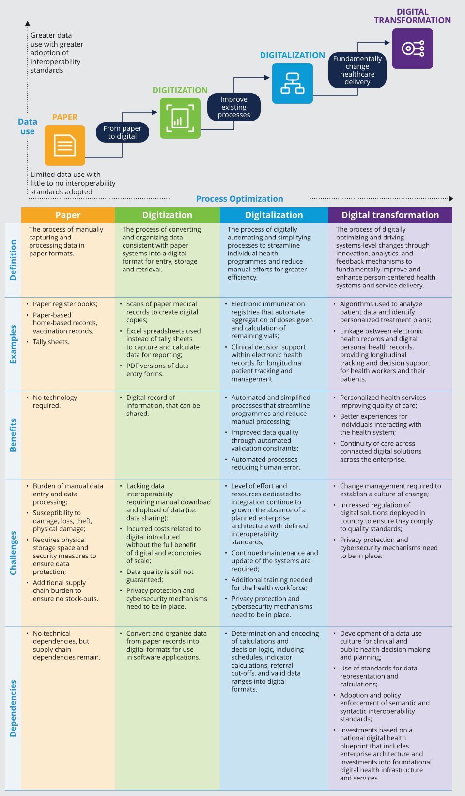
Source: WHO, Digital transformation handbook for primary health care: optimizing person-centred point of service systems, 2024, Fig. 1 (PDF page 15). Generated by scripts/figures/fig1_paper_to_digital.py: the staircase from figure-data/fig-1-paper-to-digital.json, the five comparison rows from the Fig. 1 table block. The original page render is who-iris/library/9789240093362-eng/figures/vfig-p015.png.
✎ edit📣 feedback Recommendation WHO 2019 Digital Guideline Recommendation 8: Digital tracking of clients' health status and services combined with decision support.
Recommendation 8 (WHO 2019 Guideline on Digital Interventions for Health System Strengthening): WHO recommends digital tracking of clients’ health status and services, combined with decision support under these conditions:
- in settings where the health system can support the implementation of these intervention components in an integrated manner; and
- for tasks that are already defined as within the scope of practice for the health worker. (Recommended only in specific contexts or conditions)
Source: WHO guideline: recommendations on digital interventions for health system strengthening. Geneva: World Health Organization; 2019 (ref. 2; https://iris.who.int/handle/10665/311941).
✎ edit📣 feedback Table 2. Fig. 2 as a table: The 2019 WHO guideline: recommendations on digital interventions for health system strengthening
Fig. 2 The 2019 WHO guideline: recommendations on digital interventions for health system strengthening
| Expected Contribution to universal health coverage (UHC) | Digital health intervention (accessible at a minimum via mobile devices) | Recommendation |
|---|---|---|
| Effective coverage Accountability coverage |
Digital tracking of clients’ health status and services (digital tracking) combined with decision support | Recommendation 8: WHO recommends digital tracking of clients’ health status and services, combined with decision support under these conditions: • in settings where the health system can support the implementation of these intervention components in an integrated manner; and • for tasks that are already defined as within the scope of practice for the health worker. (Recommended only in specific contexts or conditions) |
Source: WHO, 2019 (2).
The 2019 WHO guideline: recommendations on digital interventions for health system strengthening
✎ edit📣 feedback Figure 2. Fig. 2. The 2019 WHO guideline: recommendations on digital interventions for health system strengthening
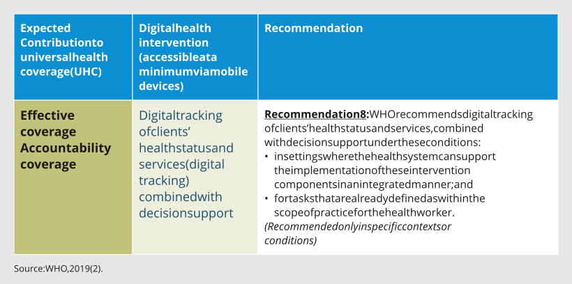
Source: WHO, 2019 (2). Fig. 2 of the handbook (PDF page 16); the guideline's cover picture is not redrawn. Generated by scripts/figures/table_figure.py from the table block t-ch01-fig-2.md; the original page render is who-iris/library/9789240093362-eng/figures/vfig-p016.png.
✎ edit📣 feedback Primary health care digital ecosystem and workflow-based optimization.
Digital technologies of all kinds have become essential resources in primary health care (PHC) and their uptake is growing, with the past decade seeing rapid integration of technology in a range of areas that support primary care and essential public health functions (4). To maximize impact on PHC objectives, these digital technologies need to align with the broader health system infrastructure and exist in a comprehensive and resilient digital ecosystem. They also need to be integrated into routine, integrated, person-centred workflows, and be mindful of inequalities in adoption and use. Fig. 3 illustrates a layered PHC digital ecosystem, oriented towards the need of the patient, care-seeker or health service user, demonstrating how information systems and digital technologies connect to the different domains of PHC models of care (5). Digital transformation of PHC requires integration of tools such as PCPOSS, which can help coordinate care, ensure continuity of services and improve the health service user journey. PCPOSSs provides a strategic entry point for establishing individual health records that support people- centred information systems. PCPOSSs are often implemented to improve the continuity of care through an integrated health information system, generating data directly from the point of care for aggregate analyses and strengthening overall health systems through data-driven continuous improvement.
This handbook offers practical methods for pulling together the components of a complex health information system, including the workflows and care pathways, into a digital solution. It includes guidance on conducting workflow- based needs assessments to identify the requirements for a PCPOSS – its features, functions and data elements that will be critical for optimizing processes and systems to achieve digital transformation, with all the accompanying benefits. Throughout the handbook, there is also guidance on how to incorporate the technical specifications provided by SMART Guidelines into a PCPOSS. Digitizing paper-based records provides an opportunity to do more than just replacing paper – it also provides an opportunity to optimize other existing data and business processes to improve the quality of care. A business process is a set of related activities or tasks performed to achieve a specific objective (6-9) and can be used, for example, to document a typical clinical workflow. PCPOSSs go beyond simple record keeping by supporting extra functionality, such as longitudinal health service user tracking and decision support for health workers – all with the intention of improving and enhancing the health workers’ routine workflows to deliver continuity of care and better management for health service users, in an integrated manner (2,10).
✎ edit📣 feedback Figure 3. Fig. 3. Primary health care digital ecosystem
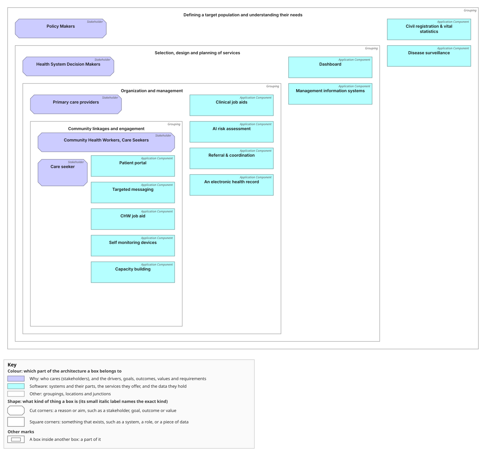
Fig. 3 Delivering an integrated ecosystem of information systems and digital health solutions supports the PHC approach Notes: The different information systems and digital solutions can cover more than one layer of the figure, or domain, as they are cross-cutting. However, for illustrative purposes, they have been allocated to only layer. Source: Adapted from WHO, 2024 (5) DEFINING A TARGET POPULATION AND UNDERSTANDING THEIR NEEDS Policy Makers Centered around the needs of the care seeker SELECTION, DESIGN AND PLANNING OF SERVICES Health System Decision Makers ORGANIZATION AND MANAGEMENT Primary care providers COMMUNITY LINKAGES AND ENGAGEMENT Community Health Workers, Care Seekers PATIENT PORTAL To help support patient self care and self management CLINICAL JOB AIDS To ensure quality of clinical service delivery DASHBOARD (with geolocated data on disease prevalence, service gaps, etc) To support decision making for universal health service coverage, programme monitoring AN ELECTRONIC HEALTH RECORD A longitudinal record of patient care seeking CIVIL REGISTRATION & VITAL STATISTICS To provide a population profile (birth rate extent and causes of mortality) DISEASE SURVEILLANCE Digital tools to understand population risk profile TARGETED MESSAGING Chatbot, SMS, etc. to give targeted health information to patients AI RISK ASSESSMENT To flag at risk patients for early intervention MANAGEMENT INFORMATION SYSTEMS To provide canonical record of system inputs CHW JOB AID To help community health workers improve coverage REFERRAL & COORDINATION Tools to ensure coordination between different provider types SELF MONITORING DEVICES To support patient monitoring and self care CAPACITY BUILDING Video-based support and supervision to expand knowledge and skills of providers
Delivering an integrated ecosystem of information systems and digital health solutions supports the PHC approach
✎ edit📣 feedback Reasons for digitizing paper-based systems (clerical burden, workforce shortage and missed services).
Paper-based systems place a large clerical burden on the health system and health workers, such as duplicative data entry for reuse outside the immediate clinical context, or manual data tabulation for aggregate reporting. This clerical burden takes valuable time away from service provision, in the face of a health workforce shortage (11), reducing quality of care with care pathways that may be disjointed rather than integrated. For example, health service users who have missed services or appointments are difficult to identify in a timely fashion, limiting opportunities for real-time, data- driven decision-making (12). Additionally, paper-based systems are associated with lack of quality control due to communication gaps, language barriers and misplacement of documents. Such systems not only prevent ease of access to health data by health service users themselves but also lead to missed opportunities for health service provision and care coordination, as well as self-care and continuity of treatment at home. If digital systems already exist, they are often designed to facilitate data collection and reporting of aggregated data, rather than to provide important feedback at the point at which health services are provided (i.e. the point of care) to improve the quality of individual-level care. Poorly designed “data collection for data’s sake” digital systems result in similar burdens on the health system to those caused by paper-based systems. Well-designed PCPOSSs can play a critical role in ensuring quality health care, and in strengthening the overall resilience of health systems, especially in this post-pandemic period. There is currently an opportunity to strengthen the quality of service delivery and reinforce health worker performance by using the data generated at the point of care, made available by these PCPOSSs.
1.1 Person-centred point of service systems
✎ edit📣 feedback 1.1 Person-centred point of service systems (PCPOSS): four application types and 13 WHO DHI classification codes.
A person-centered point of service system (PCPOSS), digital in nature, facilitates the provision and
delivery of health services to individuals (i.e. persons, clients, patients, health service users) at the
point of care.
A PCPOSS includes software capabilities that enable health-
care providers to access, record and update individuals’
health information as well as interactively communicate with
them. The term PCPOSS encompasses various services and
application types, including:
• Decision support systems: digital “tools which combine
medical information databases and algorithms with patient
specific data. They are intended to provide healthcare
professionals and/or users with recommendations for
diagnosis, prognosis, monitoring and treatment of
individual patients” (3).
• Community-based information systems: Systems that
“facilitate data collection and use at the community level.
These applications are utilized by community-based
workers who provide health promotion and disease
prevention activities” (3).
• Electronic health record systems: “Secure, online systems
that hold information about people’s health and clinical
care and are managed by health workers” (3).
• Personal health records: A “record of an individual’s health
information in a structured digital format for a set of defined
use cases over which the person has agency” (3).
Additionally, PCPOSS encompasses some of the following
digital health interventions (3):
• 1.1.3 Transmit targeted alerts and reminders to health
service user(s)
• 2.1.2 Enrol person(s) for health services/clinical care plan
• 2.2.1 Longitudinal tracking of a health service user’s health
status and services
• 2.2.2 Manage person-centred structured clinical records
• 2.2.3 Manage person-centred unstructured clinical records
(e.g. notes, images, documents)
• 2.2.4 Routine health indicator data collection and
management
• 2.3.1 Provide prompts and alerts according to protocols
• 2.3.2 Provide checklists according to protocols
• 2.3.3 Screen persons by risk or other health status
• 2.5.2 Communication and performance feedback to health
workers
• 2.7.1 Identify persons in need of services
• 4.1.2 Data storage and aggregation
• 4.1.3 Data synthesis and visualizations.
A person-centred point of service system (PCPOSS) is one
in which health service users are served by and are able to
participate in trusted health systems that respond to their
needs in humane and holistic ways (13). It is used by health
workers at the point of care (i.e. point of service) to create
a persistent person-centric record of health events, across
one or more health domains, encounters and health services
received, allowing for longitudinal tracking of health service
users, and it links to clinical decision support systems to allow
for follow-up and reinforce good standards of practice.
A PCPOSS also links to reporting and management tools to
reinforce accountability. End-users of a PCPOSS can include
all health worker occupational groups operating at all care
levels, including those operating outside of formal health-
care facilities (e.g. community health workers and health
volunteers). It should be noted that community-based
information systems, decision support systems, electronic
health record systems and personal health records may
exist separately. However, the focus of this handbook is on a
combined PCPOSS.
Based on the principle of “collect once, use for many
purposes” (14), a PCPOSS that uses interoperability standards
facilitates the collection and use of more reliable source data
to feed in to aggregate indicators at management levels by
providing access to primary data collected directly at the point
of care, allowing a shift away from the need for aggregate
indicators to be reported separately and for investments in
paper-based or siloed digital indicator reporting systems
(Fig. 4). Data collected for the purpose of service delivery can
also be used to calculate aggregate indicators required for
reporting and accountability, including monitoring provider,
stock and system performance. Factors affecting overall health
system performance can thus be highlighted more promptly
and accurately while reducing the clerical burden on health
workers.
Achieving person-centred primary health care (PHC) is
predicated on the establishment of a longitudinal record
that enables an individual to have continuity of care across
time, facilities, providers and systems. This requires adoption
and rigorous implementation of semantic classifications
and terminology standards (e.g., ICD-11, SNOMED-GPS)
and syntactic interoperability standards (e.g., HL7 FHIR) to
ensure person-centric data representation. Approaches and
systems that omit adoption of health-specific, person-centred,
semantic and syntactic data representation standards in their
pursuit of PHC digital transformation will accumulate technical
debt. Consequently, they will fail to deliver sustainable data
exchange and continuity of care across time, health domains,
facilities, providers and systems (16,17). WHO is software
agnostic and does not provide recommendations on specific
digital health tools, software or platforms.
✎ edit📣 feedback Figure 4. Fig. 4. The added value of “collect once, use for many purposes” principle
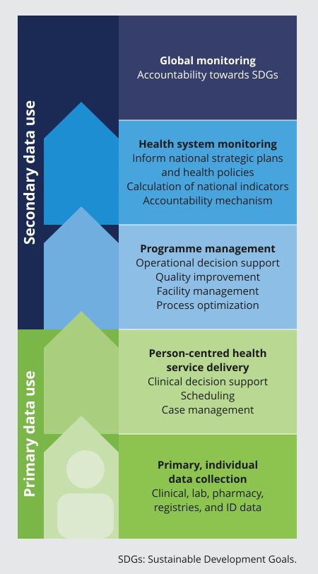
Source: Adapted from WHO, 2020 (15). Fig. 4 of WHO, Digital transformation handbook for primary health care, 2024 (PDF page 19). Generated by scripts/figures/fig4_collect_once.py from figure-data/fig-4-collect-once.json; the original page render is who-iris/library/9789240093362-eng/figures/vfig-p019.png.
1.2 SMART Guidelines
✎ edit📣 feedback 1.2 SMART Guidelines: five knowledge layers (L1–L5) and country adaptation.
SMART Guidelines are Standards-based, Machine-readable, Adaptive, Requirements-based, and Testable recommended digital capabilities, health and data content. SMART Guidelines are WHO’s approach designed to systematize and accelerate the consistent application of recommended, life- saving interventions in the digital age (18). As countries are investing heavily in PCPOSSs, SMART Guidelines provide detailed specifications, documentation and encoded content to facilitate accurate and consistent incorporation of WHO clinical, public health, data and interoperability recommendations into PCPOSSs. SMART Guidelines are a layered set of reusable documentation and digital health components designed to advance the development of digital services and applications that incorporate recommended clinical, public health and health system data, interoperability guidelines and best practices. The five knowledge layers are: • L1 Narrative: Enhanced clinical and public health guidelines and data recommendations; • L2 Operational: Digital adaptation kits (DAKs); • L3 Machine readable: Machine-readable implementation guides; • L4 Executable: Reference applications and services; • L5 Dynamic: Precision health model. These layers inform guideline developers on how to translate recommendations into specifications and standards; technologists on how to integrate recommendations into updatable digital systems; and countries on how to localize, make interoperable, institutionalize, and update digital systems consistent with evidence-based recommendations. The SMART Guidelines framework establishes standards of care and represents different operational components as knowledge layers, which serve as a starting point for informing the content of a PCPOSS that countries can incorporate, adapt and implement into country-specific contexts (see Fig. 5) (19). Instances where the knowledge layers and artifacts of SMART Guidelines may be useful are outlined throughout the document.
✎ edit📣 feedback Figure 5. Fig. 5. WHO SMART Guidelines approach
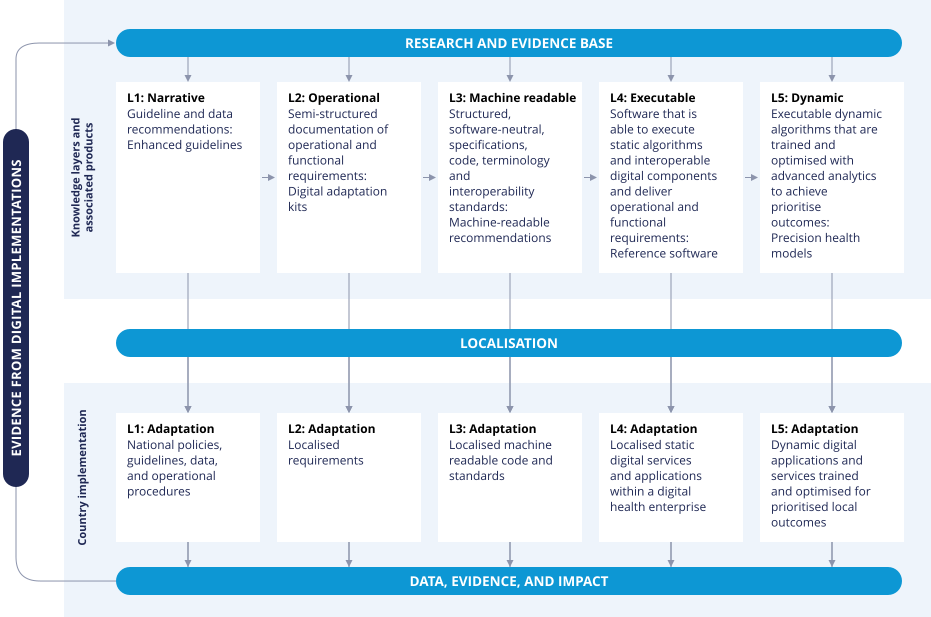
Source: WHO, Digital transformation handbook for primary health care: optimizing person-centred point of service systems, 2024, Fig. 5 (PDF page 20), adapted from WHO SMART Guidelines (Mehl et al., 2021). Generated by the smart-approach-svg tool from the who-iris SMART Guidelines approach figure data (who-iris/library/9789240116191-eng/figure-data/fig-5-smart-guidelines-approach.json); the original page render is who-iris/library/9789240093362-eng/figures/vfig-p020.png.
1.3 How this handbook was developed
✎ edit📣 feedback 1.3 How this handbook was developed (CRDM, Principles for Digital Development, and country consultations).
This practical guide was developed from the experiences and feedback of a variety of experts and digital health practitioners. Experiences, insights, templates and feedback were gathered through a series of consultations, a working group, expert interviews and dedicated feedback sessions. This included lessons learned from a study on digitalizing paper-based routine health information systems across different contexts, including Bangladesh, Pakistan and Indonesia (12). Additionally, the approach outlined within this workbook leverages the Collaborative Requirements Development Methodology (CRDM) – an established approach to documenting requirements for health information systems (20). This handbook adheres to the guiding principle of “collect once, use for many purposes” in addition to the Principles for Digital Development (see Annex 1) – with a special emphasis on the principle to “establish people-first data practices” and “design with people”. “Establish people-first data practices” is to ensure digital services and initiatives move away from solely collecting data that is used to create value for an organization or institution, without delivering any direct value back to those people from whom the data is derived (21). In practice, for example, digital solutions that are built to support monitoring and evaluation programmes should not only serve the purpose of monitoring and evaluation, but should also bring value to the health worker. “Design with people” means that people who will manage, use, potentially benefit, and/or be affected by a given technology should meaningfully participate in the design of those systems so that the digital technology is built in a way that is fit-for-purpose (21). Desk reviews of documentation and methodologies of software development and human-centred design were also used to refine the information in this handbook. Some methodologies and templates have been adapted from these prominent sources for relevance to PCPOSS development. All individual external contributors involved in the development and review of this handbook declared any potential conflicts of interest prior to providing their contributions, including contributions made during their participation in any technical consultations. These declarations were reviewed by WHO, which found none of the contributors to have conflicting interests that would influence the content of this publication.
Chapter 2. How to use this handbook
✎ edit📣 feedback 2.1 Targeted scenarios of digital readiness (paper-only vs partly digitized).
CHAPTER 2 How to use this handbook
This chapter outlines how this handbook can be leveraged by key stakeholders and provides references to key resources for creating or updating a PCPOSS – whether from the early point of digitizing paper forms in paper-based systems or updating legacy digital systems to improve the integration of care pathways. Point of service systems that combine community-based information systems, decision support systems, electronic health record systems, and personal health records are, for short, a person-centred point of service system (PCPOSS). There are many health areas to which PCPOSS can be applied. However, this resource was written to be agnostic on which health area may be most appropriate at the point of care, and neutral about software choices, too.
This handbook was written with the intent to help articulate software and system requirements for a PCPOSS in these two key scenarios of digital readiness: Starting from a paper-only system: There are no PCPOSSs in place. Only paper-based records are being used at the point of care for the purposes of service delivery and reporting. The public health authority wants to optimize paper forms and transition to a digital system. Starting with some parts of the system already digitized: There are some disparate and disconnected PCPOSSs in place, but perhaps with limited functionality, no interoperability, or with only a limited number of health domains covered. Some uses of the digital system are occurring in parallel with paper-based systems at the point of care. The public health authority wants to combine siloed PCPOSSs and implement a comprehensive and interoperable PCPOSS to replace the legacy paper system entirely; or update existing PCPOSSs to better integrate care pathways. This handbook focuses on the fundamental components of how to shift from paper-based, individual-level systems such as clinical records, register books and paper registries to an optimized digital system. This process comprises a series of steps including requirements gathering, workflow mapping, data mapping, explicating decision-support logic, designing and testing.
✎ edit📣 feedback Decision table Starting-scenario classification decision table (section 2.1).
Starting-scenario classification decision table (section 2.1)
Formal DMN 1.5 decision table (Decision_StartingScenario, hitPolicy="FIRST") derived from section 2.1 (Assessing the starting scenario, sec-007), evaluated at gateway GW_StartingScenario in pcposs-implementation-lifecycle.bpmn.
Decision structure
Written from the DMN file next to this page.
- Inputs:
anyPcpossInPlace(boolean): Any PCPOSS in place?comprehensiveAndInteroperable(boolean): Comprehensive and interoperable?
- Outputs:
scenario("paper only"|"partly digitized"|"unknown"): Starting scenarioentryStep: Entry step
- Rules: 4, hit policy
FIRST. The last rule returns"unknown"when any input has not been answered.
Starting scenario (2.1)
The first rule that matches applies.
| Rule | When | Then | ||
|---|---|---|---|---|
| any PCPOSS in place? | comprehensive and interoperable? | starting scenario | entry step | |
| 1 | false | any | paper only | 3.1 Follow key requirement-gathering methods (including 3.4.1 paper form inventory and 3.4.2 form data mapping) |
| Section 2.1 (Starting from a paper-only system): no PCPOSS is in place; only paper-based records are used at the point of care for service delivery and reporting. Enter at 3.1 and complete all five streamlining steps in 3.4, including 3.4.1 paper form inventory and 3.4.2 form data mapping. | ||||
| 2 | true | false | partly digitized | 3.1 Follow key requirement-gathering methods (assess existing PCPOSS features; 3.4.1-3.4.2 optional if data list is established, recommended for full paper replacement) |
| Section 2.1 (Starting with some parts of the system already digitized): disparate or disconnected PCPOSSs exist with limited functionality, no interoperability, or parallel paper registers. Enter at 3.1 to document existing system features and combine or upgrade siloed PCPOSSs into a comprehensive, interoperable PCPOSS (3.4.1-3.4.2 remain recommended when replacing paper registers in their entirety). | ||||
| 3 | true | true | partly digitized | 3.1 Follow key requirement-gathering methods (update existing PCPOSS to integrate care pathways; skip 3.4.1-3.4.2 where data list is already established) |
| Section 2.1: a PCPOSS is in place and being updated to better integrate additional care pathways or health domains. Inputs are explicit so that a missing answer falls to Rule_Unknown. | ||||
| 4 | any | any | unknown | Answer every input question before this decision is made. |
| Unknown: at least one input has not been answered, so the source gives no outcome. Answer every input question first. (House rule: every table has an explicit unknown outcome, dth-phc#1 R3.) | ||||
2.2 Targeted users
✎ edit📣 feedback 2.2 Targeted users of this handbook.
This handbook is aimed at individuals and teams seeking to gather and optimize the content and functional requirements for either adapting a PCPOSS or developing one bespoke. It is written for those with a public health and/or clinical background who have a baseline understanding of health information systems but may not be technologists themselves. In essence, this handbook is written for those who will fill the business analyst role on the team, and those who will play a key role in solution design. This can include people who work specifically in health informatics or in relevant programmatic teams within the public health authority, as well as implementing partners, software designers and software vendors. Other stakeholders and development partners (e.g. donors) can also benefit from this document to help improve their understanding of the key activities involved, at a project level, to move from paper to digital. Although this resource is not targeted to the end-users of PCPOSS (i.e. health workers involved in care delivery or health service users), they should be involved throughout the entire development and adaptation process. Their feedback and involvement are especially crucial during the requirements gathering, validation and testing processes.
✎ edit📣 feedback Persona Business analyst.
Business analyst
A core member of the PCPOSS implementing team (section 2.2) who translates health service delivery needs, clinical guidelines and operational workflows into structured requirements:
- Role summary (agent draft, not handbook text; for review): Someone who helps bridge the gap between what users need and how the technology should work. They help translate health requirements into technical plans. The handbook does not define this role.
- Phase 1 — Understanding user requirements (Chapter 3,
sec-011): Leads workflow mapping in BPMN (3.3), user persona and user story elicitation (3.2, 3.5), decision-support table authoring (3.6, Annex 11), scheduling logic definition (3.7, Annex 12), and requirements prioritization (3.8, Annex 13). - Phase 2 — Design and adaptation (Chapter 4,
sec-020): Validates functional requirements with end-users (4.2) and collaborates with designers and user researchers on wireframes, mock-ups and clickable prototypes (4.3).
Three-way linkage
- BPMN lanes performed:
understand-user-requirements.bpmn#Lane-Ch3-BA(Business Analyst & User Researcher)design-and-adaptation.bpmn#Lane-Ch4-Designer(Business Analyst, Designer & User Researcher)
- Concepts: Business Analyst, User Persona
- Glossary term:
dth-phc:business-analyst.
✎ edit📣 feedback Persona Health informatician.
Health informatician
A core member of the PCPOSS implementing team (section 2.2) responsible for health data dictionaries, terminology bindings, indicator mappings and semantic interoperability:
- Role summary (agent draft, not handbook text; for review): Someone who understands both health care and information systems. They help make sure the system captures and uses health data in a meaningful and standardized way. The handbook does not define this role.
- Phase 1 — Understanding user requirements (Chapter 3,
sec-011,sec-015): Leads the paper-form inventory (3.4.1, Annex 7), form data element extraction (3.4.2, Annex 8), aggregate indicator mapping (3.4.3, Annex 9), data-element minimization decision (keep-data-element.dmn, 3.4.4, Fig. 12), and core data dictionary compilation with ICD-11, LOINC, SNOMED-GPS, ICHI and ICF terminology bindings (3.4.5, Annex 10). - Phase 2 — Design and adaptation (Chapter 4,
sec-020,sec-023): Co-designs the system architecture and HL7 FHIR / IHE interoperability profiles (4.4).
Three-way linkage
- BPMN lanes performed:
understand-user-requirements.bpmn#Lane-Ch3-HI(Health Informatician & M&E Specialist)design-and-adaptation.bpmn#Lane-Ch4-Architect(Solutions Architect & Health Informatician)
- Concepts: Health Informatician, User Persona
- Glossary term:
dth-phc:health-informatician.
✎ edit📣 feedback Persona Software engineer.
Software engineer
A core member of the PCPOSS implementing team or technology partner (section 2.2) who builds, configures, integrates and tests the PCPOSS software:
- Role summary (agent draft, not handbook text; for review): A technical expert who creates and adapts software solutions. Sometimes referred to as a developer. The handbook does not define this role.
- Phase 2 — Design and adaptation (Chapter 4,
sec-020,sec-024): Builds and configures the PCPOSS increment (MVP, Version 1, Version 2) and executes the 7-part QA test suite in section 4.5 (unit tests, integration tests, functional tests, performance tests, security tests, usability tests and compatibility tests). - Phase 3 — Training, testing and roll-out (Chapter 5,
sec-025,sec-027): Supports technical maintenance training (5.1.2), resolves defects found during User Acceptance Testing (5.2), and supports production deployment and ongoing maintenance (5.3, 5.4).
Three-way linkage
- BPMN lanes performed:
design-and-adaptation.bpmn#Lane-Ch4-Engineer(Software Engineer & Technology Partner)pcposs-implementation-lifecycle.bpmn#Lane-Lifecycle-Tech(Technology Partner & Software Engineer)training-testing-and-roll-out.bpmn#Lane-Ch5-Engineer(Technology Partner & Software Engineer)
- Concepts: Software Engineer, User Persona
- Glossary term:
dth-phc:software-engineer.
✎ edit📣 feedback Persona Solutions architect.
Solutions architect
A core member of the PCPOSS implementing team (section 2.2) who designs the end-to-end technical architecture and enterprise integration of the PCPOSS:
- Role summary (agent draft, not handbook text; for review): Someone who designs the overall technical structure of the system, making sure all the parts fit together and can connect with other digital health systems. The handbook does not define this role.
- Phase 2 — Design and adaptation (Chapter 4,
sec-020,sec-023): Designs the system architecture and interoperability standards (4.4), aligning the PCPOSS with national enterprise architecture (OpenHIE / ITU digital health platform), offline-first synchronisation, security/privacy controls, and HL7 FHIR / IHE profiles. - Phase 4 — Scale-up (Chapter 6,
sec-029): Assesses technical infrastructure and interoperability readiness for national scale-up (6.1).
Three-way linkage
- BPMN lanes performed:
design-and-adaptation.bpmn#Lane-Ch4-Architect(Solutions Architect & Health Informatician)scale-up.bpmn#Lane-Ch6-ME(M&E Specialist & Solutions Architect)
- Concepts: Solutions Architect, User Persona
- Glossary term:
dth-phc:solutions-architect.
✎ edit📣 feedback Persona Designer.
Designer
A core member of the PCPOSS implementing team (section 2.2) responsible for human-centred interface design and prototyping:
- Role summary (agent draft, not handbook text; for review): Someone who focuses on how the software looks and feels to the user, making sure it is easy to understand and navigate. The handbook does not define this role.
- Phase 2 — Design and adaptation (Chapter 4,
sec-020,sec-022): Designs the three progressive prototype stages in section 4.3 — low-fidelity wireframes, visual mock-ups, and interactive clickable prototypes — iterating each stage based on end-user usability testing with health workers and health service users.
Three-way linkage
- BPMN lanes performed:
design-and-adaptation.bpmn#Lane-Ch4-Designer(Business Analyst, Designer & User Researcher)
- Concepts: Designer, User Persona
- Glossary term:
dth-phc:designer.
✎ edit📣 feedback Persona User researcher.
User researcher
A core member of the PCPOSS implementing team (section 2.2) who studies end-users in their real clinical and community environments:
- Role summary (agent draft, not handbook text; for review): Someone who studies how health workers and other users actually work, through interviews and observations, to make sure the system fits their real-world context. The handbook does not define this role.
- Phase 1 — Understanding user requirements (Chapter 3,
sec-011,sec-013): Conducts contextual observations (Annex 2) and end-user interviews (Annex 3) in primary health care facilities to build grounded user personas (3.2, Annex 4). - Phase 2 — Design and adaptation (Chapter 4,
sec-020,sec-022): Facilitates end-user usability testing on wireframes, mock-ups and clickable prototypes (4.3).
Three-way linkage
- BPMN lanes performed:
understand-user-requirements.bpmn#Lane-Ch3-BA(Business Analyst & User Researcher)design-and-adaptation.bpmn#Lane-Ch4-Designer(Business Analyst, Designer & User Researcher)
- Concepts: User Persona, User Researcher
- Glossary term:
dth-phc:user-researcher.
✎ edit📣 feedback Persona Technology partner (vendor).
Technology partner (vendor)
An external or internal software development organization contracted or designated to configure, build, deploy and maintain the PCPOSS (sections 2.2, 4.1, 5.1.2, 5.2, 5.3):
- Role in the handbook: Engaged during software and vendor selection (4.1, Annex 1), collaborates on requirements validation (4.2), system architecture (4.4) and software build/QA testing (4.5), delivers maintenance training to local IT support teams (5.1.2), remedies defects uncovered during UAT (5.2), and supports production deployment and level-3 maintenance (5.3, 5.4).
Three-way linkage
- BPMN lanes performed:
pcposs-implementation-lifecycle.bpmn#Lane-Lifecycle-Tech(Technology Partner & Software Engineer)design-and-adaptation.bpmn#Lane-Ch4-Engineer(Software Engineer & Technology Partner)training-testing-and-roll-out.bpmn#Lane-Ch5-Engineer(Technology Partner & Software Engineer)
- Concepts: Technology Partner, User Persona
- Glossary term:
dth-phc:technology-partner.
✎ edit📣 feedback Persona Implementing team.
Implementing team
The multidisciplinary team formed in section 2.2 (sec-008) that coordinates and executes all four phases of the PCPOSS implementation lifecycle (Chapters 2–6):
- Composition (section 2.2): Brings together the six core specialist roles —
pers:business-analyst,pers:health-informatician,pers:software-engineer,pers:solutions-architect,pers:designerandpers:user-researcher— working alongside clinical subject-matter experts, M&E specialists and public health authority leadership. - Responsibilities across phases: Assesses the starting scenario (2.1), aligns with the national digital health strategy (2.3), leads stakeholder engagement (3.1), coordinates requirements prioritization (3.8), conducts software and vendor selection (4.1), develops training plans and UAT test cases (5.1, 5.2), manages production deployment and feedback loops (5.3, 5.4), and executes staged legacy phase-out and change management during scale-up (6.4, 6.5).
Three-way linkage
- BPMN lanes performed:
pcposs-implementation-lifecycle.bpmn#Lane-Lifecycle-Impl(Implementing Team)understand-user-requirements.bpmn#Lane-Ch3-BA(Implementing Team)design-and-adaptation.bpmn#Lane-Ch4-BA(Implementing Team)training-testing-and-roll-out.bpmn#Lane-Ch5-Impl(Implementing Team & Trainers)scale-up.bpmn#Lane-Ch6-Impl(Implementing Team)
- Concepts: Implementing Team, User Persona
- Glossary term:
dth-phc:implementing-team.
✎ edit📣 feedback Persona Monitoring and evaluation (M&E) specialist.
Monitoring and evaluation (M&E) specialist
A specialist Named in the Phase 1 (sec-011) and Phase 4 (sec-029) "Who should be involved" panels who defines aggregate health indicators and monitors PCPOSS implementation performance and scale-up readiness:
- Phase 1 — Understanding user requirements (Chapter 3,
sec-011,sec-015): Maps national and programme aggregate indicators (HMIS / DHIS2 reporting indicators) to individual-level PCPOSS data elements (3.4.3, Annex 9) so routine reporting is generated automatically from point-of-service care without duplicate tally sheets. - Phase 4 — Scale-up (Chapter 6,
sec-029–sec-031): Conducts the scale-up readiness assessment (6.1), defines SMART objectives and Table 5 benchmarks (6.2), and monitors implementation progress against targets (6.3) feeding theready-to-scale-up.dmngateway.
Three-way linkage
- BPMN lanes performed:
pcposs-implementation-lifecycle.bpmn#Lane-Lifecycle-Impl(Monitoring & Evaluation Specialist)understand-user-requirements.bpmn#Lane-Ch3-HI(Health Informatician & M&E Specialist)scale-up.bpmn#Lane-Ch6-ME(M&E Specialist & Solutions Architect)
- Concepts: Monitoring and Evaluation Specialist, User Persona
- Glossary term:
dth-phc:monitoring-and-evaluation.
✎ edit📣 feedback Persona Public health authority / Ministry of Health (MoH).
Public health authority / Ministry of Health (MoH)
The primary target audience and governing authority of the handbook (section 1.3, sec-006; Phase 1–4 panels): national and subnational decision-makers, digital health directors and PHC programme managers within the Ministry of Health or public health agency:
- Governance and stewardship: Aligns the PCPOSS initiative with the national digital health strategy and enterprise architecture (2.3), charters the multidisciplinary implementing team (2.2), approves requirement priorities (
requirement-priority.dmn, 3.8), establishes data-protection, device-management and clinical governance policies before roll-out (5.0,sec-025), and governs the scale-up readiness decision (ready-to-scale-up.dmn, 6.1–6.2).
Three-way linkage
- BPMN lanes performed:
pcposs-implementation-lifecycle.bpmn#Lane-Lifecycle-PHA(Public Health Authority / MoH)understand-user-requirements.bpmn#Lane-Ch3-PHA(Public Health Authority / Programme Lead)training-testing-and-roll-out.bpmn#Lane-Ch5-PHA(Public Health Authority / Governance)scale-up.bpmn#Lane-Ch6-PHA(Public Health Authority / MoH)
- Concepts: Public Health Authority, User Persona
- Glossary term:
dpi-h-ra:ministry-of-health.
✎ edit📣 feedback Persona Health worker (clinician, nurse, midwife, community health worker).
Health worker (clinician, nurse, midwife, community health worker)
The primary point-of-service end-user of a PCPOSS (section 1.1, sec-004; Phase 1–4 panels): doctors, clinical officers, nurses, midwives and community health workers delivering primary health care services:
- Co-design and validation: Participates in stakeholder mapping (3.1), contextual observations and interviews (3.2), prototype usability testing across wireframes, mock-ups and clickable prototypes (4.3), training on PCPOSS use (5.1.1), User Acceptance Testing (5.2), and routine clinical data entry and data-use culture at scale (6.4, 6.5).
Three-way linkage
- BPMN lanes performed:
pcposs-implementation-lifecycle.bpmn#Lane-Lifecycle-Users(Health Workers & Facility Staff)understand-user-requirements.bpmn#Lane-Ch3-Users(Health Workers, Clerks, Supervisors & Service Users)design-and-adaptation.bpmn#Lane-Ch4-Users(Health Workers & Health Service Users)training-testing-and-roll-out.bpmn#Lane-Ch5-Users(Health Workers, Clerks & Supervisors)scale-up.bpmn#Lane-Ch6-Users(Health Workers & Clerks)
- Concepts: Health Worker, User Persona
- Glossary term:
dth-phc:health-worker(aligned withdth-hrh:health-worker).
✎ edit📣 feedback Persona Clerk (facility registration and records staff).
Clerk (facility registration and records staff)
Health facility registration, reception and medical records staff who check in clients, verify identity in the client registry / EHR, and manage paper or electronic registers:
- Role in the handbook: Highlighted in stakeholder mapping (3.1), featured as a distinct swimlane in the reproduced WHO ANC DAK Workflow A registration business process (Figs. 10 & 11, section 3.3.2,
sec-014), included in facility training and UAT (5.1, 5.2), and central to the staged phase-out of legacy paper registers and paper backup SOPs (6.4,sec-032).
Three-way linkage
- BPMN lanes performed:
understand-user-requirements.bpmn#Lane-Ch3-Users(Health Workers, Clerks, Supervisors & Service Users)training-testing-and-roll-out.bpmn#Lane-Ch5-Users(Health Workers, Clerks & Supervisors)scale-up.bpmn#Lane-Ch6-Users(Health Workers & Clerks)
- Concepts: Clerk
- Glossary term:
dth-phc:clerk.
✎ edit📣 feedback Persona Supervisor / health facility manager.
Supervisor / health facility manager
Health facility in-charges, clinical supervisors and district PHC supervisors who oversee service delivery, data quality, staff training and change management at the facility level:
- Role in the handbook: Named in the Phase 1 (
sec-011), Phase 3 (sec-025) and Phase 4 (sec-029) panels; participates in requirements elicitation (3.1–3.2), oversees facility-level training and UAT (5.1–5.2), leads the staged phase-out of legacy paper registers and paper backup SOPs (6.4,sec-032), and champions change management and an electronic data-use culture (6.5,sec-033).
Three-way linkage
- BPMN lanes performed:
understand-user-requirements.bpmn#Lane-Ch3-Users(Health Workers, Clerks, Supervisors & Service Users)training-testing-and-roll-out.bpmn#Lane-Ch5-Users(Health Workers, Clerks & Supervisors)scale-up.bpmn#Lane-Ch6-Users(Health Facility Manager & Supervisor)
- Concepts: Supervisor
- Glossary term:
dth-phc:supervisor.
✎ edit📣 feedback Persona Health service user (patient / client).
Health service user (patient / client)
Any person receiving or seeking primary health care services, as well as their family members or caregivers, and the direct user of Personal Health Record (PHR) and targeted client communication capabilities:
- Glossary definition (
sec-002-glossary, health service users): "Also known as patients, clients or beneficiaries, these are individuals who receive formal and/or informal health services." - Role in the handbook: Named in the Phase 1 (
sec-011), Phase 2 (sec-020) and Phase 3 (sec-025) panels; participates in user research (3.2) and prototype usability testing (4.3), and appears as theClientswimlane in the reproduced WHO ANC DAK Workflow A registration business process (Figs. 10 & 11, section 3.3.2).
Three-way linkage
- BPMN lanes performed:
understand-user-requirements.bpmn#Lane-Ch3-Users(Health Workers, Clerks, Supervisors & Service Users)design-and-adaptation.bpmn#Lane-Ch4-Users(Health Workers & Health Service Users)training-testing-and-roll-out.bpmn#Lane-Ch5-Users(Health Workers, Clerks & Supervisors)
- Concepts: Health Service Users, User Persona
- Glossary term:
dth-phc:health-service-user(aligned withdpi-h-ra:patient).
✎ edit📣 feedback Persona Electronic health record (EHR) system.
Electronic health record (EHR) system
One of the four core application types that make up a PCPOSS (section 1.1, sec-004; Glossary, sec-003) — a longitudinal digital record of a health service user's clinical encounters, diagnoses, observations, medications and referrals across care episodes:
- Role in the handbook: Captures standardized core data elements at the point of care (3.4), exchanges longitudinal clinical summaries with the national Shared Health Record (
SHR Repository) and registries via HL7 FHIR / IHE profiles (4.4), and feeds aggregate HMIS reporting indicators automatically (3.4.3).
Three-way linkage
- BPMN lanes & resources:
- Declared as
<bpmn:resource id="pers-system-ehr">inpcposs-implementation-lifecycle.bpmnand modelled underunderstand-user-requirements.bpmn#Lane-Ch3-HIanddesign-and-adaptation.bpmn#Lane-Ch4-Architect.
- Declared as
- Concepts: Electronic Health Record System (EHR), Point-of-service applications
- Glossary term:
dth-phc:electronic-health-record(links todpi-h-ra:electronic-health-record).
✎ edit📣 feedback Persona Decision-support system (DSS).
Decision-support system (DSS)
One of the four core application types that make up a PCPOSS (section 1.1, sec-004; Glossary, sec-003) — the clinical and operational rule engine that evaluates decision-support tables (3.6, Annex 11) and scheduling logic (3.7, Annex 12) at the point of care:
- Role in the handbook: Executes WHO SMART Guidelines decision-support logic (3.6, Annex 11) and follow-up/immunization scheduling rules (3.7, Annex 12) to present real-time clinical prompts, alerts, counselling messages and care-plan schedules to health workers.
Three-way linkage
- BPMN lanes & resources:
- Declared as
<bpmn:resource id="pers-system-dss">inpcposs-implementation-lifecycle.bpmnand linked to Step 3.6 (Task_3_6_DecisionSupport) and Step 3.7 (Task_3_7_SchedulingLogic) inunderstand-user-requirements.bpmn#Lane-Ch3-BAand Step 4.4 (Task_4_4_ArchitectureAndStandards) indesign-and-adaptation.bpmn#Lane-Ch4-Architect.
- Declared as
- Concepts: Decision Support System, Point-of-service applications
- Glossary term:
dth-phc:decision-support-system(links todpi-h-ra:clinical-decision-support-systems).
✎ edit📣 feedback Persona Community-based information system (CBIS).
Community-based information system (CBIS)
One of the four core application types that make up a PCPOSS (section 1.1, sec-004; Glossary, sec-003) — a mobile or offline-capable digital system used by community health workers (CHWs) during household visits, community outreach and bidirectional referral with primary care facilities:
- Role in the handbook: Supports community-level registration, household enumeration, community case management, defaulters tracing and referral linkage between community health workers and facility-based EHR systems (1.1, 4.4).
Three-way linkage
- BPMN lanes & resources:
- Declared as
<bpmn:resource id="pers-system-cbis">inpcposs-implementation-lifecycle.bpmnand integrated indesign-and-adaptation.bpmn#Lane-Ch4-Architect.
- Declared as
- Concepts: Community-Based Information System, Point-of-service applications
- Glossary term:
dth-phc:community-based-information-system.
✎ edit📣 feedback Persona Personal health record (PHR) system.
Personal health record (PHR) system
One of the four core application types that make up a PCPOSS (section 1.1, sec-004; Glossary, sec-003) — a client-facing digital application or messaging interface enabling health service users (pers:health-service-user) to view their own health records, receive appointment reminders and targeted health information, and interact with primary care services:
- Role in the handbook: Connects health service users directly to their longitudinal health information, immunization schedules and follow-up care plans (1.1, 3.7, 4.4).
Three-way linkage
- BPMN lanes & resources:
- Declared as
<bpmn:resource id="pers-system-phr">inpcposs-implementation-lifecycle.bpmnand integrated indesign-and-adaptation.bpmn#Lane-Ch4-Architect.
- Declared as
- Concepts: Personal Health Record (PHR), Point-of-service applications
- Glossary term:
dth-phc:personal-health-record.
✎ edit📣 feedback Persona Donors, development partners and implementing partners.
Donors, development partners and implementing partners
International and domestic funding agencies, multilateral organizations, technical assistance partners and non-governmental implementing partners named in the handbook's target audience (section 1.3, sec-006) and Phase 1 / Phase 4 involvement panels (sec-011, sec-029):
- Role in the handbook: Align investments with the national digital health strategy and DIIG phases rather than funding fragmented vertical tools (2.3,
sec-009), participate in early stakeholder alignment (3.1), and co-finance sustainable long-term operations, infrastructure and capacity building for national scale-up (6.1,sec-029).
Three-way linkage
- BPMN lanes performed:
pcposs-implementation-lifecycle.bpmn#Lane-Lifecycle-PHA(Public Health Authority / MoH, in alignment with Donors & Development Partners)scale-up.bpmn#Lane-Ch6-PHA(Public Health Authority / MoH)
- Concepts: Donors and Development Partners
- Glossary term:
dth-phc:implementing-partner.
2.3 Before using this resource
✎ edit📣 feedback 2.3 Before using this resource: DIIG prerequisites, enterprise architecture and Box 1 Unique identifiers.
The key assumption for users of this resource is that a comprehensive high-level needs assessment and strategic planning has already been conducted and concluded that implementing a PCPOSS is crucial for operationalizing a country’s digital health strategy. This needs assessment should have included a root-cause analysis illustrating the need for the PCPOSS to improve service delivery and accountability measures. If such a needs assessment has not been done, refer to the WHO publication, Digital implementation investment guide (DIIG): integrating digital interventions into health programmes (22) and Digital implementation investment guide (DIIG): quick deployment guide (23). If there is no clear plan for how PCPOSSs can be leveraged as a public health intervention, please refer to the WHO guideline: recommendations on digital interventions for health system strengthening (2). If there is no national digital health strategy, refer to the National eHealth strategy toolkit produced jointly by WHO and the International Telecommunications Union (ITU) (24) and the Global strategy on digital health 2020–2025 (25). Additionally, the SDG digital investment framework developed by ITU and the Digital Impact Alliance provides more guidance on developing a digital health architecture that leverages a whole-of-government approach (26). These are among many other resources for implementing digital health interventions and systems available from WHO, other United Nations agencies and numerous non- governmental organizations as seen in Fig. 6, Planning and implementing a digital health enterprise: phases, steps and resources. This handbook is intended to support Phase 5, Determining health content requirements. In addition to this handbook, Digital adaptation kits (DAKs) and machine-readable recommendations from the SMART Guidelines work can be leveraged to support determination of health content requirements (Fig. 6).
In addition to the foundational prerequisites to make digitized primary health care feasible, such as sufficient electricity and telecommunications, the following is a checklist of considerations before following the guidance of this handbook.
❑Value proposition and business case of implementing PCPOSS is established.
❑The proposed PCPOSS aligns with the country’s health strategy and clearly solves a public health problem that would strengthen the health system overall.
❑Scope in terms of health domain, implementation location, and key functionality of the PCPOSS is pre-determined with a plan to prevent scope creep (scope creep is when the project experiences changes and increases beyond its original mission).
❑A method of unique identification of people, health workers and health facilities (see Box 1) is agreed upon.
❑Governance, policies, and standards to ensure privacy, security and use of discrete, individual-level data have been determined.
❑Means of sustainably financing the solution has already been determined. Total cost of ownership is clearly understood.
❑Targeted end users (i.e. health worker occupational group, e.g. outreach health and social workers, facility and district hospital workers) of the PCPOSS has been specified.
❑Implementation team, timelines and related governance structure of the programme team have been determined. The “product owner” of the PCPOSS has been identified.
❑Opportunities and requirements for interoperability with other software in the larger health information system have been identified. Box 1. Unique identifiers The mechanism for unique identification is the crux of PCPOSS since unique IDs are required for linking an individual’s records and establishing longitudinal tracking. Unique IDs are needed for knowing exactly who received care, what care was provided, and who provided it. IDs are also needed to authenticate records and prevent their duplication, and to ensure the anonymization, privacy and confidentiality of records. The unique IDs used in the system can be derived from a variety of sources depending on what is available in the country. If a system of national ID numbers exists, for example, that could be leveraged, as could systems for national health IDs or social security numbers. If there is no such national-level system for unique IDs, system-generated unique identifiers specific to the system will be needed. These can be produced through biometrics, barcodes (e.g. QR Codes), system-generated numbers, and so on – and can be linked to a national ID system at a later stage. Useful resources for unique identifications: • Considerations and guidance for countries adopting national health identifiers, Joint United Nations Programme on HIV/AIDS (UNAIDS) (2014) (https://www.unaids.org/en/resources/ documents/2014/national_health_identifiers) • Digital identity roadmap guide, International Telecommunications Union (ITU) (2018) (https://www. itu.int/en/ITU-D/ICT-Applications/Pages/digital-identity. aspx) • ID4D practitioner’s guide, The World Bank (2019) (https://id4d.worldbank.org/guide) • Principles on identification for sustainable development: toward the digital age (2022) (https://documents. worldbank.org/en/publication/documents-reports/ documentdetail/213581486378184357/principles-on- identification-for-sustainable-development-toward-the- digital-age) • Integrating unique identification numbers in civil registration (2018) (https://documents. worldbank.org/en/publication/documents-reports/ documentdetail/674401531758210363/integrating- unique-identification-numbers-in-civil-registration) • Unique health identifier assessment tool kit (2018) (https://www.adb.org/documents/unique-health- identifier-assessment-toolkit) High-level support for digitizing This handbook assumes there is already buy-in and support from the appropriate stakeholders within the public health authority. If a PCPOSS has this support at high levels of government and solution has strong government ownership, it will have a higher chance of success and long-term sustainability. WARNING
✎ edit📣 feedback Figure 6–1.1.1. Fig. 6. Planning and implementing a digital health enterprise: phases, steps and resources, with this handbook in phase 05 (adapted from WHO DIIG Fig. 1.1.1)
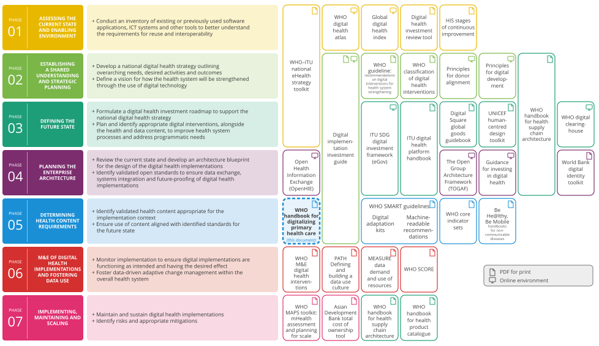
Source: adapted from WHO Digital transformation handbook for health product catalogue, 2025, Fig. 4, itself adapted from the 2020 WHO Digital implementation investment guide (DIIG), Fig. 1.1.1. Generated by the diig-phases-svg tool from the who-iris data for the product catalogue figure and this handbook's adaptation file; this handbook is positioned in phase 05 (Determining health content requirements) and marked "(this document)" in place of the product catalogue handbook.
Fig. 6. Planning and implementing a digital health enterprise: phases, steps and resources, with this handbook in phase 05 (adapted from the product catalogue handbook, Fig. 4, and DIIG Fig. 1.1.1)
✎ edit📣 feedback Fig. 6. Digital health guidelines and tools by DIIG phase (reproduces DIIG Fig. 1.1.1).
Fig. 6. Digital health guidelines and tools by DIIG phase (reproduces DIIG Fig. 1.1.1)
Section 2.3 (sec-009, PDF page 21, Fig. 6, Digital health guidelines and tools) reproduces the seven-phase WHO Digital Implementation Investment Guide (DIIG) architecture roadmap (DIIG Fig. 1.1.1), positioning this handbook in Phase 05 (Determining health content requirements) alongside WHO SMART Guidelines Digital Adaptation Kits (DAKs) and WHO core indicator sets.
- Upstream formal model (
reproduceslink, never redrawn here):smart-base/methodologies/processes/diig-investment-path.bpmn. - Cross-DTH alignment: The same DIIG Fig. 1.1.1 roadmap appears across the WHO Digital Transformation Handbook series (
dth-scFig. 2,dth-pcFig. 4, anddth-hrhfig:diig-phases).
2.4 The stepwise approaches to digitizing
✎ edit📣 feedback 2.4 The stepwise approaches to digitizing (four phases mapped to DIIG and iterative agile MVP loop).
Adhering to the Principles for Digital Development (see Annex 1), this handbook is organized in a stepwise manner that begins with the assumption of a limited or no digital system in place. It is a starting point for detailing plans to implement an enterprise-grade system planned for national scale up and integration with other national-level systems for long-term sustainability. This handbook outlines the end-to-end process that will help transition from a paper system to a digital system. At a high level, this process includes the following steps which serve the basis for the structure of this handbook. 1. Understand user requirements: This includes understanding the users, then identifying, understanding and mapping their workflows, and finally understanding the data needs and the care pathways that will ultimately shape the set of requirements for designing and building the PCPOSS. 2. Undertake design and adaptation: This leverages the understanding of end users and their requirements to design or adapt the PCPOSS so that it is appropriate for the context it will be used in. 3. Conduct training, testing and roll-out: This aims to test the solution with end users and ensure they are bought in and equipped with the skills to use the new solution. 4. Prepare for scaling up: This ensures the appropriate planning for health information exchange within an enterprise architecture, so that the solution can be sustainably scaled to more users and more functionality. Recognizing that the Digital transformation handbook for primary health care presents these four phases in a linear manner, it is important to note that these steps are not always undertaken as such. Quick prototyping and incorporation of feedback is often performed based on the agile methodology (28), thus in each phase, there should be opportunity to update the system based on users’ feedback as seen in Fig. 7. Based on circumstances and resources available, teams s hould determine the order of operations outlined in this handbook recognizing and acknowledging that there are multiple leading practices and methodologies available. Some software-specific or organization-specific methods and practices not covered in this handbook may be preferable, depending on context.
roll out, and scale Iterations for continuous improvement Design Adapt design Adapt design Understand and prioritize user requirements Understand and prioritize user requirements Understand and prioritize user requirements Based on circumstances and resources available, teams should determine the order of operations outlined in this handbook recognizing and acknowledging that there are multiple leading practices and methodologies available. Some software-specific or organization-specific methods and practices not covered in this handbook may be preferable, depending on context.
✎ edit📣 feedback Figure 7. Fig. 7. Steps in this handbook to optimize a PCPOSS (with iterative agile MVP build-and-test loop)
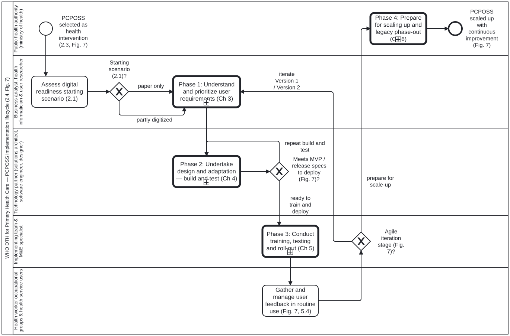
Fig. 7 Iterative and agile approach Minimum viable product (MVP) VERSION 1 VERSION 2 Determine that a PCPOSS is an appropriate health intervention Build and test Build and test Build and test Train users Train users Train users Repeat previous loop until meeting MVP specs to deploy Gather and manage user feedback Gather and manage user feedback Deploy and roll out Deploy and roll out Deploy,
Steps in this handbook to optimize a person-centred point of service system (PCPOSS)
✎ edit📣 feedback Business process PCPOSS four-phase implementation lifecycle and agile iteration loop.
PCPOSS four-phase implementation lifecycle and agile iteration loop
Formal BPMN 2.0 model of the handbook's top-level four-step approach (section 2.4, Fig. 7, sec-010), starting-scenario assessment (section 2.1, sec-007), team formation (section 2.2, sec-008), and alignment with the broader digital health context (section 2.3, sec-009).
Structure of the model (Process_PcpossImplementationLifecycle)
- Preparatory activities (sections 2.1–2.3):
Task_2_1_AssessStartingScenario(2.1 Assess starting scenario): Evaluates facility digitization and infrastructure readiness.GW_StartingScenario(Starting scenario?): Bound tostarting-scenario.dmn#Decision_StartingScenario, branching between"paper only"(Task_2_1a_PaperOnlyPreparation) and"partly digitized"(Task_2_1b_PartlyDigitizedAudit).Task_2_2_FormTeam(2.2 Form multidisciplinary implementing team) andTask_2_3_AlignDigitalHealthContext(2.3 Align with national digital health strategy and DIIG phases).
- Four phases as sub-process
callActivitynodes (section 2.4):Call_Phase1_Requirements→ callsProcess_UnderstandUserRequirements(Chapter 3).Call_Phase2_DesignAdaptation→ callsProcess_DesignAndAdaptation(Chapter 4).Call_Phase3_TrainingTestingRollout→ callsProcess_TrainingTestingAndRollOut(Chapter 5).Call_Phase4_ScaleUp→ callsProcess_ScaleUp(Chapter 6).
- Agile iteration loop across MVP, Version 1 and Version 2 (Fig. 7):
GW_AgileIterationLooploops from Phase 3 roll-out feedback back toGW_Phase1Entryto refine requirements, design, testing and deployment across successive releases (MVP → Version 1 → Version 2) before entering Phase 4 national scale-up, andGW_ScaleUpFeedbackroutes scale-up feedback back into the lifecycle when further iteration is required.
- Inputs and outputs chaining: Each phase's
<bpmn:ioSpecification>records the exact inputs and outputs from the four chapter summary panels (sec-011,sec-020,sec-025,sec-029), with each phase's outputs feeding the next phase's inputs.
2.5 Choices for software and digital applications
✎ edit📣 feedback 2.5 Choices for software and digital applications.
Implementation teams using this handbook are not expected to use any specific software applications during the requirements-gathering and detailed design processes. Regardless of the chosen technology used, the only strong recommendation would be to ensure robust, high-quality documentation of the requirements of the system and its design. Collaboration tools such as project management and file sharing tools (e.g. Microsoft Teams, Slack, Google Drive) should be used to improve the capacity for knowledge sharing within, and between, implementing teams and others involved in the digitizing primary health care processes. The method provided by this handbook is broad and generic. It is the responsibility of implementation teams to follow the appropriate and necessary processes according to country’s local policies and regulations. Software and applications Any software or application mentioned in this document is in no way preferentially endorsed by WHO. The mentions made of any particular tools reflect only the results of research and interviews with implementers of PCPOSSs WARNING
Chapter 3. Understand user requirements
✎ edit📣 feedback Chapter 3 overview: Understand user requirements.
CHAPTER 3 Understand user requirements
The adoption of a person-centred point of service system (PCPOSS) requires a solid understanding of what data health workers need for routine service delivery and bottom-up accountability.
This chapter describes the fundamental task of requirements gathering, in which user needs and constraints are documented. This process will rely on desk reviews, observations, workshops, and in-depth discussions and interviews with key stakeholders. Stakeholders include, but are not limited to, end-users of the system (e.g. appropriate health worker occupational group) and indirect beneficiaries (e.g. public health managers in the public health authority).
By the end of this chapter, the implementation team should have a clear understanding of the scope of the system, how the workflows and data flow may need to be optimized, and the relevant data that will need to be collected and accounted for at individual and aggregate levels. If a digital system already exists, the team should also have a clear understanding of the key functionalities and features of the present system, and how a PCPOSS would complement or upgrade the present system.
✎ edit📣 feedback Table. Chapter 3 phase panel (Who should be involved / Inputs / Tools / Outputs)
| Component | Details |
|---|---|
| Who should be involved? | • Targeted health worker occupational groups (e.g. physicians, nurses, midwives and community health workers), health service users and any other intended end-users, should guide the requirements for a PCPOSS. • Business analysts, health informaticians and people trained in user research should lead the process of gathering requirements and ensuring that the solution will adhere to interoperability standards. • Software engineers should be engaged so they understand the context of the solution they will be responsible for building. • The public health authority should preferably be responsible for these tasks, or at least be consulted and involved throughout the entire process. |
| Inputs | • National health strategy, digital health strategy, health policies, and a strategic direction and scope for the PCPOSS • Health information system, privacy, security and data use policies • Digital health architecture blueprint and high-level requirements for meeting interoperability standards • Infrastructure readiness assessment • Unique identifier method • List of anticipated outcomes against which to measure success • World Health Organization (WHO) and national guidelines for the health area targeted, in addition to the standard operating procedures for care delivery, data and indicator definitions • Existing paper records and register forms • End user and key stakeholder interviews and insights |
| Tools | • Observation templates (Annex 3) • User persona template (Annex 4) • User stories template (Annex 5) • Business process matrix template (Annex 6) • WHO’s Digital adaptation kits • Forms inventory template (Annex 7) • Form data mapping template (Annex 8) • Aggregate indicator mapping template (Annex 9) • Decision table and scheduling matrix template (Annex 10) • Decision table template (Annex 11) • Service schedule template (Annex 12) • Prioritization of requirements template (Annex 13) |
| Outputs | Requirements documentation that includes: • User personas • Use cases • User stories • As-is and to-be business processes • Data dictionary and data model • Documented health service schedule • Documented decision logic algorithms • List of indicators and calculation method • Prioritized functional and non-functional requirements |
Chapter 3 phase panel: Who should be involved, Inputs, Tools and Outputs for understanding user requirements
✎ edit📣 feedback Business process Phase 1: Understanding user requirements (Chapter 3).
Phase 1: Understanding user requirements (Chapter 3)
Formal BPMN 2.0 model of Chapter 3 (sections 3.1 to 3.8, sec-011–sec-019), in which each step produces a WHO SMART Guidelines Digital Adaptation Kit (DAK) component (smart-base DAK block kind).
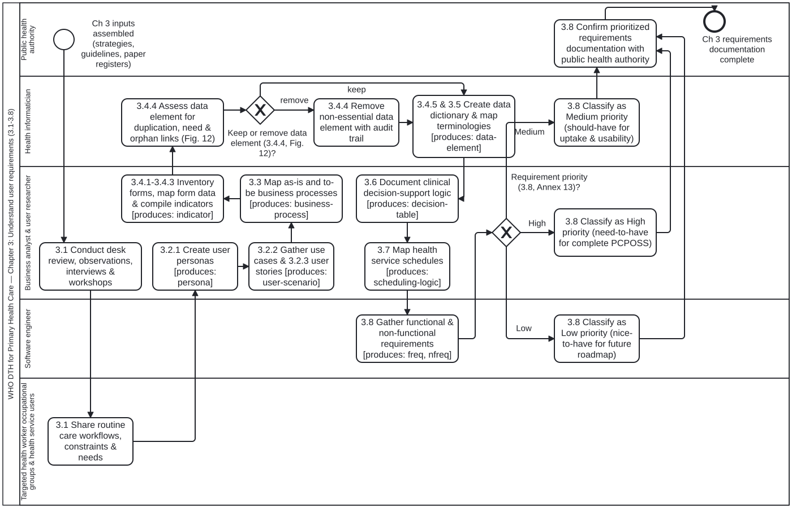
Steps and DAK artefacts produced (Process_UnderstandUserRequirements)
| Step | BPMN Node | Handbook Section & Annex | DAK Block Kind Produced |
|---|---|---|---|
| 3.1 | Task_3_1_IdentifyStakeholders |
3.1 Identify and engage stakeholders (sec-012) |
Stakeholder map & engagement plan (persona) |
| 3.2 | Task_3_2a_ObservationsAndInterviews, Task_3_2b_CreateUserPersonas |
3.2 Gather insights & create user personas (sec-013, Annexes 2–4) |
persona (smart-base:Persona) |
| 3.3 | Task_3_3_MapBusinessProcesses |
3.3 Map business processes and workflows in BPMN (sec-014, Annex 6) |
business-process (smart-base:BusinessProcess, omg-2013-bpmn-2-0-2) |
| 3.4.1–3.4.3 | Task_3_4_1_InventoryPaperForms, Task_3_4_2_MapFormDataElements, Task_3_4_3_MapAggregateIndicators |
3.4.1–3.4.3 Paper forms, data elements & aggregate indicators (sec-015, Annexes 7–9) |
indicator (smart-base:Indicator) & candidate data-element list |
| 3.4.4 | GW_KeepDataElement → Task_3_4_4_RetainDataElement / Task_3_4_4_RemoveDataElement |
3.4.4 Data-element minimization decision tree (Fig. 12, sec-015) |
Evaluated by keep-data-element.dmn#Decision_KeepDataElement |
| 3.4.5 | Task_3_4_5_CompileDataDictionary |
3.4.5 Core data dictionary with ICD-11, LOINC, SNOMED-GPS, ICHI, ICF bindings (sec-015, Annex 10) |
data-element (smart-base:DataElement) |
| 3.5 | Task_3_5_CreateUserStories |
3.5 Create user stories (sec-016, Annex 5) |
user-scenario (smart-base:UserScenario) & functional-requirement |
| 3.6 | Task_3_6_DecisionSupport |
3.6 Define decision-support logic (sec-017, Annex 11) |
decision-table (smart-base:DecisionTable, omg-2024-dmn-1-5) |
| 3.7 | Task_3_7_SchedulingLogic |
3.7 Define scheduling logic (sec-018, Annex 12) |
scheduling-logic (smart-base:SchedulingLogic) |
| 3.8 | Task_3_8_NonFunctionalRequirements → GW_RequirementPriority |
3.8 Define NFRs & prioritize requirements (sec-019, Annex 13) |
non-functional-requirement & prioritized backlog via requirement-priority.dmn#Decision_RequirementPriority |
Comparison with smart-base l2-dak-authoring.bpmn and cat-harness crdm-requirements-definition.bpmn
- Comparison with
smart-base/methodologies/processes/l2-dak-authoring.bpmn:l2-dak-authoring.bpmnmodels global/national L2 DAK authoring from clinical guidelines into the nine DAK components (health interventions, generic personas, user scenarios, business processes, core data elements, decision-support logic, scheduling logic, indicators, functional & non-functional requirements).understand-user-requirements.bpmnadapts that same DAK component sequence for a country PCPOSS implementing team starting from field observations (3.2) and facility paper registers/forms (3.4.1–3.4.4) while adapting global WHO DAKs (sec-011throughsec-019).
- Comparison with
cat-harness/processes/sdlc/crdm-requirements-definition.bpmn:- Both processes operationalize the Public Health Informatics Institute (PHII) Collaborative Requirements Development Methodology (CRDM) (cited in PHC refs. 20 and 50): current-state business process analysis → task/workflow redesign → data and functional requirement derivation → stakeholder validation and prioritization (
High/Medium/Low=Must/Should/Nice-to-have, aligned with RFC 2119 / RFC 8174SHALL/SHOULD/MAY).
- Both processes operationalize the Public Health Informatics Institute (PHII) Collaborative Requirements Development Methodology (CRDM) (cited in PHC refs. 20 and 50): current-state business process analysis → task/workflow redesign → data and functional requirement derivation → stakeholder validation and prioritization (
3.1 Follow key requirement-gathering methods
✎ edit📣 feedback 3.1 Follow key requirement-gathering methods: desk review and observations.
A combination of methods can be used to corroborate information and better guide the process outlined in this chapter for assessing needs and gathering requirements. Before outlining that process in the next sections of this chapter, this section provides an overview of some of these methods: desk review, semi-structured interviews, observations, follow-up interviews to verify observations, and requirements-gathering workshops.
3.1.1 Desk review A review of all local documents pertaining to health worker health worker occupational groups can be a starting base for understanding their responsibilities and services provided. The desk review should prioritize national and context-specific guidelines. Desk reviews are critical to understanding the general context that end-users are operating in, hence it is beneficial to conduct these reviews before engaging with the stakeholders. Global resources that have previously documented health worker workflows should also be consulted since they provide valuable examples that may be applicable to other contexts. These resources include: • existing paper registers and register books; • other tools that health workers use for service delivery; • tools used for reporting and surveillance, including health management information systems; • extensive documentation in health domain-specific Digital adaptation kits (DAKs) being developed by WHO, such as the DAK for antenatal care (ANC) (29), the DAK for family planning (30) and the DAK for HIV (31); and the machine-readable implementation guides (layer 3 of the SMART Guidelines); and • SCORE for health data technical package (33). Review of Digital adaptation kits (DAKs) DAKs are operational, software neutral, standardized documentation that distill clinical, public health and data use guidance into a format that can be transparently incorporated into digital systems. They provide the generic content requirements that should be housed within digital systems and define system requirements, including minimum datasets, decision-support logic and business processes. Such DAKs present as a generic starting point which can then be adapted according to specific context and policies (18,32). TIP
3.1.2 Observations As a complement to interviews, observing or shadowing health workers at their place of work can be a way to capture their interactions with health service users and their workflow in real time. Annex 3 provides a worksheet that can help structure the information captured. These observations can be used to document inconsistencies in workflows, irregularities or deviations from the set schedule, the type and frequency of the data being recorded, and the supervisory relationships between health workers. It is important to schedule observations during various times, including when a health worker is extremely busy and when they are not, so that a PCPOSS can be integrated into, and complement, varied daily activities and routines. Note that strict health service user confidentiality must always be respected while observing interactions between health workers and health service users, and all the necessary consent should also be obtained. Observing end-users If possible, try to observe end-users in such a way that they will not notice they are being observed, to avoid the possible Hawthorne effect. The Hawthorne effect is when people change their behaviour when they realize, or they know, they are being observed (34). When observing end-users in their current work, be sure to note (35): • what they are doing; • how they are doing it; • why they are doing it; • interesting comments by end-users (e.g. health workers) and others (e.g. health service users); • problems faced by end-users; • possible ideas and opportunities that arise when observing end-users; • any additional insights, including insights from body language and emotion; • potential questions for a follow-up interview; • anything unexpected; and • workflow patterns that differ across health workers. TIP
✎ edit📣 feedback 3.1.3–3.1.4 Semi-structured interviews and requirements-gathering workshops.
3.1.3 Semi-structured and follow-up interviews Interviews with health workers, their supervisors and other selected key informants are crucial, as they can help to inform the implementation team about details such as the health interventions being provided (and where), the informal workflows in use, how data are recorded, and the accountability practices being applied across the health system. The interviews can also inform the team about the daily challenges faced by end-users, and how additional functionality in the PCPOSS could address these. Interviewers should agree on a minimum set of questions to provide structure, but this should neither limit possible follow-up nor further questions being asked for clarification. Interviews should ideally take place at the end-user’s place of work (e.g. in the health-care facilities and external locations where health services are provided), to allow the team to have an in-depth understanding of the context in which systems will be implemented. Semi-structured interviews can also help gain an understanding of the daily practices and motivations of the health workers. Aligned with the first principle of the Principles for Digital Development (see Annex 1), to “design with people”, these interviews will help gain key insights on how the PCPOSS will be used and give end-users a part to play in the development of the tool – essential for building a sense of ownership. Annex 2 provides an example interview guide for interviewing a health worker. Semi-structured interviews (36) • Avoid bias. Interviews are not for confirming our biases or preconceived hypotheses of what a system should do, and questions should be structured accordingly. • Start interviews with broad questions to build rapport and gain trust. Then drill down and ask prying questions to find out the information needed. It might be helpful, if consent is given, to record interviews. Fig. 8 illustrates this approach. • Allow time for the interviewee to provide answers. Do not try to fill in silences. The interviewee might need time to provide rich and insightful answers. • Do not correct, judge or challenge the interviewee. It is important to remain unbiased so that the PCPOSS can be designed for end-users, not for the interviewer. • Do not ask leading questions (e.g. “What problems do you have?”) or imply answers (e.g. “Don’t you think a digital system would be great?”). • Do not ask hypothetical questions (e.g. “Would you use this system?”) because the interviewee might just try to be polite and say yes. • Interview with another member of the team so one person can ask questions while another takes notes. • Ask “why?” even if you think you know why. • Ask for specific stories from the past (e.g. “Tell me about the last time you provided antenatal care”). • To help capture nuance, try not to use broad terms like “usually” and “generally”. • Look for inconsistencies between what you have observed and what the interviewee is telling you – for insights into any tensions in policy versus practice. • Pay attention to non-verbal cues such as body language and emotions for extra insight. TIP
3.1.4 Requirements-gathering workshops The size of a requirements-gathering workshop will depend on the scale of the solution, but workshops should include key stakeholders, including the end-users and secondary users (such as supervisors), to gather the necessary requirements for the system, such as whether the solution will be deployed on mobile devices, desktop computers, or both; and whether the platform operates online, offline, or both. Workshops can be reserved for the end of the requirements-gathering process to validate requirements gathered through other methods (i.e. semi-structured interviews and observations). Express gratitude for health worker’s time
✎ edit📣 feedback Table 8. Fig. 8 as a table: example prompts and questions, broad to narrow
Fig. 8 Example prompts and questions for starting broad and narrowing down
| Stage (broad, start here, to narrow, end here) | Prompt | Example |
|---|---|---|
| Trust bump | Intent & Introductions. “Tell me about your background... | ...as a health worker.” |
| Bird’s eye view | “Tell me about the last time you... | ...registered a new client.” ...provided antenatal care.” ...provided a routine immunization to a child.” |
| Magnifying glass | “Can you tell me more... “Can you show me how you... |
...about how you check for malaria?” ...would fill out a paper register now?” |
| Microscope | 5 Why’s. “Why do you... | ...wait until the end of the day to fill out your records?” Based on answer, continue to ask why until a root cause is revealed. |
Express gratitude for health worker’s time.
Source: Tran, 2018 (35). The work was adapted with the addition of questions under each section of the pyramid for contextualization to health care and is licensed under the Creative Commons Attribution-NonCommercial-ShareAlike 4.0 International License (CC BY-NC-SA 4.0 DEED. To view a copy of this license, visit https://creativecommons.org/licenses/by-nc-sa/4.0/).
Example prompts and questions for starting broad and narrowing down
✎ edit📣 feedback Figure 8. Fig. 8. Example prompts and questions for starting broad and narrowing down
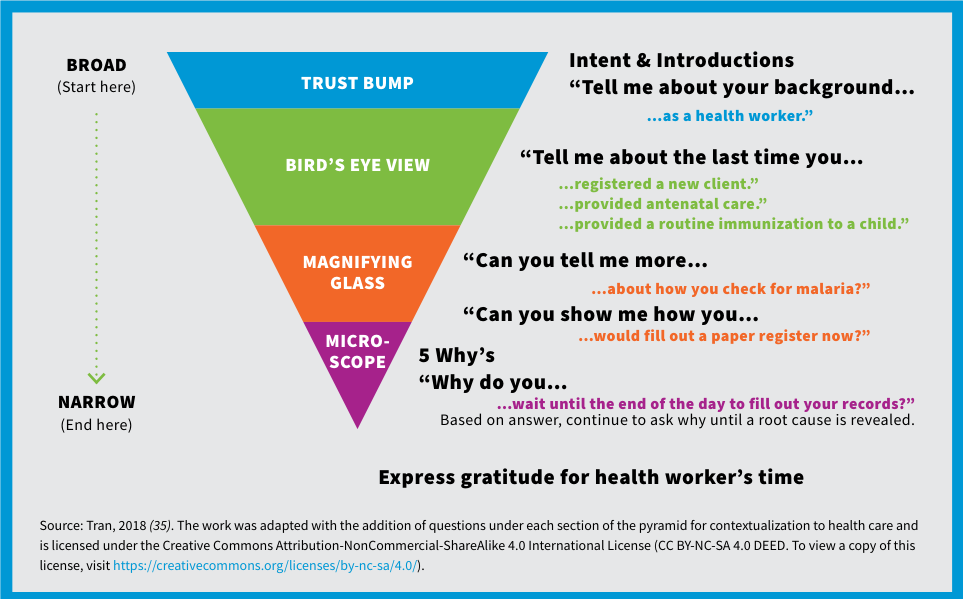
Fig. 8
Example prompts and questions for starting broad and narrowing down
BROAD
(Start here)
Intent & Introductions
“Tell me about your background…
“Tell me about the last time you…
“Can you tell me more…
…about how you check for malaria?”
“Can you show me how you…
…would fill out a paper register now?”
5 Why’s
“Why do you…
…wait until the end of the day to fill out your records?”
Based on answer, continue to ask why until a root cause is revealed.
NARROW
(End here)
TRUST BUMP
BIRD’S EYE VIEW
MAGNIFYING
GLASS
MICRO-
SCOPE
…as a health worker.”
…registered a new client.”
…provided antenatal care.”
…provided a routine immunization to a child.”
Source: Tran, 2018 (35). The work was adapted with the addition of questions under each section of the pyramid for contextualization to health care and
is licensed under the Creative Commons Attribution-NonCommercial-ShareAlike 4.0 International License (CC BY-NC-SA 4.0 DEED. To view a copy of this
license, visit https://creativecommons.org/licenses/by-nc-sa/4.0/).
After the health workers have been shadowed, follow-up
interviews with the same health workers should follow.
Questions should cover any issues about:
• inconsistencies noted in workflows;
• irregularities or deviations from the set schedule;
• the manner and frequency with which data were
recorded;
• supervisory functions;
• any special circumstances that led to variations in
workflow, scheduling, reporting, etc.;
• any workload redundancy, or overlap or integration
with other health workers; and
• any other issues relevant to understanding the health
worker roles.
These follow-up interviews are crucial both to ensure a correct
understanding of observations and to allow understanding of
the root causes of observed actions. It is important to remove
personal and observational biases, as far as possible.
3.2 Get to know the users
✎ edit📣 feedback 3.2.1 Create user personas.
Following the first principle of digital development (design with the user), user-centred design starts with getting to know the people you are designing for through conversation, observation and co-creation. User personas, use cases and user stories are critical tools used in the design process to better understand exactly who the users are and what their needs are. Having an in-depth understanding of who the user is and co-creating designs with the user themselves will lead to a higher chance of uptake and long-term usage of the system. 3.2.1 Create user personas A user persona is a generic depiction of a relevant stakeholder, or end-user of the system who would be interacting with the PCPOSS. It provides the high-level information needed by designers and engineers of the PCPOSS to understand the wants, needs and constraints of the end-users. For example, in the case of family planning, auxiliary nurse midwives and midwives are the primary personas for the PCPOSS. The Digital adaptation kit for family planning: operational requirements for implementing WHO recommendations in digital systems provides detailed descriptions of key generic personas along with related personas such as physicians and pharmacists within the context of family planning services (30). For a full picture of how and where the system will be used, multiple user personas are needed. There should be a persona to reflect each relevant health worker occupational group and each stakeholder (e.g. district health office, public health authority programme manager, health service users, etc.) The information that should be included in a user persona includes (37-39): • generic name for the persona; • background information and demographics (e.g. gender, age, whether they are from the community, whether they have a mobile phone/smartphone); • professional background (e.g. skilled or unskilled, familiarity with digital tools); • environment and any relevant contextual information about the persona’s surroundings (e.g. work site characteristics; rural or urban; availability of electricity, water and internet; distance from nearest referral facility); • expected roles and responsibilities (including roles in data collection and reporting); • actual roles and responsibilities; • context (e.g. other personas/health workers they interact with); • metrics by which their performance is measured by others (e.g. indicators, quotas); • challenges – what are the day-to-day challenges the end- user might face? • motivations and values – what does success look like to this user persona and what do they value? See Annex 4 for the user personas worksheet for noting all the details needed for each type of health worker. Additionally, the Be He@lthy, Be Mobile Personas Toolkit (40) provides additional information and templates on designing, using and revisiting personas along with relevant guiding questions. User personas should be created through the combination of a desk review of official manuals, guidelines, job descriptions and training materials related to the target health worker’s scope of work; discussions with experts in the local context; and most importantly, interviews with health workers themselves. The material reviewed for each user persona should define or explain the health worker’s official work duties in the community, such as what data they are responsible for collecting, what health services they provide, what commodities they dispense to the community, or what counselling they are trained to provide. Anything that delineates the health worker’s scope of work, including sanctioned and unsanctioned work, should be included. What if you don’t have time to create user personas? If conducting primary research on key stakeholders or end-users is not feasible due to time constraints, budget or other factors, consider starting instead with “proto- personas”. Proto-personas apply the same user persona approach, however details like motivation and barriers are drawn from the project team’s domain expertise, assumptions and beliefs. Proto-personas can be a useful way to “get started now” and initiate discussions on user needs. However, it is imperative that they are validated and iterated upon in the field, as new information and learnings are collected and analysed (41). After creating user personas, there should be clear answers to the following questions.
❑ Who will be the end-users of the PCPOSS?
❑ What are their needs in the context they are working in?
❑ What user-related constraints will the system’s design need to consider?
❑ What will motivate uptake of the system (e.g. routinized use, reduced workload, system-based incentives)? TIP CHECKPOINT
✎ edit📣 feedback 3.2.2–3.2.3 Gather use cases and user stories.
3.2.2 Gather use cases Use cases are an important way to understand, in an illustrative manner, how the PCPOSS will be used by the various user personas identified. Use cases highlight the various points of interaction between the users and the system (i.e. when the end-user would use the PCPOSS), and, in turn, inform the key functionalities required. Knowing the use cases is the first step in designing the user experience. It is important to have a clear idea of what the system is intended to do, the context it will operate in, and how end- users would interact with it to achieve their goals. Adhering to the principle of “design with the user” (see Annex 1), when interviewing end-users, the interviewer should be gathering insights into how the solution will be integrated into the end- user’s routine. These will translate into the use cases of the solution. A use case for a digital immunization register, for example, could help to explain how the PCPOSS would be used during an immunization outreach day. Another use case could help to explain how referrals between health facilities would work. Use cases can be depicted in both diagrammatic (42-44) and text form, such as in a user scenario exemplified in WHO’s Digital adaptation kits (29-31). 3.2.3 Gather user stories User stories help to ensure that the system adheres to human- centred design principles. User stories illuminate the voice of the end-users in a way that the user personas and use cases cannot. User stories are the start of generating a long list of requirements, in non-technical terms, that will help the technical team to determine the more specific functional requirements of the system. These stories can be gathered through discussions and interviews with end-users on the challenges they face with the current system. They could be drawn up directly by the end-users themselves if they are familiar enough with digital systems; if not, the implementation team will likely need to derive the user stories from interviews and observations. Gathering user stories is an important design step. End-users and other relevant stakeholders may otherwise be unable to clearly state their functional requirements for the PCPOSS. Each user persona (generated previously – see section 3.2.1) should have a series of user stories, each structured with “As a… I want to… so that” statements: “As a… [user persona], I want to… [do what I want to be able to do differently using an electronic system], so that… [reason for wanting that functionality].” Such statements are intended to better contextualize requirements. The following are some examples. • As a nurse/midwife, I want to know which health service users I need to follow up with today, so that I may plan my workday. • As a nurse/midwife, I want to know what to do in situations when I cannot ask my supervisor, so that I can still provide quality care. • As a nurse/midwife and community health worker [this user story applies to two personas], I want to be able to report my tally sheets directly to my supervisor so that I do not waste my time with reporting. • As a nurse/midwife, community health worker and health facility manager [this user story applies to multiple personas], I want to be able to access health service user health records when the electricity goes out, so thatI can continue my work regardless. • As a health facility manager, I want to know which health worker is responsible for which health service user, so that I can manage my health workforce. Annex 5 gives a template for recording user stories. The list of “I want to…” statements will eventually translate into a long list of functional requirements – in other words, what the end- users want the system to do. WHO’s Digital adaptation kits (DAKs) provide examples of user personas and functional requirements written in the format of user stories.
3.3 Map business processes and workflows
✎ edit📣 feedback 3.3 Map business processes and workflows (BPMN conventions, annotations, as-is and to-be analysis).
Business processes are sets of related activities and tasks performed to achieve a specific objective (6–9). In health care, business processes include, among many other things, health service user registration, counselling, service provision and referral. Workflows are a visual representation of the progression of activities (tasks, events, interactions) performed within a business process (45). The specific activities or tasks depicted in a workflow include manual and machine-automated activities. Understanding the experiences of intended users and their daily interactions is an essential step to the development of a PCPOSS, as each health worker occupational group’s roles and responsibilities will greatly affect their workflows. Visualizing the workflow in a structured manner will allow designers of the system to easily drill down on “pain points” and redundancies. Prior to mapping and creating these workflows, it is recommended that a full inventory of the business processes that will be involved with the PCPOSS is taken. This should include processes that reflect care pathways involving integrated services across different levels of the health system, different health worker occupational groups, and health domains. A business process matrix (see Fig. 9 for example and see Annex 6 for a guide) is useful for: • taking stock of the business processes that need to be mapped; • gaining clarity about who the key stakeholders are and how they will interact with the PCPOSS; • gaining clarity on the linkages across different levels of the health system that enable integrated service delivery of care pathways; • determining a clear start and endpoint for each business process based on previous desk reviews, interviews and service-delivery observations.
3.3.1 Workflow mapping conventions Once the requirements-gathering team has taken an inventory of the key business processes using the business process matrix, the relevant workflows should be created. This step should allow for the creation of a visual map of the current (as-is) service delivery, data collection, coordination and referral activities performed by the health worker occupational group(s) of interest. The workflow diagram should note the different steps or tasks to achieving a business process (46). As-is workflows should depict what actually happens, not what should happen. As-is workflows are depicted at this stage to ensure that the PCPOSS implemented will be built for usability – there will always be reasons why certain tasks that should be happening now are not happening. Lack of supplies, time or health worker training are some examples. Standard workflow guidelines, if available, can be used as a reference on what should happen, which can be depicted in “to-be” workflows. A PCPOSS can help health workers to follow the to-be workflows. Conventional diagramming techniques should be used so that the workflow can be universally understood. Multiple maps may need to be generated, with connectors indicating their linking points. Business Process Model and Notation (BPMN) version 2.0 (47) is a widely used set of diagramming conventions. It is important to use this standard documentation convention to facilitate collaboration and comparisons across systems. For a simplified and shortened version of BPMN, Table 1 is an overview of key symbols (48,49). There are many commonly used workflow-mapping software programmes available, including diagrams.net, Cawemo, Microsoft PowerPoint, Microsoft Visio and SmartDraw.
3.3.2 Process labelling and annotations Examples of workflows with annotations can be found in WHO’s Digital adaptation kits (DAKs). Each workflow diagram should be clearly named with the service title and given a process ID number – for example, “1. Registration” or “A. Registration”; “2. Antenatal care first encounter” or “B. Antenatal care first encounter” (49-52). Additionally, each task, or activity, should be numbered with an activity ID, and consistent language should be used across processes. Continuing with the above example, the “register health service user” activity within the workflow diagram for process 1 can be labelled “Activity 1.1” or “Activity A1”, and the same activity in process 2 can be labelled “Activity 2.1” or “Activity B1”, depending on how the process and activities are numbered. Regardless, proper and consistent labelling is crucial for later data mapping and requirements gathering. See Fig. 10 for an example registration business process workflow to identify and register a pregnant woman in order to proceed to the ANC consultation from ANC DAK.
3.3.3 As-is and to-be analysis When developing the as-is workflow for each of the relevant processes, it should become clear which activities are redundant (as they are unnecessarily repeated across multiple workflows). Redundant activities in paper-based systems could include health service user registration. If a health service user has already registered (i.e. provided their name, age, address and other demographic information) for the purposes of immunization, they should not have to give the same information again for the purposes of ANC. Reporting activities can also be seen to take up significant time, which can be reduced through automated reporting systems. These redundancies and bottlenecks within individual workflows aggregate to become pain points across the health system. An initial set of pain points should already have been gathered through observations and interviews, but this analysis will systematically depict them. Once the as-is workflows are mapped, the to-be workflows should be mapped to depict how the PCPOSS can automate certain activities, remove redundancies and improve the overall workflow, by increasing efficiencies, or improving effectiveness and overall quality of care. These workflows also represent the functional requirements of the solution. If the as-is workflows reveal persistent gaps in adhering to service-delivery protocols, for example, the to-be workflows should address those gaps by either providing a more usable solution (e.g. a pre-filled form or facilitated calculation) or simply eliminating the need to follow that specific step (e.g. through an automated functionality in the system). Using the same BPMN standard described in section 3.3.1 (workflow mapping conventions), the to-be workflows should: • eliminate redundant tasks; • eliminate unnecessary data collection; • reduce bottlenecks; • consolidate related tasks if possible; • create more linkages to data across health worker occupational groups; • attempt to improve the quality-of-service delivery and the accountability mechanisms overall; and • integrate service delivery across different levels of the health system along care pathways. Conducting an as-is and to-be analysis will allow the implementation team to communicate effectively to key stakeholders what the process changes will be once the new system is implemented. Furthermore, because the workflows (both manual and digital) will affect the usability of the digital system, it is important to gain consensus among the key stakeholder groups on what the to-be workflows should be. At the end of this exercise, there should be:
❑ an inventory of business processes
❑ as-is workflows for each business process with points of data collection, bottlenecks and redundancies clearly labelled
❑ to-be workflows for each business process, clearly labelling where the PCPOSS would facilitate or entirely replace certain tasks.
✎ edit📣 feedback Table 1. Table 1. Key Business Process Model and Notation (BPMN) symbols
Table 1. Key Business Process Model and Notation (BPMN) symbols
| Symbol | Symbol name | Description |
|---|---|---|
| Pool (Lane 1, Lane 2, Lane 3) | Pool | A pool consists of multiple “swim lanes” that depict all the individuals or types of users involved in carrying out the business process or workflow. Diagrams should be clear, neat and easy for all viewers to understand the relationships across the different swim lanes. For example, a pool would depict the business process of conducting an outreach activity, which involves multiple stakeholders represented by different lanes in that pool. |
| Pool — Lane 1 (highlighted), Lane 2, Lane 3 | Swim lane | Each individual or type of user is assigned to a swim lane, a designated area for noting the activities performed or expected by that specific actor. For example, a nurse may have one swim lane; the supervisor would be in another swim lane; the health service users would be classified in another swim lane. |
| Thin circle | Start event or trigger event | The workflow diagram should contain both a start and an end event, defining the beginning and completion of the task, respectively. |
| Thin circle with envelope | Start event message | This is a type of start event. In some instances, the workflow can start with a start event “message”. A “message” in BPMN does not mean only letters, emails or calls, but also information exchanged between two different systems, such as data exchange, notifications, etc. Any action that refers to a specific addressee, and represents or contains information for the addressee, is a message. |
| Thick circle | End event | There can be multiple end events depicted across multiple swim lanes in a business process diagram. However, for diagram clarity, there should only be one end event per swim lane. |
| Rounded rectangle | Activity, process, step or task | Each activity should start with a verb, for example, “register client”, “calculate risk”. Between the start and end of a workflow, there should be a series of activities noting the successive actions performed by the actor in that swim lane. There can also be subprocesses of each activity. |
Rounded rectangle with [+] |
Activity with subprocess | This denotes an activity that has a much longer subprocess to be detailed in another diagram. If the diagram starts to become too complex and unhelpful, the subprocess symbol should be used to reference another process depicted on another page. |
| Rounded rectangle with table icon | Activity with business rule | This denotes a decision-making activity that requires the business rule, or decision-support logic, to be detailed in a decision-support table. This means that the logic described in the decision-support table will come into play during this activity, as outlined in the business process. This is usually reserved for complex decisions. |
| Rounded rectangle with loop arrow | Loop activity | This loop activity or loop task symbolizes an activity or task that is repeated until it no longer needs to be repeated. For example, vaccine administration can happen as many times as the number of vaccines that need to be given. |
Rounded rectangle with [+] ~ |
Ad hoc subprocess | An ad hoc subprocess can contain multiple tasks. One or more tasks in this shape should be performed, and they can be performed in any order. However, not all of these activities need to be finished before moving on to the next activity. |
| Solid arrow | Sequence flow | This denotes the flow direction from one process to the next. The end event should not have any output arrows. All symbols (except for start event) may have an unlimited number of input arrows. All symbols (except for end event and gateway) should have one and only one output arrow, leading to a new symbol, looping back to a previously used symbol or to the end event symbol. Connecting arrows should not intersect (cross) each other. |
| Dashed arrow | Message flow | This denotes the flow of data or information from one process to another. This is usually used for when data are shared across swim lanes or stakeholder groups. |
Diamond with X |
Exclusive gateway | This exclusive gateway symbol is used to depict a split in the workflow into two mutually exclusive, binary pathways. There should only be two different outputs that originate from the decision point. If you find yourself needing more than two output or sequence flow arrows, you most likely are trying to depict decision-support logic or a business rule. This should be depicted as an activity with business rule (above) instead. |
Diamond with + |
Parallel gateway | The parallel gateway symbol is used to depict a split in the workflow into more than one concurrent activities and pathways in a workflow. It can also be used to depict when concurrent pathways join together into a single pathway. |
| Double circle with filled right arrow | Throw – link event | The throw – link event serves as the start of an off-page connector. It is the end of the process when there is no more room on the page for that workflow or the end of a subprocess that is part of a larger process. There will need to be a catch link that follows the throw link. |
| Double circle with outline right arrow | Catch – link event | The catch – link serves as the end of an off-page connector. It is the start of the new process on a different page from the throw link or the start of a subprocess that is part of a larger process. There needs to be a throw link that is aligned to the catch link. |
Source: Object Management Group (47). Note: The BPMN standard outlines additional conventions and nuanced symbols that can be used. The above selection of symbols should be sufficient, though, for the purposes of illustrating the business process workflows in a clear, standardized way.
✎ edit📣 feedback Table 9. Fig. 9 as a table: Example business process matrix from family planning DAK
Fig. 9 Example business process matrix from family planning DAK
| # | Process name | Process ID | Personas | Objectives | Task set |
|---|---|---|---|---|---|
| — | Title | ID used to reference this process throughout the DAK | Individuals interacting to complete the process | A concrete statement describing what the process seeks to achieve | The general set of activities performed within the process |
| A | Registration | FP.A | • Client • Clerk or health-care provider |
To ensure client is located in the system with updated personal details or, if not located, entered into the system to be put into a queue to await counselling | Starting point: Client arrives at facility and checks in with clerk • Search for client record • Review and update client record • Create a new client record |
| B | Family planning counselling | FP.B | • Client • Health-care provider (clinician, nurse midwife or community health worker) |
To discuss possible family planning methods with client and for client to select a method that they are medically eligible for | Starting point: Client has been registered at the health-care facility and called in for counselling. Family planning counselling can happen alongside other health services (e.g. nutrition counselling, child immunizations) • Take client history • Conduct a risk assessment • Discuss issues and concerns if a returning client or a client already on a method • Counsel on possible family planning methods and reproductive intentions • Check medical eligibility criteria • Select method • Check stock and skills for delivering method • If facility is not equipped to provide the method, refer |
| C | Service provision | FP.C | • Client • Health-care provider |
To provide the method(s) or service(s) the client requires, if the client is medically eligible for them | Starting point: Client has selected a method and is medically eligible or eligible with clinical judgment • Obtain informed consent • Determine when to start method • Provide method and/or explain how to use method • Discuss dual protection • Determine follow-up requirements and schedule follow-up, if needed |
Source: WHO (30)
Example business process matrix from family planning DAK
✎ edit📣 feedback Figure 9. Fig. 9. Example business process matrix from family planning DAK
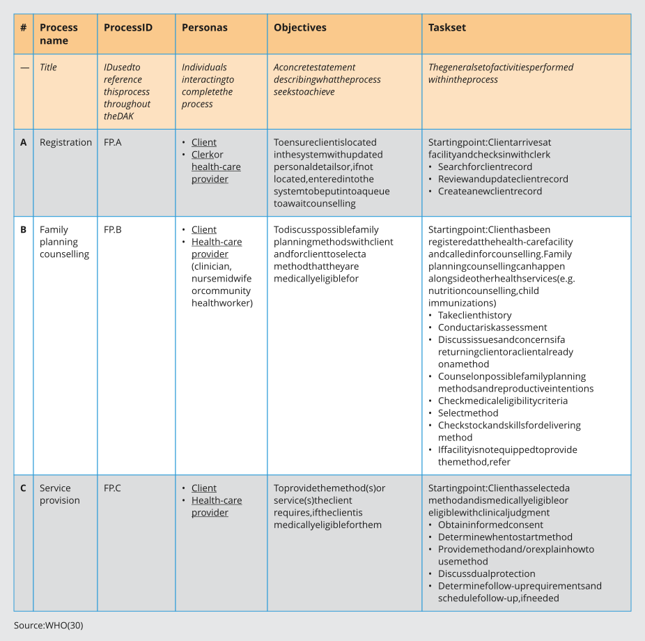
Source: WHO (30). Fig. 9 of the handbook (PDF page 35). Generated by scripts/figures/table_figure.py from the table block t-ch03-fig-9.md; the original page render is who-iris/library/9789240093362-eng/figures/vfig-p035.png.
✎ edit📣 feedback Figure 10. Fig. 10. Workflow A: Registration business process (from WHO ANC DAK)
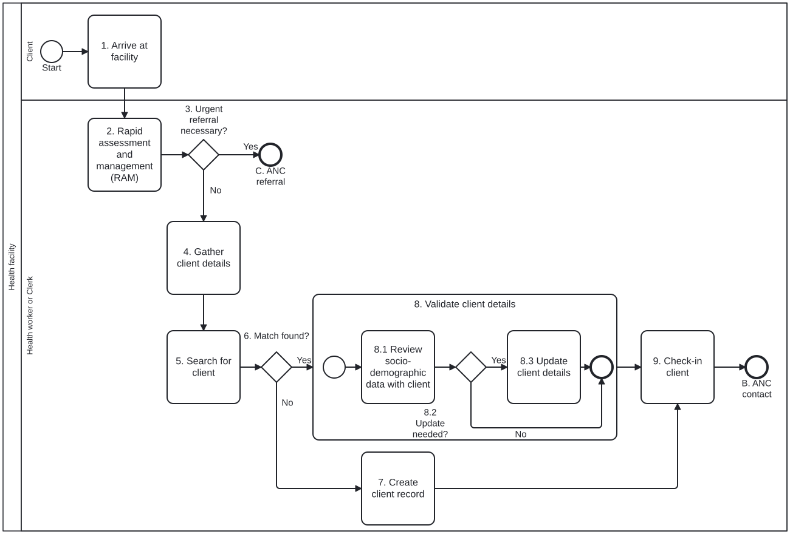
Fig. 10 Workflow A: Registration business process
Source: WHO (29)
Workflow A: Registration business process
✎ edit📣 feedback Table 11. Fig. 11 as a table: Notes and annotations for Workflow A: Registration business process
Fig. 11 Notes and annotations for Workflow A: Registration business process
REGISTRATION BUSINESS PROCESS NOTES AND ANNOTATIONS
General note: Registration may be conducted as a stand-alone process by a data clerk/administrative persona ahead of the ANC encounter with a clinical health-care provider or it may be conducted directly by the health-care provider as part of the overall ANC encounter.
| Activity | Notes and annotations |
|---|---|
| 1. Arrive at facility | » Woman arrives at the facility. » She may or may not have an identification card with her. » Client could already be registered at the health-care facility for another service. |
| 2. Rapid assessment and management (RAM) | » The registration clerk or the first health worker the woman encounters assesses for any possible visible danger signs. » Note: there could be decision-support logic input here as well, but for the reference content we have determined that RAM is outside of the scope of this ANC DAK. |
| 3. Urgent referral necessary? | » Determine whether urgent referral is required based on the RAM. » If yes, initiate referral (see Business process C: ANC referral). |
| 4. Gather client details | » The health worker or data clerk searches for the woman’s name using available identifiers. » Ask the client whether they have previously been issued a unique identifier. » Does the client have an identification card/number/barcode? » Does client say whether she is a returning or a referred client? » If a referral, check for referral slip or data from the community. » Determine whether the client is new to the health-care facility/health post. » For returning clients, details will be retrieved from the registry of clients at this facility or, if possible, from a central client registry. |
| 5. Search for client | » This search process can be done through a variety of means depending on what mechanisms are available in country. For example, clients can be searched for by using their name, unique identifier, a QR code or even biometrics. |
| 6. Match found? | » If multiple records are found and no unique ID, provide option to merge records. |
| 7. Create client record | » Issue a unique identifier, if used and possible at the facility. |
| 8. Validate client details | » Review and update client record. 8.1. Review sociodemographic data with client: Review client’s non-clinical information – name, address, contact information, etc. 8.2. Update needed? Has the client moved? Has she changed her contact information or has any other sociodemographic information changed? 8.3. Update client details: Client can provide updated information if she has recently moved or changed other details. » Merge/update client records. » May also happen during counselling process. » In some contexts, this may be linked to billing needs. |
| 9. Check in client | » The pregnant woman waits in line to be called by the health worker for the ANC contact. |
Source: WHO (29)
Notes and annotations for Workflow A: Registration business process
✎ edit📣 feedback Figure 11. Fig. 11. Notes and annotations for Workflow A: Registration business process
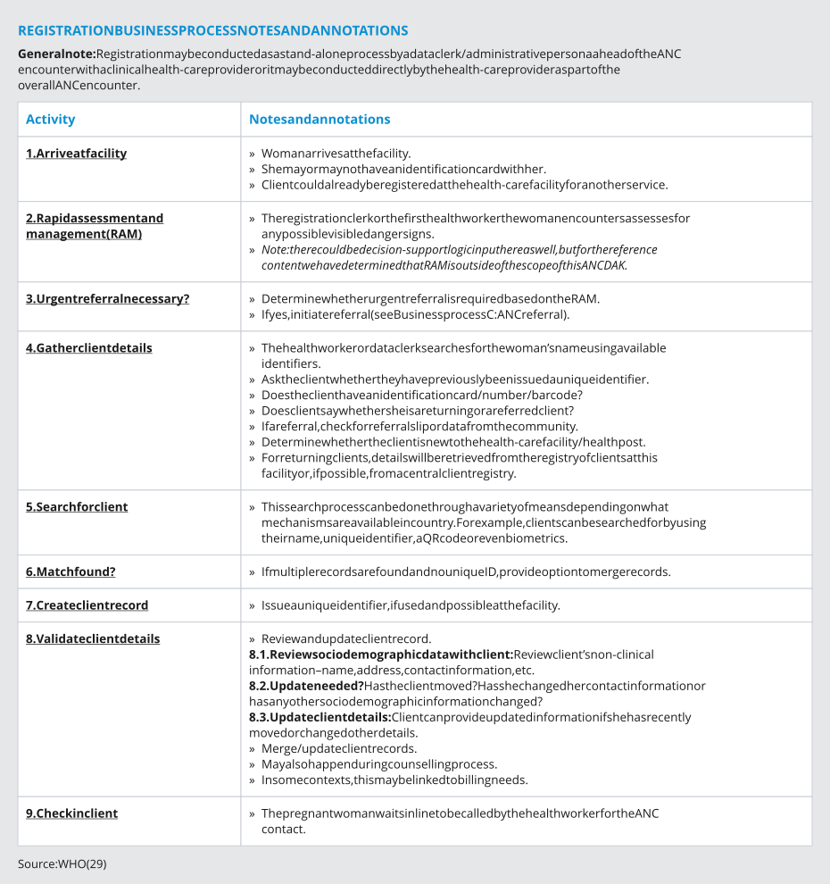
Source: WHO (29). Fig. 11 of the handbook (PDF page 38); the notes are drawn as one table rather than the printed three columns. Generated by scripts/figures/table_figure.py from the table block t-ch03-fig-11.md; the original page render is who-iris/library/9789240093362-eng/figures/vfig-p038.png.
✎ edit📣 feedback 3.3 Annotating workflows, and reference business processes (TIP).
Beyond simply labelling each activity within a workflow, it is also important to add annotations to the activities, describing, for example, a list of forms to be filled out or other nuances that it may not be possible to capture in a workflow diagram. For example, if it is known that a certain activity requires 1 hour of the health worker’s time every day, that should be recorded as an annotation. Activities that cannot be digitized should also be labelled as such. Annotations are also a useful way to take note of any national or global guidelines and recommendations that might have shaped a specific workflow.
Fig. 11 provides an example of annotations from the ANC registration workflow.
If there are any updates to the guidelines, this reference can be a useful prompt to update the next iteration of the solution. Noting any relevant guidelines could also serve as a reference for any deviations from them in the workflow and could help to highlight any roadblocks or challenges preventing health workers from adhering to guidelines.
TIP: Reference business processes and workflows
Depending on the target health area for this PCPOSS, reference business processes and workflows may already exist. WHO’s Digital adaptation kits (DAKs) provide a customizable starting point for generic business processes and associated workflows that are performed within the business processes. For example, the DAK for family planning, a part of SMART Guidelines, focuses on key business processes conducted by the nurse midwife persona within family planning counselling and service provision such as registration and counselling. For each of the business processes, data elements and decision-support needs are noted and provided (30).
✎ edit📣 feedback Figs. 10 and 11. Workflow A: ANC Registration business process and annotations (reproduces WHO ANC DAK).
Figs. 10 and 11. Workflow A: ANC Registration business process and annotations (reproduces WHO ANC DAK)
Section 3.3.2 (sec-014, PDF pages 33–34, Figs. 10 and 11) reproduces an illustrative business-process diagram (Fig. 10, Workflow A: Registration) and its companion step-by-step annotation table (Fig. 11) from the WHO Digital Adaptation Kit for Antenatal Care (ANC DAK, 2021).
- Role in this handbook (
reproduceslink, not a PHC workflow): Demonstrates how a country implementing team documents a clinical/operational workflow in BPMN with explicit swimlanes (pers:health-service-user/ Client,pers:clerk/ Clerk, andpers:health-worker/ Health worker), numbered activities, decision gateways and an accompanying annotation table (Annex 6). - Canonical upstream artefact: WHO ANC DAK (
smart.who.int/anc), Component 4 (Business processes and workflows), Workflow A (Registration).
3.4 Streamline data collection and indicator reporting
✎ edit📣 feedback 3.4 Streamline data collection and indicator reporting.
Streamlining data collection is a long and tedious task, but it is the crux of translating paper register
systems into a PCPOSS. The following are the five key steps needed to complete the streamlining.
1.
Create an inventory of paper forms.
2.
Map data elements across all forms.
3.
Compile all aggregate indicators that need to be linked
and reported.
4.
Remove duplicated, orphaned and unnecessary data.
5.
Streamline data collection and indicators into a
consolidated data dictionary.
Comprehensive paper
replacement
If there is already a clear list of the data to collect,
either from national or global guidance, or prior
implementations of health service user-level systems,
the first two steps (creating an inventory of forms and
mapping their data) can be skipped. However, these
two steps are recommended to ensure the new PCPOSS
will be able to replace the paper register system in its
entirety, leaving paper registers only as a backup option.
CHECKPOINT
WARNING
3.4.1 Create an inventory of paper forms
The implementation team should begin the data mapping
exercise by collating all the data collection instruments used
by the targeted health worker for routine service delivery and
reporting. Only those data collection instruments for which
the health worker has primary responsibility (for completing
and maintaining them) should be included. The documents
are usually, but not always, on official government or health
department letterheaded paper.
Be sure to differentiate between primary data collection forms,
consisting of individual-level data, and summary reporting
forms that represent the aggregation of individual data. Any
form to which a health worker may contribute, but does not
have responsibility for, should be collected separately as they
will used when determining which key indicators need to be
included and calculated for reporting purposes.
A spreadsheet should be created to collate all the data
collection forms, and each form should be linked to at least
one process in the workflows mapped in section 3.3. For
example, the “Health service user registration” form would be
linked to process for “Registration”. This is key to gaining an
understanding of the points in the health workers’ workflows
that can be digitized and/or automated.
To establish a finite list of data collection ledgers maintained
and contributed to by the health worker occupational group
of interest, consult the public health authority and cross-
check their list with the ledgers found at the health facility
or outreach post. Resolve any discrepancies with the public
health authority to ensure the appropriate forms, and correct
versions, are being included. When collecting the instruments
for which the health worker occupational group is primarily
responsible, save digital versions of the original forms in a
central folder.
The template provided in Annex 7 can be used to document
all the known forms and key information needed about each
form. Key information includes form IDs, titles, versions, form
types, frequency of use and ownership of the form process.
3.4.2 Map all the data elements used in
forms
Once all the relevant forms have been consolidated in an
inventory, documentation of the data elements across
those forms can begin. This data mapping activity creates a
repository of all the data elements currently being collected
– both at individual and aggregate level. This is the beginning
of the digitization process, as duplicative and ambiguous data
elements will become obvious. For the process optimization
expected of digitization, in addition to removing duplicative
data entry, ensure that every data element being collected
has a clear purpose, is understood unambiguously, and uses a
standard definition across forms and systems.
This mapping exercise will reveal which data elements can
be used to link a health service user’s health record across all
forms. On a paper form, the health worker needs to complete
these data fields multiple times, but in a digital system they
can be filled automatically with a single, “one-time” input.
Use a spreadsheet to record all the data fields. It will probably
be very large but will provide an accurate reflection of the
amount of data that the health worker currently needs
to manage. The spreadsheet will also show the level of
streamlining that could be accomplished with a digital system.
Annex 8 provides a guide with explanations for mapping
individual-level form data in a clean and organized
spreadsheet.
While noting data elements, include any data that can be used
to compile aggregate indicators. Indicators are traditionally
reported separately from health service user-level data held in
medical records, but the digitizing process enables automatic
aggregation. The happens because data points needed for
aggregate indicators can be pulled directly from health service
user data.
Copies of forms
The implementation team should archive at least one
copy of each data collection form in completed or
partially completed status through wide-angle photo
or digital scan. If possible, sample forms should be
archived to showcase any inconsistencies in data
recording methods across health worker health worker
occupational groups.
TIP
3.4.3 Compile aggregate indicators
The key reason to implement a PCPOSS is to reduce the
burden of data entry on health workers, thereby increasing
the time available to give quality care. This is the value add of
the “collect once, use for many purposes” principle. PCPOSSs
enable one-time data entry for health workers, and the data
they need to record for service delivery purposes can also be
leveraged for reporting purposes (see Fig. 4). Accountability
across all layers of the health system is increased and the
system becomes more efficient.
For example, without a digital system, health workers providing
an immunization will need to record the task using three
separate record-keeping tools, writing in:
• an immunization register book;
• a running tally book to track immunizations provided
in a single day, week and/or month for reporting
purposes; and
• the child’s immunization card.
With digitized immunization records, the health worker can
now simply record that single immunization:
• on the PCPOSS, which for reporting purposes can
also automatically tally up the total number of such
immunizations provided by this health worker over the
specified periods;
• on the child’s immunization card.
Here, three data entries have become two – and they can
become just one if the child’s immunization card is also digital,
because that too can be filled automatically by the PCPOSS.
To determine which primary data collected during health
workers’ routine encounters can be leveraged for indicator
reporting:
• determine what indicators the health workers are
required to report to their supervisors in the first place;
and
• identify which of these can be calculated using
primary data.
Annex 9 provides a guide to consolidate this list of indicators.
This exercise can be done at the same time as mapping the
data elements across the forms, as outlined in section 3.4.
The indicators should be compiled in a separate tab in the
workbook or a separate file from the one used for mapping
data elements.
Note that the list of key indicators required to be collected for
local, national and global levels should be cross-checked with
the in-country programme manager.
3.4.4 Remove duplicated, orphaned or non-
essential data elements
Once comprehensive lists of the data elements and indicators
that health workers are routinely using have been prepared,
the data elements can be streamlined by removing duplicated,
orphaned or non-essential data. Orphaned data are data that
are dependent on primary data elements that do not exist.
With the principle of data minimization, only data required
for health service delivery or accountability are considered
essential. In practical terms, review the form data mapping
guide (Annex 8) to identify the duplicated or orphaned data
elements and take appropriate steps to reconcile, remove or
resolve the missing linkages. While carrying out this exercise,
ensure that a backup original file is maintained and that a copy
with all edits provides a sufficient audit trail for collaboration
across multiple stakeholders.
Answering the questions shown in Fig. 12 in the logical order
is a good way to identify the data elements that should be
removed or reconciled (see Fig. 12).
✎ edit📣 feedback Table 12. Fig. 12 decision matrix: Keep or remove a data element
Fig. 12 Is each and every data element collected truly needed?
| Question | Explanation | Action to be taken |
|---|---|---|
| 1. Is the data element duplicated? | Duplicates could include data elements that have the same definition, but possibly with different labels. Some data elements (e.g. name, birthdate, age, unique identifier) might also be collected by multiple forms | Reconcile any duplicated data elements into a single data element, that is collected once, with one data element label. (Use the description and definition of the data elements to determine which data elements to reconcile.) |
| 2. Is the data element needed for service delivery or accountability? | Does the data element support the health worker during care provision or service delivery – is it needed for clinical decision-making, for example? Is the data element required for mandatory reporting or ensuring health worker accountability? | Consider removing any data elements not needed for service delivery or accountability, to reduce the burden of data entry placed on health workers (the more data health workers have to collect, the less time they have for health-care interactions). |
| 3. Is the data element orphaned? | Orphaned data will be difficult to use in a digital system without a clear linkage to the context in which it is collected or needed. | It is important to address orphaned data elements by linking them to their relevant primary data elements. Any not required for the purposes of service delivery or reporting will already have been removed by considering question 2. |
Is each and every data element collected truly needed? (Decision criteria for keeping or removing a data element)
✎ edit📣 feedback Figure 12. Fig. 12. Is each and every data element collected truly needed?
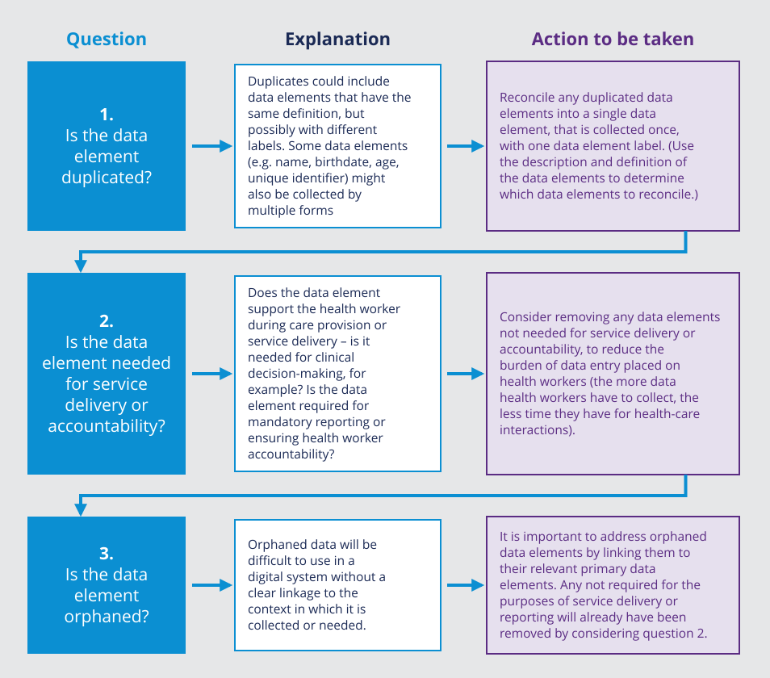
Source: WHO, Digital transformation handbook for primary health care, 2024, PDF pages 41–42. Generated by scripts/figures/fig12_data_element_needed.py from the Fig. 12 table block; the original page render is who-iris/library/9789240093362-eng/figures/vfig-p042.png.
✎ edit📣 feedback Decision table Data-element minimization decision table (section 3.4.4, Fig. 12).
Data-element minimization decision table (section 3.4.4, Fig. 12)
Formal DMN 1.5 decision table (Decision_KeepDataElement, hitPolicy="FIRST") encoding the Fig. 12 decision tree in section 3.4.4 (Determine which data elements are needed, sec-015), evaluated at gateway GW_KeepDataElement in understand-user-requirements.bpmn.
Decision structure
Written from the DMN file next to this page.
- Inputs:
duplicated(boolean): Duplicated?orphaned(boolean): Orphaned?neededForCareOrIndicator(boolean): Needed for care or for an indicator?
- Outputs:
decision("remove"|"keep"|"unknown"): Keep or removeaction: Action to be taken (Fig. 12)
- Rules: 6, hit policy
FIRST. The last rule returns"unknown"when any input has not been answered.
Data element retention (3.4.4, Fig. 12)
The first rule that matches applies.
| Rule | When | Then | |||
|---|---|---|---|---|---|
| duplicated? | orphaned? | needed for care or for an indicator? | keep or remove | action to be taken (Fig. 12) | |
| 1 | any | any | false | remove | Remove data element not needed for service delivery or indicator reporting (Fig. 12, question 2) |
| Fig. 12, Question 2: Under data minimization, only data elements required for health service delivery (clinical decision-making, care provision) or accountability (mandatory indicator reporting) are essential. Remove data elements not needed for either purpose. | |||||
| 2 | true | true | true | keep | Reconcile duplicated data elements into a single element collected once, link to primary data element, and keep (Fig. 12, questions 1 and 3) |
| Fig. 12, Questions 1 and 3: Essential data element that is both duplicated across forms/labels and orphaned from its primary data element. Reconcile duplicates into one element with one label and link to its primary data element. | |||||
| 3 | true | false | true | keep | Reconcile duplicated data elements into a single data element collected once with one label, and keep (Fig. 12, question 1) |
| Fig. 12, Question 1: Essential data element duplicated across forms or under different labels. Reconcile into a single data element collected once with one label. | |||||
| 4 | false | true | true | keep | Link orphaned data element to its relevant primary data element and keep (Fig. 12, question 3) |
| Fig. 12, Question 3: Essential data element that is orphaned (dependent on a primary data element linkage that is missing). Link it to its relevant primary data element and keep. | |||||
| 5 | false | false | true | keep | Keep data element in consolidated data dictionary (3.4.5, 3.5) |
| Fig. 12, Questions 1-3: Data element is needed for service delivery or accountability, is not duplicated, and is not orphaned. Keep in the consolidated data dictionary (3.4.5, 3.5). | |||||
| 6 | any | any | any | unknown | Answer every input question before this decision is made. |
| Unknown: at least one input has not been answered, so the source gives no outcome. Answer every input question first. (House rule: every table has an explicit unknown outcome, dth-phc#1 R3.) | |||||
3.5 Create a data dictionary
✎ edit📣 feedback 3.5 Create a data dictionary (data element definitions and terminology mapping).
The final step in streamlining data collection and indicator reporting is to create a data dictionary, which (in this context) is a repository of all the data elements essential for individual and aggregate levels, including some metadata components, that will be included in the PCPOSS. For the purposes of designing the solution and facilitating understanding across multiple stakeholders, the data dictionary will also include the data elements’ related attributes, plus a mapping to standard classifications and terminology concepts. Data dictionaries should utilize interoperability standards. Continuity of care can only be sustainably achieved through the adoption and use of standardized data models connected to health-specific, person-centred semantic classifications and terminology standards (e.g., ICD-11, SNOMED-GPS) and syntactic interoperability standards (e.g., HL7 FHIR). These standards ensure consistent and high-quality data exchange across various digital systems, regardless of the time, health topics, or different healthcare providers and facilities involved. 3.5.1 Define data elements for inclusion in data dictionary The data elements that health workers will collect, as well as the indicator elements that are calculated using these, will be given related attributes in the data dictionary that include the definition of the data element, the data type and possible data labels. For example, data elements for family planning include visit date, unique identification, address, reason for visit and medical eligibility category (30). It is important that the data dictionary is streamlined, to consolidate the data elements that will be included in the PCPOSS. As a result of the work already completed, all the data elements included in the data dictionary should now serve only the essential purposes of service delivery and accountability. In practical terms, this means work on finalizing the data dictionary can begin by using a copy of the spreadsheet from which duplicated, orphaned and non-essential data elements have been removed. Noting multiple iterations will still need to be made, this is the base for the final data dictionary. The data elements included in a finalized data dictionary can vary depending on its purpose, even though the data dictionary reflects all the essential data elements in a PCPOSS. The essential data elements that would be outlined in a data dictionary will vary based on the following types of data dictionaries:
- Data dictionary for database design: During the requirements gathering phase, the data dictionary focuses on capturing the data model that needs to be persisted and used for reporting, auditing, aggregation and information exchange. It focuses on the underlying data structure, rules and relationships necessary for implementing the system’s functional requirements. The data dictionary component of the Digital adaptation kits (DAKs) serve as a starting point for database design and provide a template for possible data elements, data types and mappings based on the health area.
- Data dictionary for user interface (UI) design: A data dictionary used for UI design reflects the content of a digitized form, focusing on the visual representation, interaction and usability aspects of the system, enabling consistency and coherence in the UI design and implementation. This type of data dictionary may be used to create the prototype and mock-up design, ultimately creating a well-defined and effective UI during the early stages of system development. However, this may result in a data dictionary that requires additional effort to map to interoperability standards (53). Choosing between the data dictionary for database design and a data dictionary for UI depends on the needs and objectives of the PCPOSS. In some cases, it may be beneficial to have both a data dictionary for database design and a data dictionary for the UI, as they serve different purposes and cater to different stakeholders. 3.5.2 Map data elements to standardized classifications and terminologies The use of standardized classifications and terminologies – such as WHO’s International Classification of Diseases, 11th Revision (ICD-11) or Regenstrief Institute’s LOINC, among other standardized concepts – is critical for enabling interoperability across systems. A standards-based approach also means continuity and facilitated knowledge transfer when implementation teams change. This would involve mapping the required data elements in the data dictionary to ICD-11 or any other WHO Family of International Classifications (WHO-FIC). This mapping exercise can either be carried out using a spreadsheet, or more efficiently by using a terminology service or metadata registry, such as Open Concept Lab. Engaging individuals with expertise in health informatics, classifications and terminologies in order to map data elements to standardized concepts is highly recommended. Note that the process of mapping to standard concepts can take significant time, effort and resources. Unlike the earlier steps to streamline data collection and indicator reporting, and to build most of the data dictionary, this step is often done by health informaticians. They are familiar with the relevant standards and have a strong understanding of the clinical information being collected. If any widely used mappings already exist, it is highly recommended to simply adopt these. Reference guidance on core data elements Depending on the health area the PCPOSS is being developed for, a reference data dictionary and mappings to standard terminologies may already exist. WHO’s Digital adaptation kits (DAKs) provide an adaptable and customizable list of data elements required throughout the different points of workflows for various health areas. For example, WHO’s DAK for HIV outlines the core data elements in a comprehensive data dictionary which details the input options, calculations, validation checks and links to standardized terminology codes (31). Adaptation of WHO’s DAKs may require translation of data labels into the local language and creation of additional data elements depending on the context. TIP
3.6 Determine decision-support logic
✎ edit📣 feedback 3.6 Determine decision-support logic.
Digital systems can go beyond simple data collection and aggregation by introducing additional layers of sophistication that are generally unavailable on paper. This includes the opportunity to enhance care provision with built-in decision-support logic. In PCPOSSs, embedded decision-support logic can help health workers follow appropriate clinical care pathways set out by WHO and national public health authorities’ guidelines and recommendations. The decision-support logic that can be integrated includes: • scheduling • asking • risk assessment for triage and/or referrals • medical eligibility. These decision support mechanisms should be directed by clinical and evidence-based protocols that have been outlined by WHO or the national governing agency (e.g. the public health authority). This section describes the methods for documenting scheduling logic and other decision-support logic, which will be used to inform the back-end formulas in the PCPOSS. There are many ways to document and design decision-support logic. Decision-support logic in care pathways can be represented in many ways, including decision trees and/or decision-support tables. The methods outlined here are designed to be as simple as possible to use while still ensuring comprehensiveness. 3.6.1 Document clinical care pathway decision-support logic The health worker occupational group relevant to the target end-users dictates the clinical protocol to be embedded in a PCPOSS. For example, a risk-profiling decision-support logic can be used for the identification and prioritization of health service users who are at greater risk of adverse health outcomes. The identification of a high-risk pregnancy, for example, could provide risk-profiling decision support for a nurse/midwife doing triage, but could also give risk-profiling decision support to a community health worker for the purposes of referral. The clinical protocols used in the PCPOSS should follow WHO and/or national public health authority recommendations. Reference decision support logic Depending on the health area targeted, there may already be decision-support logics and algorithms documented, in accordance with WHO guidelines. WHO’s Digital adaptation kits (DAKs) provide a starting point for decision support logic and algorithms to support guidelines-based service delivery. For example, WHO’s DAK for family planning outlines the decision support tables for family planning counselling and medical eligibility (30). Adaptation of WHO’s DAKs may require changes in thresholds or triggers in a logic statement and additional decision support logic formulas depending on national policies and context. Safe decision support systems If there is no clinical care pathway decision-support logic that is in line with evidence-based global or national normative guidelines, reconsider the inclusion of this decision-support logic in the system. Changes to the decision-support logic should be considered carefully and any new additions should be agreed upon by clinical experts. Inappropriate or inaccurate decision logic can put health service user’s safety and wellbeing at risk. TIP WARNING Decision-support logic matrix A matrix of “decision-support logic” provides an inventory (i.e. listing) of all the decision-support logics made in clinical care pathways. Fig. 13 offers an example from the DAK for HIV, and Annex 10 offers a guide for the decision-support logic matrix, with brief explanations of the components needed to complete it. Note that the decision-support logics identified in the matrix are only intended to provide an overview of what is detailed further as decision trees and/or decision-support tables. Decision trees A decision tree is a visual representation of the logic in the PCPOSS that directs the series of decisions applied in care pathways. Visualizing the relationships, linkages and dependencies between each decision helps to determine what the health worker needs to do next, or which screen needs to be displayed on the PCPOSS after a given set of inputs. Decision trees may be particularly useful for decision points that consist of multiple inputs and outputs. Clinical protocols and algorithms depicted with decision trees can be based on a selected health worker occupational group, but note that in some settings, and depending on task-shifting policies, one decision logic could involve more than one health worker occupational group. WHO’s DAK for ANC provides examples of decision trees to supplement the use of decision-support tables (29). For example, Fig. 14 depicts a decision tree for antenatal registration for HIV testing and counselling. Each box represents one decision, which is represented by an algorithm or a series of algorithms. If that decision’s output(s) become another decision’s input(s), these two decisions are linked. The arrows show the sequence of decisions in a care pathway. Decision trees are different from workflow diagrams. In the workflows mapped in section 3.3, activities would indicate whether a decision needs to be made. The proceeding tasks or activity following the outcomes of decisions might be the same, but the content associated with the tasks or activity might differ. Decision trees fill this gap. Each box in a decision tree will need to be further detailed so that engineers can programme the decision-support logic into software.
✎ edit📣 feedback Table 13. Fig. 13 as a table: Example decision-support logic matrix from DAK for HIV
Fig. 13 Example decision-support logic matrix from DAK for HIV
| Activity ID & activity name | Decision table ID | Decision table description | Reference/source |
|---|---|---|---|
| HIV.B2. Check for signs of serious illness OR HIV.D3. Check for signs of serious illness | HIV.DT.01 | Check for serious illness | Consolidated guidelines on HIV prevention, testing, treatment, service delivery and monitoring: recommendations for a public health approach (2021) (27) Table 5.1. Components of the package of care for people with advanced HIV disease. |
| HIV.B7. Test for HIV using testing algorithm, HIV.C4. PrEP visit, HIV.D.11. Retest using HIV strategy, HIV.E4. Test [mother] for HIV using HIV testing algorithm, HIV.E12. Test [infant] for HIV using testing algorithm, HIV.F8. Test [infant] for HIV using HIV testing algorithm | HIV.DT.02 | Test for HIV using testing algorithm | Consolidated guidelines on HIV testing services (2019) (22). Fig. 2. WHO universal HIV testing strategy. 8.4.2 Multiplex testing for HIV-1 and other infections Figure 8.6. WHO recommended testing strategy for dual detection of HIV and syphilis in ANC settings. Fig. 8.4. WHO HIV testing strategy for early infant diagnosis. Consolidated guidelines on HIV prevention, testing, treatment, service delivery and monitoring: recommendations for a public health approach (2021) (27). Fig. 2.7 Simplified infant diagnosis algorithm; Fig. 2.8 Managing indeterminate test results: standard operating procedure. |
| HIV.B9. Determine recommended services | HIV.DT.03 | Determine retest recommendation | Consolidated guidelines on HIV testing services (2019) (22). 7.2.4 Retesting – when and who? 7.2.5 Testing pregnant and breastfeeding women. |
| HIV.C8. Check eligibility for PrEP | HIV.DT.04 | PrEP eligibility check | Implementation tool for pre-exposure prophylaxis of HIV infection (2017) (35). Module 1: Clinical. Use criteria in pocket card, p. 4, Indications for PrEP (by history over the past 6 months) and Contraindications (with provider discretion). See also Implementation tool for pre-exposure prophylaxis of HIV infection (2017) (35). Module 10. Testing providers. Table 1. Summary tool for starting or monitoring PrEP and Preventing HIV during pregnancy and breastfeeding in the context of PrEP. Technical brief (2017) (29). |
| HIV.C.24 Prescribe | HIV.DT.05 | Determine PEP or PrEP regimen | Consolidated guidelines on HIV prevention, testing, treatment, service delivery and monitoring: recommendations for a public health approach (2021) (27) Chapter 3: HIV prevention. |
| HIV.D4. Screen for TB | HIV.DT.06 | Screen for TB | WHO consolidated guidelines on tuberculosis: tuberculosis preventive treatment. (2020) (36). Supplementary table. WHO consolidated guidelines on tuberculosis Module 2: Screening – Systematic screening for tuberculosis disease (47). |
Source: WHO (31)
Example decision-support logic matrix from DAK for HIV
✎ edit📣 feedback Figure 13. Fig. 13. Example decision-support logic matrix from DAK for HIV
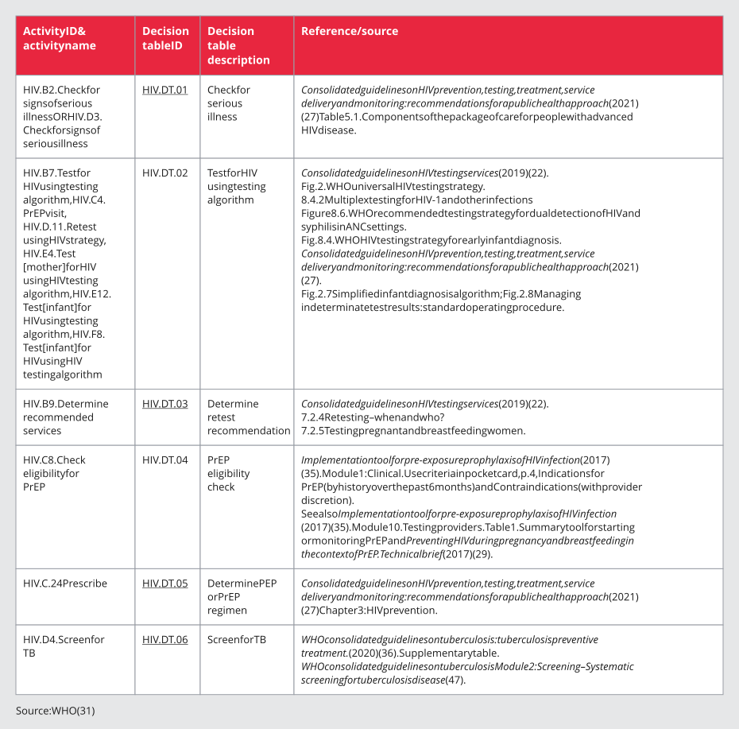
Source: WHO (31). Fig. 13 of the handbook (PDF page 45). Generated by scripts/figures/table_figure.py from the table block t-ch03-fig-13.md; the original page render is who-iris/library/9789240093362-eng/figures/vfig-p045.png.
✎ edit📣 feedback Fig. 13. Illustrative HIV decision-support logic matrix (reproduces WHO HIV DAK).
Fig. 13. Illustrative HIV decision-support logic matrix (reproduces WHO HIV DAK)
Section 3.6.1 (sec-017, PDF pages 43–44, Fig. 13) reproduces an illustrative decision-support table from the WHO Digital Adaptation Kit for HIV (HIV DAK) to show how clinical guideline recommendations are formatted as a DMN-shaped decision table using the Annex 11 template (dt:annex-11-decision-support-table-template).
- Boundary rule (
reproduceslink, not re-extracted as PHC clinical logic): The clinical rules in Fig. 13 belong to the WHO HIV DAK (HIV.DT.*), whereas the decision-table structure and hit-policy conventions belong todth-phc(sec-017and Annex 11sec-043).
✎ edit📣 feedback Figure 14. Fig. 14. Decision-support logic for a clinical care pathway in the form of a decision tree
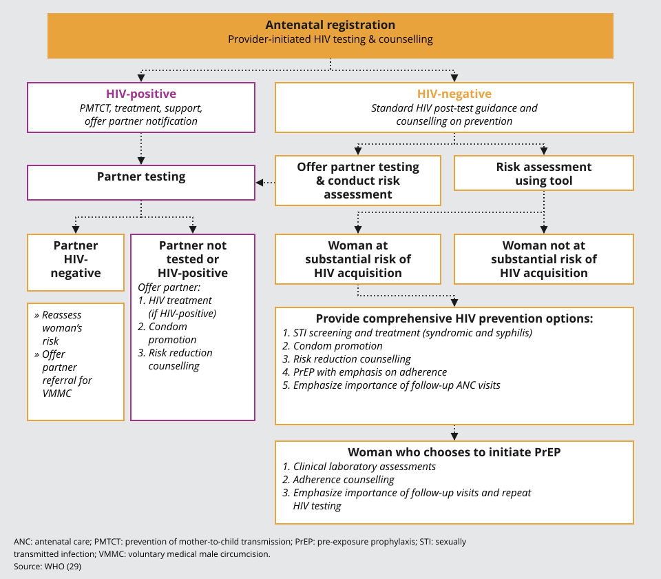
Fig. 14 Decision-support logic for a clinical care pathway in the form of a decision tree
ANC: antenatal care; PMTCT: prevention of mother-to-child transmission; PrEP: pre-exposure prophylaxis; STI: sexually transmitted infection; VMMC: voluntary medical male circumcision.
Source: WHO (29)
✎ edit📣 feedback Fig. 14. Illustrative ANC HIV-testing decision tree (reproduces WHO ANC DAK).
Fig. 14. Illustrative ANC HIV-testing decision tree (reproduces WHO ANC DAK)
Section 3.6.1 (sec-017, PDF page 45, Fig. 14) reproduces an illustrative clinical decision tree for antenatal HIV testing from the WHO Digital Adaptation Kit for Antenatal Care (ANC DAK, 2021), demonstrating how a visual branching decision tree is translated into the rows and input/output columns of an Annex 11 decision-support table (dt:annex-11-decision-support-table-template).
- Boundary rule (
reproduceslink, not re-extracted as PHC clinical logic): The antenatal HIV testing algorithm belongs to the WHO ANC DAK (ANC.DT.08);dth-phccites it solely as a worked example of tree-to-table translation in Step 3.6.
✎ edit📣 feedback 3.6 Decision-support tables.
Decision-support tables
Within each of the boxes depicted in the decision tree, more detailed decisions can be depicted in decision-support tables. Decision-support tables include a decision ID, business rule, trigger, inputs, output, action and annotations. There are many methods available to document such decision-support logic, such as Microsoft Excel or Camunda, while adhering to the Decision Model and Notation (DMN) standard. Regardless of the method or tooling used, the engineers involved in building the PCPOSS will need to translate this decision-support logic into code and a rules engine, which will then run the decision-support logic in the back end of the PCPOSS. To facilitate this process, this handbook offers a template for decision-support tables in Annex 11, including an example.
3.7 Map health service schedules
✎ edit📣 feedback 3.7 Map health service schedules.
Service schedules give health workers an overview of upcoming, due or overdue services, and aim to ensure timeliness of service delivery and continuity of care. Service schedules can also be a basis for reminders that are sent from the PCPOSS to health service users about upcoming services, if targeted health service user communication is an intervention included in the PCPOSS. Workflow mapping already completed by following section 3.3 is a good starting point for understanding if any health services are recurring (e.g. TB treatment) or need to be provided on a prescribed schedule (e.g. vaccinations, ANC). DAKs provide different schedule logic tables along with references to recommendations. For example, the ANC Digital adaptation kit Web Annex B maps out the schedules for upcoming ANC contacts, immunizations and lab tests based on WHO recommendations (29). These service schedules should be documented according to clinical protocols approved by the local public health authority. For each health service, a service schedule spreadsheet should be created to map the key events and dates. If service schedules vary by health worker occupational group, a separate spreadsheet should be created for each health worker occupational group to ensure that all the differentiating schedules are incorporated into the PCPOSS. The information to be recorded includes: • trigger events • time between events • follow-up actions • if and when a service should no longer be given • changes when there is deviation from the pre-set schedule. The spreadsheet should include all the details explained in the guide provided in Annex 12.
Before moving on to gather and prioritize the requirements for the PCPOSS, it is important to take note of the various needs assessments conducted. By this point, there needs to be a clear understanding of:
❑ who the end-users are
❑ what the end-users would want the PCPOSS to do
❑ how the PCPOSS will fit into existing workflows and improve their efficiency
❑ which global and/or national guidelines the solution will need to follow
❑ what amount of data the solution will need to be able to manage
❑ what kind of logic will need to be embedded into it. An understanding of all these components will now facilitate outlining and prioritization of the PCPOSS requirements. CHECKPOINT
3.8 Gather and prioritize requirements
✎ edit📣 feedback 3.8 Gather and prioritize functional and non-functional requirements.
The requirements for a PCPOSS are the functional and non-functional criteria that it must meet to ensure end-users are satisfied and the system performs as intended. The following two types of requirements need to be gathered and prioritized. • Functional requirements describe what the system must be able to do (“the water bottle shall be able to store liquid without leaking” would be an everyday example). • Non-functional requirements describe how the system will work (“the water bottle must not weigh more than 0.5 kg and must be blue in colour”, to continue the simple example). The use cases and user stories generated by following section 3.2 are a key resource for ensuring that functional and non- functional requirements adhere to human-centred design principles. One way to translate user stories into functional and non-functional requirements is to look at the “I want to…” part of the “as a [health worker], I want to…” user story statements. For the user story, “As a nurse/midwife, I want to know which health service users I need to follow up with today, so that I may plan my workday,” the functional requirements that would support health service user follow-up and workday planning could be that the system shall: • collect a list or register of the health worker’s health service users; • have a list of health service users that is filterable by risk stratification and overdue services; • automatically schedule (daily) health service users based on the health worker’s availability and the service(s) needed. The functional requirements for, “As a nurse/midwife, I want to know what to do in situations when I cannot ask my supervisor, so that I can still provide quality care,” could be that the system shall: • automatically calculate the total number of services provided daily, weekly, monthly and annually; • generate and push reports to a national monitoring and evaluation system. Finally, for, “As a nurse/midwife, community health worker or health facility manager, I want to be able to access health service user health records when the electricity goes out, so that I can continue my work regardless,” the non-functional requirement is: • to be able to work offline. The workflow mapping process (section 3.3) and data dictionary creation process (sections 3.4 and 3.5) will likely generate a rich and long list of functional and non-functional requirements. For example, if there is a point in a workflow where health service users must be triaged, there can be risk-stratification functionality built into the system to support decision-making by the health worker. The functional requirements for this could be that the system shall: • flag health service users as high-risk in accordance with WHO care guidelines • provide a suggested plan of action (including referrals). Other examples of functional requirements (which may be context dependent) include that the system shall: • adhere to Health Level Seven (HL7) Fast Healthcare Interoperability Resources (FHIR) standards (54) • use a shared concept dictionary (e.g. ICD-11) (55). Key non-functional requirements will be gathered by getting to know the users (section 3.2) and establishing a greater understanding of the technical, environmental, infrastructural and political constraints. Non-functional requirements are context dependent and some examples include that the system shall: • allow access (i.e. user permissions) based on the type of user (e.g. nurse-midwife versus community health worker); • have encrypted data exchange across systems; • have an easy-to-understand and intuitive UI, with colour coding and minimal text; • enhance the rights and privileges of the user (e.g. ensuring health worker control over digital requests and notifications outside of work hours or during rest or vacation periods); • use the local language; and • work on a tablet and mobile phone. Once a long list of requirements has been gathered, they can be put into groups of high, medium and low priority. The criteria for prioritization may be based on requirements for the programme, level of effort, resources needed, and availability of those resources. Time and/or budgets will always be a constraint, so this step of prioritizing the various functions and features is an important task that allows the development timelines to be determined. A set of priorities will also guide engineers in where to focus efforts in the case of technical challenges. Prioritizing requirements will be an iterative process, but it is nonetheless worthwhile building a long list of all the possible requirements at the outset to ensure minimal future reworking of the PCPOSS. The initial prioritization process can be done through systematic voting by end-users and other key stakeholders, for example. However, even after robust user testing there will be changes to the requirements and, possibly, additional requirements or less features. Creating a prioritized list that is as comprehensive as possible – even one that includes many low-priority requirements – is beneficial to understanding what is within the realms of possibility for building the PCPOSS. After finishing the processes outlined in previous sections, there should be answers to all of the following questions. These answers will enable resource mobilization for the next phase of digitizing primary health care as guided in the next section. 1. Who are the end-users of this system? What are their needs given the context they are working in? (section 3.2)
❑ User personas created.
❑ Use cases gathered. 2. Which workflows will the PCPOSS help to automate? What part of an end-user’s day is the system intended to facilitate? (section 3.3)
❑ Workflows documented with annotations. 3. What are the key data elements are to be collected by the PCPOSS (and when)? Which aggregate indicators need to be calculated?
❑ Indicators required for reporting identified (section 3.4).
❑ Clean data dictionary, with duplicate data elements removed and data elements linked to the specific activities in the workflow (section 3.5). 4. What key functionalities will the system need to have? What are the key features and functionalities that will allow it to work within a set of context constraints?
❑ Care pathways and clinical decision logic documented (section 3.6).
❑ Health service schedules documented (section 3.7).
❑ Functional and non-functional requirements prioritized (section 3.8). The Institute of Electrical and Electronics Engineers has outlined eight characteristics of good software requirements specifications (56): • correct: accurately reflects actual needs; • unambiguous: precise with only one interpretation; • complete: contains all significant requirements that must be met by the PCPOSS; • consistent: internal consistency without conflicting requirements; • ranked for importance and/or stability: prioritized based on the importance of the requirement to the uptake of the system and/or the functioning of the system; • verifiable: has a definitive way to determine if that requirement is met; • modifiable: the list of requirements should be “living” and allow for modifications; and • traceable: references the origin or source of the requirement. A template and notes for prioritizing functional requirements can be found in Annex 13. CHECKPOINT Reference guidance on requirements Depending on the health area this PCPOSS is being developed for, there might already exist target product profiles that can help guide, if not dictate, the minimum standards required for the system. For example, WHO’s Digital adaptation kit for antenatal care outlines the functional and non-functional requirements for a PCPOSS for ANC (29), and the Digital Documentation of COVID-19 Certificates: Technical specifications and implementation requirements outlines requirements for a digitally verifiable COVID-19 certificate (57). TIP
✎ edit📣 feedback Decision table Requirement prioritization decision table (section 3.8 and Annex 13).
Requirement prioritization decision table (section 3.8 and Annex 13)
Formal DMN 1.5 decision table (Decision_RequirementPriority, hitPolicy="FIRST") encoding the three-tier requirement prioritization criteria in section 3.8 (sec-019) and Annex 13 (Requirements prioritization worksheet, sec-045), evaluated at gateway GW_RequirementPriority in understand-user-requirements.bpmn.
Alignment with RFC 2119 / RFC 8174 and CRDM
As established in litlfred/dth-phc#1 §3f:
"High"(MVP,SHALL): Essential for core clinical safety, regulatory compliance or MVP operation; without it the PCPOSS cannot be safely deployed (Must have)."Medium"(Version 1,SHOULD): Important for workflow efficiency, reporting completeness or user experience, but has a viable temporary workaround for MVP (Should have)."Low"(Version 2,MAY): Desirable enhancement (Nice to have) scheduled for future iterations once MVP and Version 1 are stable.
Decision structure
Written from the DMN file next to this page.
- Inputs:
neededForCompleteSystem(boolean): Needed for a complete system?stronglyAdvisedForUptakeAndUsability(boolean): Strongly advised for uptake and usability?
- Outputs:
priority("High"|"Medium"|"Low"|"unknown"): Prioritycategory: Requirement category (Annex 13)
- Rules: 4, hit policy
FIRST. The last rule returns"unknown"when any input has not been answered.
Requirement priority (3.8, Annex 13)
The first rule that matches applies.
| Rule | When | Then | ||
|---|---|---|---|---|
| needed for a complete system? | strongly advised for uptake and usability? | priority | requirement category (Annex 13) | |
| 1 | true | any | High | Need-to-have: required for a complete PCPOSS (MVP scope) |
| Annex 13 (High priority / need-to-have): If the PCPOSS does not have this function or feature, the system is considered incomplete. | ||||
| 2 | false | true | Medium | Should-have: strongly advised to improve uptake, usability and overall performance |
| Annex 13 (Medium priority / should-have): Not necessary to have a complete and functioning PCPOSS, but strongly advised to improve uptake, usability and overall performance of the system. | ||||
| 3 | false | false | Low | Nice-to-have: value-adding feature for future roadmap releases |
| Annex 13 (Low priority / nice-to-have): Not necessary given time and budget constraints, but value-adding for future releases and updates on the roadmap. Inputs are explicit so that a missing answer falls to Rule_Unknown. | ||||
| 4 | any | any | unknown | Answer every input question before this decision is made. |
| Unknown: at least one input has not been answered, so the source gives no outcome. Answer every input question first. (House rule: every table has an explicit unknown outcome, dth-phc#1 R3.) | ||||
Chapter 4. Undertake design and adaptation
✎ edit📣 feedback Chapter 4 overview: Undertake design and adaptation.
CHAPTER 4 Undertake design and adaptation
The steps of undertaking detailed design and adaptation should be led primarily by a technology partner. This section summarizes the standards, concept and activities a technology partner is expected, at a minimum, to undertake.
Implementation teams commissioning the design and adaptation are not expected to know how to programme software themselves but understanding the processes that technology partners go through to build a system is important. The effort needed is otherwise often significantly underestimated, leading to mismatched expectations by both parties. Active, successful collaboration between implementers and technology partners helps to ensure that the solution being built or adapted matches the needs of end-users.
✎ edit📣 feedback Table. Chapter 4 phase panel (Who should be involved / Inputs / Tools / Outputs)
| Component | Details |
|---|---|
| Who should be involved? | • Software engineers and solutions architects should lead this work. • Business analysts and designers should provide meaningful and constant feedback to the engineering team to ensure proper translation of the system requirements into implementation. • Health informaticians should be involved to provide expert guidance as needed to ensure the system is able to operate using standards such as Fast Healthcare Interoperability Resources (FHIR). • The targeted health worker occupational groups and end-users should provide feedback as different versions of the person-centred point of service system (PCPOSS) are created. |
| Inputs | • Scope for PCPOSSᵃ • Project team governance structureᵃ • Budget, timeline, and risk and mitigations planᵃ • Digital adaptation kitsᵇ Requirements documentation that includes: • User personasᶜ • Use casesᶜ • User storiesᶜ • As-is and to-be business processesᶜ • Data dictionaryᶜ • Data model inclusive of semantic classifications and terminology standards and syntactic interoperability standards • Documented decision logic algorithmsᶜ • Documented health service scheduleᶜ • Prioritized functional and non-functional requirementsᶜ |
| Tools | • Design software tools for prototype creation • Design tools for depicting system architecture • Concept dictionary or terminology service • Coding environment (depending on software) As these tools will vary greatly from solution to solution, it will be up to the technology partner to determine which tools work best for them. It will also be critical for the wider team to determine the best tools for collaboration. |
| Outputs | • Selected software and software vendor • System architecture • User interface design • Product documentation • Beta version of the PCPOSS |
ᵃ Guidance on generating these inputs can be found in the Digital implementation investment guide (DIIG): integrating digital interventions into health programmes (22) ᵇ If available for the scoped health domain ᶜ Chapter 1
Chapter 4 phase panel: Who should be involved, Inputs, Tools and Outputs for design and adaptation
✎ edit📣 feedback Business process Phase 2: Design and adaptation (Chapter 4).
Phase 2: Design and adaptation (Chapter 4)
Formal BPMN 2.0 model of Chapter 4 (sections 4.1 to 4.5, sec-020–sec-024), covering software and vendor selection, functional requirement validation, the three-stage human-centred prototyping loop, enterprise architecture and interoperability standards, and software build with the 7-part QA test suite.
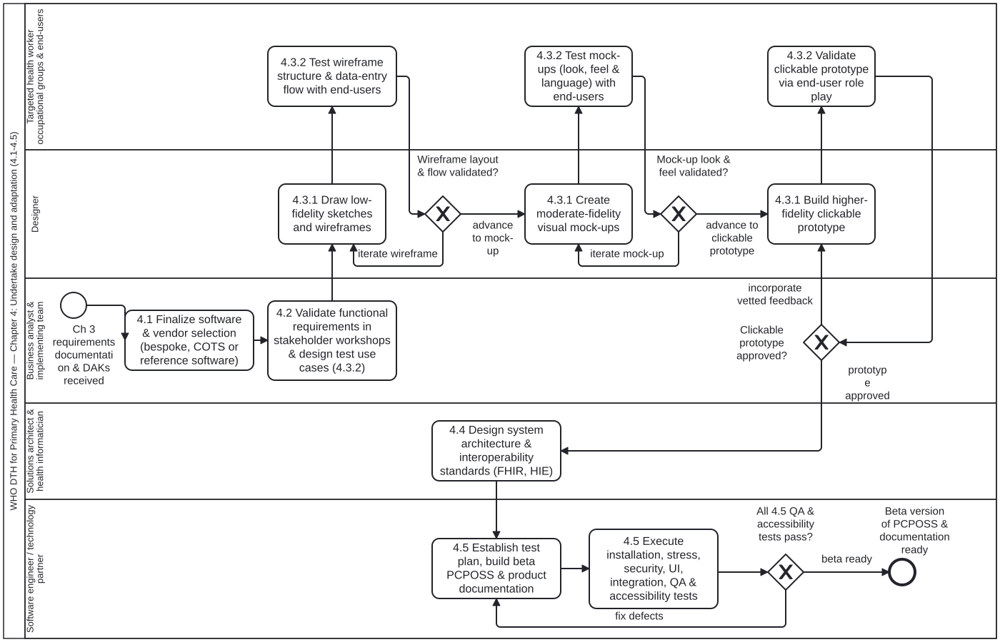
Structure of the model (Process_DesignAndAdaptation)
- Software and vendor selection (4.1,
sec-020, Annex 1):Task_4_1_SelectSoftwareAndVendorevaluates candidate platforms (adapting an existing global good / commercial platform vs building from scratch) against prioritized requirements and total cost of ownership. - Validating functional requirements (4.2,
sec-021):Task_4_2_ValidateFunctionalRequirementsreviews requirement specifications with clinical and technical stakeholders before design begins. - Three-stage iterative prototyping loop with end-users (4.3,
sec-022):- Stage 1:
Task_4_3a_Wireframes(Build low-fidelity wireframes) →Task_4_3a_TestWireframes(Test wireframes with end-users) →GW_WireframesApproved. - Stage 2:
Task_4_3b_Mockups(Develop visual mock-ups) →Task_4_3b_TestMockups(Test mock-ups with end-users) →GW_MockupsApproved. - Stage 3:
Task_4_3c_ClickablePrototype(Build interactive clickable prototype) →Task_4_3c_TestPrototype(Test clickable prototype with end-users) →GW_PrototypeApproved.
- Stage 1:
- System architecture and interoperability standards (4.4,
sec-023):Task_4_4_ArchitectureAndStandardsdefines the target enterprise architecture, offline/online synchronisation, security/privacy controls, and HL7 FHIR / IHE / ICD-11 / LOINC / SNOMED-GPS interoperability standards. - Software build and 7-part QA test suite (4.5,
sec-024):Task_4_5a_BuildAndConfigurebuilds the increment andTask_4_5b_Run7QATestsruns unit, integration, functional, performance, security, usability and compatibility tests, looping viaGW_QAPasseduntil all 7 test categories pass (aligned withcat-harnesscrdm-deliver.bpmn).
4.1 Finalize software and vendor selection
✎ edit📣 feedback 4.1 Finalize software and vendor selection.
After the requirements are defined and prioritized, the implementation team must first select and finalize a software and software vendor that can successfully achieve all necessary business requirements. The implementation team must conduct an objective software selection process comprising a landscape analysis to review tools that are already available in the market. A scorecard can be developed to compare competing software options and vendors. It is critical that all research, analysis, final decisions and corresponding rationale are properly documented at this stage. Depending on the health area the PCPOSS is being built for, reference software or reference applications that can be leveraged as a foundation for the solution might already exist. Reference software is usually made by vendors who produce platforms or software components and is used to provide executable examples of leading practices (58). In order to avoid designing and building a completely new architecture or application, reference software serves as a starting point containing the software, its documentation, operating manuals, source code, and platform and architecture specifications. The fourth knowledge layer of SMART Guidelines, L4 Executable guidelines, comprises reference software that can execute static algorithms and interoperable digital components. WHO’s Digital ANC module is an example of a fully functional application that is an executable reference software, which incorporates decision support and person-centred tracking based on WHO ANC recommendations, addresses the needs of the users and health systems, and has been tested in multiple countries (59). Such an application is customizable and serves as a generic starting point, ready to be localized to the specific operational context of the population and health system within which it is deployed (60). The following checklist outlines considerations to review while selecting a software and its vendor. 1. Pre-evaluation
❑ Clearly prioritize business requirements and a well-defined scope.
❑ Define budget and time constraints.
❑ Identify key decision-makers. 2. Software features and functionality
❑ Verify that the software’s features align with requirements outlined in Chapter 1.
❑ Ensure software is easy to use and user friendly.
❑ Ensure that the software is flexible and can be adapted to custom requirements.
❑ Validate the adherence of software to national privacy, security and data protection policies.
❑ Obtain evidence of successful implementation at scale.
❑ Obtain evidence of compatibility and interoperability of the system with existing systems.
❑ Confirm that the technology behind the solution is not outdated and is still being supported. 3. Software ownership & costs
❑ If the software is proprietary, ensure that the source code can be held in escrow.
❑ If open source, understand licensing implications.
❑ Evaluate the software’s total cost of ownership, including setup costs, licence costs (if applicable) and maintenance costs.
❑ Ensure additional costs such as retiring old systems, data migration, deployment, change management and training have been considered. 4. Vendor evaluation
❑ Verify that the vendor has a credible reputation in the sector and is recognized for their industry expertise.
❑ Ensure that the vendor offers post- implementation support and training. TIP
4.2 Validate functional requirements
✎ edit📣 feedback 4.2 Validate functional requirements.
As the steps outlined in Chapter 1 to understand users and the needs for a system to digitize primary health care have shown, creating a PCPOSS is a highly iterative process. Once a team, including technology partners, is in place and an initial set of requirements has been identified, these requirements should be validated with all the key stakeholders. Additional workshops with key stakeholders are necessary to validate and confirm requirements before the technology partner can start the build. This can be done in an agile, incremental way that breaks down the build of the solution into separate components, thereby only requiring validation of a part of the requirements, before building that part of the solution. This crucial step will help to ensure that the core functions and capabilities of the PCPOSS meet the end-users’ needs and achieve the tasks outlined in the business process. Furthermore, this step helps prevent significant rework. An additional step to validate the prototype with end-users will be carried out during the testing phase set out in Chapter 3.
4.3 Develop and test prototype design
✎ edit📣 feedback 4.3 Develop and test prototype design (wireframes, mock-ups, prototypes and user testing).
Creating mock-ups of a user interface (UI) and prototyping of the product helps to evaluate the
layout, flow and usability of the intended digital application prior to coding and development. These
design mock-ups and prototypes will prove useful when the engineers start to build the system, as
they will help the engineers to visualize how the functional requirements being built into the system
will be used.
There are various types of prototypes and mock-up UIs, as
well as multiple methods to create them, but all are intended
to elicit more detailed feedback from end-users. Some
applications might have a pre-set UI design that simply
needs to be customized to a particular context. Regardless,
all designs should be tested with end-users prior to the
actual development or adaptation of the system. Examples of
prototyping methods are further detailed below, and Fig. 15
depicts the relationship between the level of prototype fidelity
and the time required to develop those artefacts. The goal is
to start with low-fidelity artefacts that can elicit user feedback
quickly and then slowly move on to higher fidelity prototypes
that can help to refine the solution.
Any software, applications or tools mentioned in this document
are only exemplary and are in no way an endorsement by WHO.
4.3.1 Developing the design
Sketches
On paper, sketch a mock-up of the use case and the
functionality to be tested. This should be done early in
the process to gather initial feedback on how to organize
the layout of information, on whether the data entry flow
makes sense, and on the information that users will need in
different scenarios. Depending on the capacity available in the
implementation team, the designer could skip sketches and go
straight to wireframes and mock-ups.
Wireframes
Generate outlines, blueprints or wireframes of the PCPOSS
using software such as Balsamiq Mockups, Figma, MockFlow
or Jusinmind. Outlines depict the overall design ideas and
intended flow of the final product. Invite users to run through
the different scenarios using web pages or a PDF on the
computer or tablet. Wireframes have low fidelity and are not
clickable (i.e. they do not have interactive features). Their
purpose is to test the overall structure of the final product
with users.
Mock-ups
Create screens with app-design software such as InVision or
Flinto, or even with print and web design software such as
Adobe Photoshop or Adobe Illustrator. Mock-ups allow testing
of the look and feel of the whole application (including the
colour scheme and design themes). Mock-ups are generally
much closer to the finished product than wireframes or
sketches. Mock-ups have high fidelity but are not clickable.
Higher-fidelity prototypes
Higher-fidelity prototypes are clickable in that the buttons
on each page will lead to other pages. Prototypes can include
more options and functionalities than the final product to test
all the possible functionalities at once. Prototypes allow testing
of the interaction between the end-user and the final product.
Software such as Balsamiq Mockups or InVision can be used.
4.3.2 Testing the design
Each implementation of a PCPOSS will have a different
context, due to different health system requirements, varying
responsibilities for health worker occupational groups, and
a range of technological literacy. The PCPOSS needs to be
designed specifically for the setting in which it will be used,
to ensure that it serves as a helpful tool and not an additional
burden. The goal of testing mock-ups or prototypes is to turn
ideas into tangible products. This design validation process
will be iterative.
User-centred design principles
Show, don’t tell
To truly understand how a user will interact with the system,
allow them to experiment with the prototype. Do not tell them
how to use it unless they ask. This will help to truly understand
how users will interact with the system and ensure that the
resulting PCPOSS is intuitive to use.
Focus on empathy
Ensure that you are consistently cognizant of who you are
designing for, and serious about how to incorporate feedback
into the design.
Explore multiple options
Test a number of mock-ups with end-users to really
understand which designs they prefer.
Iterate
It is unlikely that the first or even the second design will really
work for the end-users. These designs should be iterated upon.
Steps to testing a design
-
Design testing use cases Use cases for testing are based on the use cases and user stories created by following section 3.2. The designed use cases for testing will be tested by end-users to validate the functional requirements. This will ensure that the functionality that has been built supports the health worker in, for example, the registration or referral process.
-
Create multiple mock-ups or prototypes Based on the use cases for testing, create mock-ups and prototypes by applying user-centred design, which will be an iterative process. The user personas already created through observations and interviews with the end-users (Chapter 1) will be helpful in keeping their perspectives in mind when designing mock-ups.
-
Validate mock-ups or prototypes Validation by the targeted end-users can be achieved through role play, for example, during which they can talk through their thoughts on each of the designs. These insights can be gained through one-to-one interviews or small focus groups. Ask questions such as: • Was the system easy to use? • What features and functions did they like? • Which features and functions did they not like? • How would they improve them? • Is there anything missing? Some design components to test include: • ease of adoption and ease of use • organization of information and forms • the kind of flags or notifications used • completeness of functions or potentially confusing features in the UI • tone and usability of the language • colours and timeframes used in scheduling.
-
Document feedback Create a plan of action to systematically address and document feedback (see Tip Box).
-
Incorporate feedback Make updates to the mock-up or prototype and test the iterated design. Feedback should be discussed and vetted by key stakeholders before it is incorporated. Not all feedback should be incorporated, to reduce the risk of, for example, scope creep – but the decision on whether to include feedback should be noted for facilitated stakeholder management. Structured feedback The higher the fidelity of the prototype, the richer the feedback will be. Structure the feedback in a way that facilitates the process of reporting back to the technical team and/or designer. The following is an example template for this structure: Feedback for:
<ENTER PROTOTYPE NAME> <ENTER VERSION NUMBER>
| Things users like the most | Things that can be improved | Key lessons from feedback |
|---|---|---|
| Things users found confusing | New ideas to consider | Next steps (based on feedback) |
| Source: adapted from Tran, 2018 (35) | ||
| TIP |
✎ edit📣 feedback Figure 15. Fig. 15. Levels of insight gained from different prototypes
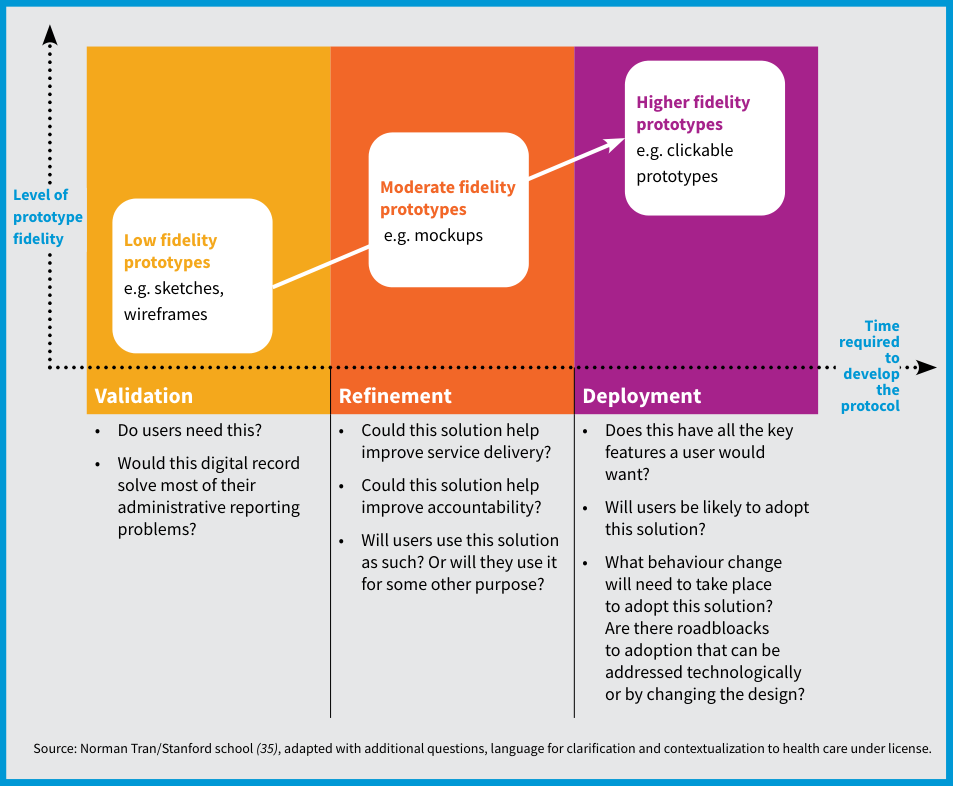
Fig. 15 Levels of insight gained from different prototypes Validation Refinement Deployment • Do users need this? • Would this digital record solve most of their administrative reporting problems? • Could this solution help improve service delivery? • Could this solution help improve accountability? • Will users use this solution as such? Or will they use it for some other purpose? • Does this have all the key features a user would want? • Will users be likely to adopt this solution? • What behaviour change will need to take place to adopt this solution? Are there roadbloacks to adoption that can be addressed technologically or by changing the design? Low fidelity prototypes e.g. sketches, wireframes Higher fidelity prototypes e.g. clickable prototypes Moderate fidelity prototypes e.g. mockups Time required to develop the protocol Level of prototype fidelity Source: Norman Tran/Stanford school (35), adapted with additional questions, language for clarification and contextualization to health care under license.
4.4 Design system architecture
✎ edit📣 feedback 4.4 Design system architecture: enterprise architecture, interoperability and SMART Guidelines L3.
A system architecture is a conceptual model that depicts how the PCPOSS will be structured and how it functions and includes all the software and hardware components that comprise the system. Further, the system architecture of a PCPOSS would need to function within an Enterprise Architecture (EA), which describes how the PCPOSS interacts with other parts of the digital health ecosystem and is used to drive interoperability requirements. Such architectures can be visualized with a variety of tools, similar to those mentioned for workflow mapping, including but not limited to diagrams.net, Lucidchart, Microsoft PowerPoint and Microsoft Visio. The solution’s system architecture is highly dependent on requirements that are context-specific, such as requirements from existing systems, infrastructural constraints, requirements on software platforms or programming languages utilized, human resource capacity, and interoperability standards requirements. The WHO and ITU joint publication, Digital health platform handbook: building a digital information (infostructure) for health, provides a detailed walkthrough of how to design a solution’s system architecture while adhering to design principles (61). Interoperability is the ability of different applications to access, exchange, integrate and use data in a coordinated manner through the use of shared application interfaces and standards, which should be defined by the EA and independent of a particular solution’s system architecture (22). Interoperability encompasses standards on the syntax for representing structured data, the semantics of the data through use of code systems and standardized terminologies, and how to carry out the exchange of data across different digital health systems. Refer to section 4.4.2 for additional information on the different areas of interoperability. Adoption of interoperability with a PCPOSS provides a range of benefits, including timely and seamless portability of information, continuity of care, optimized health outcomes and reduced clerical burdens. The machine-readable guidelines from SMART Guidelines (L3) include a number of computable artefacts which may be leveraged to support the design and implementation of a standards-based, interoperable PCPOSS. These artefacts include data components mapped to semantic and syntactic interoperability standards-based terminology systems, software platform independent business rules for software developers to incorporate standardized clinical decision support logic and indicator calculation logic from WHO guidelines into digital systems, and testable conformance standards in the form of HL7 FHIR implementation guides. Section 4.4.3 provides additional information on the importance of and types of data standards available for a PCPOSS. Existing HL7 FHIR implementation guides for machine-readable guidelines Depending on the health area targeted, there may already be implementation guides, in accordance with WHO guidelines, for adaptation into countries’ digital health service delivery and reporting systems. For example, WHO’s ANC FHIR Implementation Guide provides implementation resources and guidance in support of applying the WHO recommendations on antenatal care (ANC) for a positive pregnancy experience. This implementation guide represents the WHO ANC DAK content in a more computable way, using the HL7 FHIR standard (62). TIP
✎ edit📣 feedback 4.4.1 Types of architecture (TOGAF viewpoints and OpenHIE reference model).
4.4.1 Types of architecture
Architecture sets the foundation and blueprint of the
solution that describes how different processes, data,
systems and technology fit together to achieve the desired
features and requirements. A well-planned architecture is
comprehensively defined across the various viewpoints
of business, data, applications and technology, within the
context of an overarching EA. The architectural approach
provides an overview of all the necessary building blocks and
a rational method of understanding, defining and manageably
implementing digital health interventions (22).
Architectural standards govern the architecture process,
affecting the development, maintenance and use of the
PCPOSS. They reflect a level of consensus among the various
stakeholders and form the basis for making future IT decisions.
There are various reference system architecture frameworks
available for streamlining the development and maintenance
of EAs and solutions-specific systems architecture. The
paper, Enterprise Architectures – Enabling Interoperability
Between Organizations, provides a comparative analysis of EA
models with emphasis on the level of support they provide
for technical, semantic and organizational interoperability
(63). The most comprehensive and accessible framework is
The Open Group Architecture Framework (TOGAF), which is
included within Asia eHealth Information Network (AeHIN)’s
Mind the GAPS Framework (64). TOGAF Standard is an EA
framework developed by The Open Group that helps to
define business objectives and align them with architecture
objectives around software development. TOGAF standard
plays an important role in standardization and de-risks the
architecture development process (65). Table 2 describes four
types of architecture accepted as a subset of an overall EA in
the TOGAF framework (66,67).
Other commonly used frameworks include the Zachman Framework (68), the Federal Enterprise Architecture framework (69), the Gartner methodologies (70) and the Reference Model of Open Distributed Processing (71). The Open Health Information Exchange (OpenHIE) model is also a reference architecture model used in the health sector. OpenHIE is a community of practice that offers a reusable approach to enterprise architecture that employs existing health information standards, uses a common language for describing typical components of a health information architecture and allows for flexibility of integration and implementation (72).
✎ edit📣 feedback Table 2. Table 2. Types of architecture domains (Business, Data, Application, Technology)
Table 2. Types of architecture domains
| Domain | Definition |
|---|---|
| Business architecture | Defines the digital health solution strategy, governance, organization and health system business processes that identify the components and technologies needed. |
| Data architecture | Describes the structure of an organization’s logical and physical data assets and data management resources. It defines how data is collected and utilized at different moments of the health journey. It also outlines the data standards that the system uses to ensure that external applications access and use data properly. |
| Application architecture | Provides a blueprint for individual software applications to be deployed, interactions between software and how software relates to the core business processes of the organization. It includes internal and external software applications used by end users and interactions with external components including APIs and standards needed for interoperability. |
| Technology architecture | Describes the logical software and hardware components required to support the deployment of business, data and application services, including information technology, infrastructure, middleware, networks, communications, processing and standards. |
Types of architecture domains
✎ edit📣 feedback 4.4.2 Types of interoperability in health.
4.4.2 Types of interoperability in health Interoperability is the ability of different applications to access, exchange, integrate and use data in a coordinated manner through the use of shared application interfaces and data representation standards, within and across organizational, regional and national boundaries, to provide timely and seamless portability of information and optimize health outcomes. Interoperability is commonly split into four broad areas (detailed in Table 3): syntactic interoperability, semantic interoperability, organizational interoperability and legal interoperability (73,74). A fully interoperable health system encompasses all four areas of interoperability in a multi-faceted approach.
✎ edit📣 feedback Table 3. Table 3. Types of interoperability in health (Syntactic, Semantic, Organizational, Legal)
Table 3. Types of interoperability in health
| Domain | Definition |
|---|---|
| Syntactic interoperability | Also referred to as structural interoperability, refers to the way technology enables interoperability across digital systems. Under syntactic interoperability, two or more systems can communicate structured data and securely share or exchange data (i.e. interface specifications and communication protocols), thus allowing different types of software to work together. Syntactic standards are used for specifying data formats to be shared such as HL7 FHIR, JSON (JavaScript Object Notation) or XML (Extensible Markup Language). |
| Semantic interoperability | Refers to the way in which two or more systems connect and share data elements that each system understands in a meaningful way (i.e. data representation standards). Semantic standards include terminology and classification standards, which are used for classifying diseases with the ICD (International Statistical Classification of Diseases and Related Health Problems) or health-care interventions with ICHI (International Classification of Health Interventions), for example. |
| Organizational interoperability | Refers to the way different organizations and their management and workforces collaborate and align their business processes, responsibilities and expectations to achieve collaboration, information exchange, and commonly agreed and mutually beneficial goals. Organizational interoperability aims to remove factors blocking the use and exchange of data between different stakeholders. Initiatives that may facilitate organizational interoperability include defining standard operating procedures, governance, mechanisms for establishing trust (e.g. trust frameworks), business process coordination across organizations, sharing strategy documents, and establishing formal or informal collaborations and partnerships. |
| Legal interoperability | Consists of the legal frameworks and legal basis to facilitate smooth data usage and exchange between different organizations working across different jurisdictions (e.g. regions, countries). Legal frameworks need to consider individuals’ rights to privacy and access to their health-care data; and mechanisms for ensuring data and privacy protection, and secure data processing and storage. Legal interoperability also includes policies that enable the secure sharing and use of person-centred data for health care and public health purposes. |
Types of interoperability in health
✎ edit📣 feedback 4.4.3 Types of standards.
4.4.3 Types of standards Digital health standards, including architectural standards, interoperability standards and policy standards, are key to how different digital applications can exchange data with each other. Standards provide a common language and set of expectations that enable interoperability between systems (75). With common standards, digital health solutions can share an integrated information infrastructure whereby data is collected and reused for multiple purposes. Common standards also support effective assimilation of new knowledge into decision support tools. Several types of standards exist today, including standards that fall under the following categories: terminology and classification standards, content standards, communication standards, and privacy protection standards (See Table 4). There are a number of standards that are used and adopted in health care; however, listed below are open standards that have evidence of global adoption.
✎ edit📣 feedback Table 4. Table 4. Types of standards (Semantic, Organizational, Syntactic, Legal)
Table 4. Types of standards
| Type of interoperability supported | Standard category | Standard description | Common examples |
|---|---|---|---|
| Semantic | Terminology and Classification Standards | Terminology and classification standards enable effective communication between systems and address the ability to represent concepts in an unambiguous manner between a sender and receiver of information. Health information systems that communicate with each other rely on structured vocabularies, terminologies, code sets and classification systems to represent health concepts. | The WHO Family of International Classifications and Terminologies (WHO-FIC) serve as the global standards for health data, clinical documentation and statistical aggregation and allows all health workers and health service users to communicate using one language. WHO-FIC includes: the International Statistical Classification of Diseases and Related Health Problems (ICD), the International Classification of Functioning, Disability and Health (ICF), and the International Classification of Health Interventions (ICHI) (76). The International classification of diseases, 11th revision (ICD-11) is a medical classification list developed by WHO that contains codes for diseases, signs and symptoms, abnormal findings, complaints, social circumstances and external causes of injury or diseases (77). Logical Observation Identifiers Names and Codes (LOINC) is a universal code system created by Regenstrief Institute and used for laboratory and clinical tests, measurements, and observations (78). Systematized Nomenclature of Medicine-Global Patient Set (SNOMED-GPS) is a clinical health terminology product owned by SNOMED International that supports the sharing of health service user’s health information coded with SNOMED GPS (79). |
| Organizational | Health Content standards | Health content standards are based on clinical and public health evidence-based best practice, representing potential areas of integrated care. | Digital adaptation kits (DAKs) outline key workflows and user personas that highlight areas for integration across the different health domains. WHO guidelines and normative guidance documents are information products developed by WHO that contain WHO recommendations for clinical practice or public health policy. Examples include Consolidated guidelines on person-centred HIV strategic information: strengthening routine data for impact (80) and the WHO Outbreak toolkit (81). |
| Organizational | Digital health strategies | Digital health strategies established at global, regional and national levels establish foundations for sustainable and integrated health systems, promote collaboration and alignment of work priorities. | • An example of a national-level digital health strategy: India’s National Digital Health Mission (82) • An example of a regional-level digital health strategy and framework: African Union Health Information Exchange guidelines and standards (83) • An example of a global-level digital health strategy and framework: WHO’s Global strategy on digital health 2020–2025 (84) |
| Syntactic | Communication standards | Communication standards facilitate data exchange between different solutions by defining the formats, data elements, methods, document architecture and APIs. | HL7 Fast Healthcare Interoperability Resources (FHIR) is an open standard developed by Health Level Seven International (HL7), a not-for-profit organization dedicated to standards development (85), for exchanging health-care information electronically. The HL7 FHIR standard (available at http://hl7.org/fhir) offers a set of modular resources to define a data model for specific but common processes in health care (86). A resource is the basic exchangeable data element of HL7 FHIR (87). This allows for easier exchange of information across other systems that also adhere to HL7 FHIR standards. HL7 FHIR also provides standardization for application programming interfaces (APIs). The terminology standards and HL7 FHIR Resources together form a basis for communicating the structure and meaning of the clinical data. This sets the stage for clinical decision support, which can leverage HL7 FHIR’s data structures and semantic terminology standards to ensure decision support logic is implementable. Please see Annex 14 for additional information on the components and architecture of FHIR. Integrating the Healthcare Enterprise (IHE) Profiles provide a standards-based framework for sharing information within care sites and across networks. They address critical interoperability issues related to information access for care providers and health service users, clinical workflow, security, administration and information infrastructure. IHE Profiles organize and leverage the integration capabilities that can be achieved by coordinated implementation of communication standards, such as DICOM, HL7 and W3C (88). Digital Imaging and Communications in Medicine (DICOM) is an international communication protocol and file format for exchanging medical images across systems and facilitates the development and expansion of picture archiving and communication systems (89). GS1 Standards provide common language to identify, capture and share supply chain data and exchange metadata about medicinal products, devices, commodities, and vaccines (90). They are open, technology-independent standards that provide a global system of traceability built around globally identified products. |
| Legal | Privacy protection | Establish administrative and technical rules to protect sensitive health data from misuse, unauthorized access, or disclosure | Examples of national level policies include: • Health Insurance Portability and Accountability Act in the United States of America (91) • Thailand Personal Data Protection Act (92) • Rwanda’s Data Protection Law (93) Examples of regional level policies include: General Data Protection Regulation, which is the European Union’s privacy and security regulations for all processing and storage of data relating to data subjects – or people – in the European Union (94). |
Types of standards
4.5 Build and quality assurance
✎ edit📣 feedback 4.5 Build and quality assurance.
During this step, the technology partner will take the time to build the PCPOSS. They will need to spend time coding and ensuring that their code results in the required functionality and design. It is easy to underestimate the time and costs needed to build a quality PCPOSS, but it is important to anticipate them properly so that the system is built successfully and meets users’ needs. The nature of this step is highly dependent on the level of digital maturity of the software solution chosen, the amount of customization required and the skills and capacity of the technology partner. It is recommended to follow an Agile framework (see Fig. 7 Iterative, agile approach) with an iterative, incremental and time-intensive process where there is constant and consistent communication and development updates between software developers and key stakeholders providing feedback on functions, features and design. 4.5.1 Key elements of a successful build Engaging users and incorporating feedback Early engagement with stakeholders, including end-users, allows for continuous and early feedback, thereby ensuring the software is built to meet end-users’ needs and expectations. Consistent communication Effective and consistent communication between the vendor and the implementing team is essential to align expectations, quickly course-correct, and ensure that the software is built to meet quality control standards within budget and timeline constraints. Documentation Comprehensive documentation of the system design, build process, testing methodologies, key design decisions, technical debts and risks is crucial to ensure clarity and consistency. Documentation also serves as a reference for future maintenance and updates. Quality assurance A PCPOSS must always be designed and built with safety as a core feature. Adequate and effective quality assurance practices and testing are critical enablers of safety and trust in digital systems. 4.5.2 Testing for quality assurance A test plan must be established as soon as the requirements are finalized. The test plan outlines the testing approach, goals and expected outcomes to ensure that the testing will comprehensively cover all the features being built and that no critical functionality is overlooked while testing. Throughout the build and upon completion of each release version, the technology partner will undergo a series of systems tests for quality assurance, including the following. • Installation testing Are there any bugs preventing successful installation of the application onto the chosen device? • Stress testing Is the system able to handle large amounts of requests and information uploads at once? • Security testing Are there any back doors in the system that will be prone to hacking? • Graphic UI testing Does the UI look like the one prototyped by the UI designer? • Integration testing Do the cross-system integrations happen seamlessly? • Quality assurance testing Has the team detected any bugs or usability issues? • Accessibility testing Is the system usable to as many people as possible, including people with vision or hearing impairment or other physical and cognitive conditions? (95–97) As soon as the requirements are finalized, a test plan must be established that outlines the testing approach, goals and expected outcomes. At the end of the detailed design and adaptation phase, there should be:
❑ A design mock-up and/or prototype to help evaluate the layout, flow and usability of the PCPOSS.
❑ A system architecture depicting the structure and functions of the PCPOSS.
❑ A minimum viable product, or beta version, of the PCPOSS that can be formally tested in preparation for deployment.
❑ In an agile model, a new release version of the PCPOSS. CHECKPOINT
Chapter 5. Conduct training, testing and roll-out
✎ edit📣 feedback Chapter 5 overview: Conduct training, testing and roll-out.
CHAPTER 5 Conduct training, testing and roll-out
After the beta version is built, there are some crucial steps that need to be taken before the system is deployed widely to targeted end-users. This includes training and testing, along with final updates to the person-centred point of service system (PCPOSS) for a version one release. End-user training is necessary to help improve the likelihood of adoption, and quality assurance tests need to be conducted prior to deployment.
✎ edit📣 feedback Table. Chapter 5 phase panel (Who should be involved / Inputs / Tools / Outputs)
| Component | Details |
|---|---|
| Who should be involved? | • Implementing teams should be responsible for training and interfacing with the targeted end-users. • Software engineers should take feedback and make changes to the PCPOSS accordingly. It would also be valuable for the engineering team to receive feedback directly from end-users to minimize any potential miscommunication in the feedback management process. • The public health authority should be involved in change management, pushing for adoption of the solution at the local level and providing any political support needed. Further, the public health authority needs to implement any policies surrounding cybersecurity, privacy, confidentiality, acceptability of electronic signatures, data use, identification management and content management, as relevant. • End-users should be involved in providing feedback and using the tool itself. |
| Inputs | • Beta version of the person-centred point of service system (PCPOSS) |
| Tools | • Testing checklist |
| Outputs | • Training materials • A deployed and rolled-out PCPOSS |
Chapter 5 phase panel: Who should be involved, Inputs, Tools and Outputs for training, testing and roll-out
✎ edit📣 feedback Business process Phase 3: Training, testing and roll-out (Chapter 5).
Phase 3: Training, testing and roll-out (Chapter 5)
Formal BPMN 2.0 model of Chapter 5 (sections 5.1 to 5.4, sec-025–sec-028), covering pre-roll-out governance policies, parallel user and maintenance training tracks, User Acceptance Testing (UAT), production deployment, and the ongoing feedback and maintenance loop.
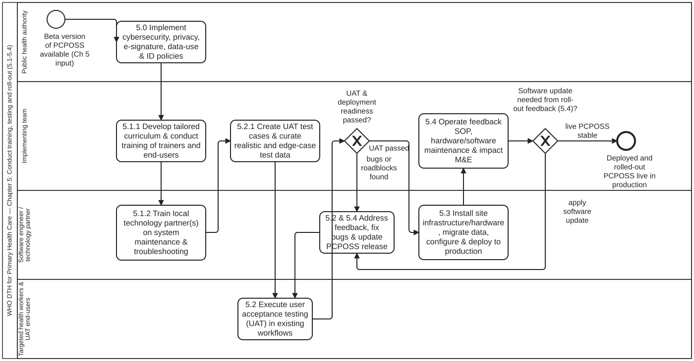
Structure of the model (Process_TrainingTestingAndRollOut)
- Governance policies and SOPs (5.0,
sec-025):Task_5_0_EstablishPoliciesestablishes data-privacy, security, device-management and clinical governance SOPs prior to facility roll-out. - Parallel training tracks (5.1,
sec-026):GW_ForkTrainingsplits into:Task_5_1_1_TrainUsersAndToT(5.1.1 Training on use of PCPOSS & training of trainers) for health workers, clerks and supervisors.Task_5_1_2_TrainMaintenance(5.1.2 Training on maintenance of PCPOSS) for local IT support and system administrators.
- User Acceptance Testing (5.2,
sec-027):Task_5_2_1_PrepareUATprepares UAT test cases and synthetic test data (smart-base:TestScenario, aligned withcat-harnesstest-plan-execution.bpmn).Task_5_2_2_ExecuteUATexecutes UAT with representative health workers, clerks and supervisors.GW_UATPassedroutes defects toTask_5_2_3_RemediateUATDefectsuntil UAT passes.
- Production deployment and feedback loop (5.3–5.4,
sec-028):Task_5_3_DeployToProductiondeploys the PCPOSS in pilot/roll-out facilities andTask_5_4_FeedbackAndMaintenanceoperates the helpdesk, supervisory support and continuous feedback loop.
5.1 Develop and conduct training
✎ edit📣 feedback 5.1 Develop and conduct training (5.1.1 Training on use, 5.1.2 Training on maintenance).
Three categories of training will be needed: (i) training on use of the PCPOSS; (ii) training on maintenance of the PCPOSS; and (iii) training related to any potential changes to service delivery and quality of care. This Handbook will only address the first two types of training as the third type of training should be addressed by the national health programme managers. The training curriculum should be tested at a small scale prior to training larger groups of stakeholders.
5.1.1 Training on use The first category of training includes competency-based training of health workers on how to use the system and how to train others to use it (i.e. training of trainers). This training is crucial in ensuring that health workers use the PCPOSS. The training curriculum must be highly tailored and culturally sensitive to the local community. Training should be given in the local language (if possible) and should be cognizant of health workers’ familiarity with mobile or web technologies in general. For example, if targeted health workers have never used a smartphone or tablet before, they should be given the opportunity to explore the various functionalities of a smartphone or tablet (e.g. camera application, calculators, timers) before being trained on the PCPOSS. When health workers have the opportunity to “play” with the smartphone or tablet beforehand, such as by exploring the device’s camera filters, they are likely to have greater enthusiasm for using the device for health service provision. Training of trainers should be provided so that there is first- line support for any health workers having difficulty using the PCPOSS. The training of trainers should begin once finalized prototypes can be used, so health workers are prepared to use the PCPOSS as soon as it is deployed. 5.1.2 Training on maintenance The second category of training includes training of local technology partner(s) responsible for technical maintenance and troubleshooting, as having a partner available locally will facilitate the ability to maintain a system. This may or may not be the technology partner who developed the PCPOSS; the local partners will need an in-depth working understanding of the system to be able to troubleshoot the PCPOSS without external intervention. They should be available to do this whenever health workers and implementation partners are unable to troubleshoot technical problems themselves. Training the local technology partner(s) is a key approach to building digital capacity for building, troubleshooting and customizing the system. The training on system maintenance should be carried out throughout the entirety of the project.
5.2 Test user acceptance and deployment readiness
✎ edit📣 feedback 5.2 Test user acceptance and deployment readiness (5.2.1 Test cases and test data).
With a beta version of the PCPOSS available, a series of user acceptance tests needs to take place prior to deployment. User acceptance testing (UAT) should be conducted by the core project team with a small group of trusted advisers and end-users. The small number of UAT testers, including some end-users, should initially be trained on how to use the beta version of the software, then tasked with using the PCPOSS in existing workflows, and finally invited to provide feedback. These UAT testers could report back on any bugs, design flaws and features they liked and disliked. Feedback from this group will serve as a small-scale test of how well the system would succeed in a larger scale roll-out, and what further developments and improvements are needed beforehand. UAT is one of the most crucial types of testing that needs to be done before system can be deployed in a production environment, where it is used by health workers for real health service delivery, collecting real data. Conducted properly, UAT can generate rich and helpful feedback directly from end- users. UAT is needed to identify bugs and usability roadblocks and gain any other feedback that can be addressed prior to deployment in a pilot or large-scale roll-out. It gives the opportunity to prevent a system with bugs and design flaws from being launched to a wider audience.
5.2.1 Test cases and test data One way to facilitate UAT is the creation of test cases and associated test data based on use cases that simulate real-time use. Test cases outline how the system should be used and the expected outcomes to test key functionality. For example, to test clinical decision logic, a test case can outline what symptoms the tester should be inputting into the system and the expected diagnosis based on those inputs. If the system provides an outcome that aligns with what the expected diagnosis is, then the test can be considered a success. Selecting the right set of test data is a very important factor that is often overlooked, leading to a less effective UAT and perpetuation of bugs. Test data should be curated with data that closely reflects real-time settings and must include some scenarios that might occur but are not routinely expected (i.e. edge cases). In some cases, the testing process can also be automated, using test scripts. Typically, test cases should be designed using the use cases developed during the needs assessment phase (see Section 3.2.2) and/or the use cases for testing developed during the design testing phase (see Section 4.3.2).
5.3 Deploy the system
✎ edit📣 feedback 5.3 Deploy the system.
Deployment of the system often requires strong strategic thinking by the technology partner, as poorly deployed systems can make or break an entire project. Once all the required testing has been completed, including UAT, the system can be deployed in a production environment. A production environment refers to the normal operational environment where a system is deployed and will be in full use (98). This translates to health workers being able to input the services they have provided and that information either being saved onto the device and/or uploaded to the server when there is an internet connection. This deployment and roll-out phase should be led by the technology partner, as every software and context will be different. Some common steps, not in any particular order, include: • installing any infrastructure needed at roll-out sites, based on earlier needs assessments; • determining hardware delivery logistics to get the equipment needed to the deployment sites; • installing the software (i.e. PCPOSS) onto the selected hardware (e.g. mobile phones, tablets, computers); • migrating data from an old system to the new PCPOSS; • loading configuration data; • adding and setting up facilities and health workers’ data and accounts in the system; • testing the infrastructure and hardware installed at each site; • scheduling time for software deployment with health workers and/or the health facility manager to avoid disrupting health service delivery; • implementing feedback management processes; and • deploying the software system. Trusted digital deployment Poor deployment can lead to mistrust and scepticism of digital technologies in general, making future deployments of new and improved systems even harder. When the system is rolled out, there might already be mistrust of digital technologies caused by poor deployment of legacy systems. Building success in implementing technology is highly valuable for earning trust in digital roll- outs and ensuring systems are taken up and can contribute to digital transformation. WARNING
5.4 Manage feedback and system maintenance
✎ edit📣 feedback 5.4 Manage feedback and system maintenance.
Feedback management, training, software updates and hardware maintenance will all be needed continually during the roll-out. The implementation team should have a standard operating procedure for managing all this feedback. For example, if there is a bug that occurs during the pilot and roll-out: • How will the team receive feedback? • Is there a call centre or other central feedback mechanism (e.g. email, secure chat, text messaging) that needs to be set up? • Who will be addressing that feedback and making updates to the system? • What are the procedural steps for addressing and following up with the feedback received? In addition to ongoing system maintenance during the deployment phase, ongoing monitoring and evaluation of the impact of the system after deployment is also important. This looks at the efficiency gains, cost savings and, if possible, the impact on health outcomes. The results of monitoring and evaluation can also help gain buy-in for future scale-up. Guidance and a framework for the most appropriate method of monitoring and evaluation are found in the WHO publication, Monitoring and evaluating digital health interventions (99).
Chapter 6. Scale up the system
✎ edit📣 feedback Chapter 6 overview: Scale up the system.
CHAPTER 6 Prepare for scale-up
To replace a paper system completely, or to replace multiple, disconnected legacy digital systems, successful implementation of a person-centred point of service system (PCPOSS) needs to be scaled up while legacy systems (paper or otherwise) are phased out – a process that requires a great deal of resources and political buy-in.
This chapter aims to provide an overview of the key steps to begin the possible phase-out of paper and/or legacy systems. A multitude of factors need to be considered. Every country and context will be moving at a different pace due to a variety of factors, that include but are not limited to: funding and resources available domestically or externally from donors; political buy-in; culture of change at all levels; the context in which the PCPOSS fits into the national health and digital health strategy overall; as well as the information and communication technology infrastructure and connectivity planned in countries.
✎ edit📣 feedback Table. Chapter 6 phase panel (Who should be involved / Inputs / Tools / Outputs)
| Component | Details |
|---|---|
| Who should be involved? | • The leading public health authority, such as a ministry of health, should be leading this phase to ensure scale-up and widespread adoption, that the necessary policies are in place to allow for phase-out of paper and/or legacy systems. • Implementing teams should be assist the public health authority throughout the scale-up phases, with the addition of monitoring and evaluation specialists. • Monitoring and evaluation specialists are critical during this stage to determine whether the PCPOSS is meeting the required metrics so that the public health authority is comfortable with phasing out paper and/or legacy systems. • Technology partners will need to continue to be a part of this phase to maintain and update the system as the number of users and functionality increase through scale-up. • End-users will continue to provide feedback as well as adopt the tool itself. |
| Inputs | • Live version of your PCPOSS being used |
| Tools | • Monitoring and evaluating digital health interventions (99) • The MAPS toolkit (100) |
| Outputs | • Set of objectives and benchmarks the PCPOSS will need to meet before phasing out paper and/or legacy systems • Strategic plan for phasing out paper and/or legacy systems |
Chapter 6 phase panel: Who should be involved, Inputs, Tools and Outputs for scaling up the system
✎ edit📣 feedback Business process Phase 4: Scale-up (Chapter 6).
Phase 4: Scale-up (Chapter 6)
Formal BPMN 2.0 model of Chapter 6 (sections 6.1 to 6.5, sec-029–sec-033), governing readiness assessment, SMART objectives and Table 5 benchmarks, progress monitoring, staged phase-out of legacy paper systems with paper backup SOPs, and long-term change management and electronic data-use culture.
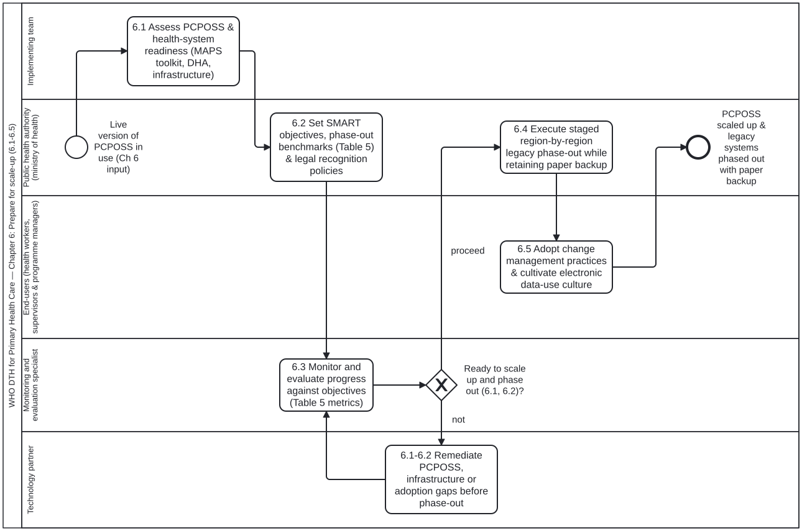
Structure of the model (Process_ScaleUp)
- Readiness assessment (6.1,
sec-029):Task_6_1_AssessReadinessevaluates political, financial, infrastructure, workforce and technical readiness across target regions. - SMART objectives and Table 5 benchmarks (6.2,
sec-030):Task_6_2_DefineSMARTObjectivessets measurable scale-up targets and benchmark thresholds (Table 5). - Monitoring progress and readiness gateway (6.3,
sec-031):Task_6_3_MonitorProgressmeasures facility performance, user adoption and data quality against Table 5 benchmarks.GW_ReadyToScaleUp(Ready to scale up?) is bound toready-to-scale-up.dmn#Decision_ReadyToScaleUp: when"not",Task_6_3a_RemediateReadinessGapsaddresses infrastructure, training or software gaps and re-monitors; when"proceed", scale-up proceeds.
- Staged legacy phase-out and paper backup SOPs (6.4,
sec-032):Task_6_4_PhaseOutLegacySystemsconducts staged retirement of duplicate paper registers while retaining standardized paper backup forms and SOPs for power or connectivity outages. - Change management and electronic data-use culture (6.5,
sec-033):Task_6_5_ChangeManagementAndDataUseinstitutionalizes routine electronic data review, supervisory feedback and peer learning by health workers and facility managers.
6.1 Determine readiness for scaling up
✎ edit📣 feedback 6.1 Determine readiness for scaling up.
Before scaling up and phasing out paper and legacy systems, it is important to determine both that the PCPOSS is ready to be scaled up and that the existing health system is ready to phase out paper and legacy systems.
A variety of metrics and indicators is available to help determine the readiness of the PCPOSS and the health system. Scaling-up consists of deliberate efforts to increase the impact of innovations successfully tested in pilot or experimental projects, to benefit more people and to foster lasting policy and programme development. The WHO MAPS toolkit: mHealth assessment and planning for scale (100) is a comprehensive self-assessment and planning guide designed to improve the capacity of projects to pursue strategies that increase their potential for scaling up and achieving long-term sustainability. The MAPS toolkit is designed specifically for programme managers so that they can assess their digital health implementation as well as plan for actionable steps for scaling up. Additionally, adding projects to the Digital Health Atlas (DHA) can help prevent duplicative efforts, and to share lessons with the wider community of digital health implementers (101). As mentioned in section 2.3 Before using this resource it is important to ensure that key foundational elements are in place (e.g. electricity, network connectivity, political support, etc.) in the areas intended for scale-up of the PCPOSS. Once there is a clear plan, and there are the resources needed for scaling up, begin the scale-up!
✎ edit📣 feedback Decision table Scale-up readiness decision table (sections 6.1 and 6.2, Table 5).
Scale-up readiness decision table (sections 6.1 and 6.2, Table 5)
Formal DMN 1.5 decision table (Decision_ReadyToScaleUp, hitPolicy="FIRST") encoding the readiness criteria in section 6.1 (Assess readiness for scale-up, sec-029) and the SMART objective benchmark checks in section 6.2 (Set SMART objectives for scale-up, Table 5, sec-030), evaluated at gateway GW_ReadyToScaleUp in scale-up.bpmn.
Decision structure
Written from the DMN file next to this page.
- Inputs:
pcpossReady(boolean): PCPOSS ready?healthSystemReady(boolean): Health system ready?objectivesMet(boolean): Objectives met?
- Outputs:
outcome("proceed"|"not"|"unknown"): Proceed or notguidance: Handbook guidance (6.1, 6.2, 6.4)
- Rules: 5, hit policy
FIRST. The last rule returns"unknown"when any input has not been answered.
Scale-up readiness and legacy system phase-out (6.1, 6.2)
The first rule that matches applies.
| Rule | When | Then | |||
|---|---|---|---|---|---|
| PCPOSS ready? | health system ready? | objectives met? | proceed or not | handbook guidance (6.1, 6.2, 6.4) | |
| 1 | true | true | true | proceed | Proceed with scale-up and staged phase-out of paper/legacy systems while retaining paper backup SOPs (6.1, 6.2, 6.4) |
| Sections 6.1, 6.2 and 6.4: Both the PCPOSS and the health system are ready and country-defined objectives (Table 5) are met. Proceed with scale-up and staged region-by-region phase-out of paper/legacy systems while retaining a backup paper mechanism for downtime and emergencies. | |||||
| 2 | false | any | any | not | Do not proceed: remediate PCPOSS technical, functional or support readiness using the MAPS toolkit (6.1) |
| Section 6.1: The PCPOSS itself has not yet demonstrated technical, functional or maintenance readiness for scale-up. | |||||
| 3 | any | false | any | not | Do not proceed: establish health-system enabling environment, infrastructure and legal recognition policies (6.1, 6.2) |
| Section 6.1: Foundational health-system elements (power, connectivity, governance, policies recognizing digital records, resources) are not yet in place in target scale-up areas. | |||||
| 4 | true | true | false | not | Do not proceed: continue monitoring and addressing bottlenecks until country-defined SMART objectives are met (6.2, 6.3) |
| Section 6.2: Country-defined SMART objectives and benchmarks across functionality, user adoption, efficiency, quality and outcomes (Table 5) have not yet been met. Inputs are explicit so that a missing answer falls to Rule_Unknown. | |||||
| 5 | any | any | any | unknown | Answer every input question before this decision is made. |
| Unknown: at least one input has not been answered, so the source gives no outcome. Answer every input question first. (House rule: every table has an explicit unknown outcome, dth-phc#1 R3.) | |||||
6.2 Plan for phase-out of legacy system(s)
✎ edit📣 feedback 6.2 Plan for phase-out of legacy system(s).
When moving from scale-up to integration and sustainability (see Monitoring and evaluating digital health interventions [99]), answer the following question: What targets, indicators or objectives must the PCPOSS meet for the public health authority to feel comfortable phasing out paper and/or legacy systems? Clear, agreed upon objectives should be set to allow for the phase-out of legacy systems. When these objectives are met, they would provide an indication that the legacy system(s) can be phased-out. The objectives for the PCPOSS should be specific, measurable, attainable, relevant and time-bound (or SMART for short) (99): • Specific: the indicator must be specific about what is being measured, and from whom the data will be collected and when. • Measurable: the indicator must be quantifiable. Avoid the use of subjective terms such as “good quality” or “accessible” in defining the indicator, as these may be interpreted differently across regions, professions and individuals. • Attainable: the indicator should be attainable within the available budget, time and human resources. • Relevant: the indicator should be relevant to the context, and specific to the needs of the programme or intervention being evaluated. • Time-bound: the indicator should be specific about time, based on the overall time frame of the health programme. Furthermore, these objectives should be based on indicators that would answer the following questions (99): • Does the PCPOSS work as intended? • Has all necessary data been migrated from paper and legacy systems to the PCPOSS? • Do health workers use the system as intended? • Does the PCPOSS improve processes for service delivery and accountability? • How do these improvements in service delivery and accountability affect health outcomes? Key objectives and indicators that are of critical managerial importance for phasing out paper systems should be prioritized. For example, the coverage of electricity access for health facilities specifically is a more important indicator than countrywide coverage. Assuming the PCPOSS can work offline, the paper system can be phased out even if there is not 100% countrywide coverage. Government will also need to be comfortable implementing policies that legally recognize digital versions of health service user health records, making paper systems obsolete. However, there should always be a paper system available as a backup system in instances of network downtime, blackouts, etc., even if the system has been deployed in 100% of health-care facilities. Downtime or offline standard operating procedures must be developed to ensure continuity of care. Table 5 offers some example indicators and measures on prioritized objectives to be met for the phase-out of paper and/or legacy systems that could be used. Indicators should not be too burdensome to monitor. In fact, indicators that can be taken directly from the PCPOSS should also be leveraged. The indicator to report the length of time health workers need for registering new health service users, for example, can be pulled directly by using the length of time a health worker spends on the registration page as an estimate, assuming there are mechanisms to note time in which there is inactivity. Using the system for direct monitoring as much as possible can help to relieve the health workers’ burden of manually tracking indicators.
✎ edit📣 feedback Table 5. Table 5. Key indicators of whether a digital system meets its objectives
Table 5. Key indicators of whether a digital system meets its objectives
| Questions for assessment | Metric area | Indicator |
|---|---|---|
| Does the person-centred point of service system (PCPOSS) work as intended? | Connectivity | • Percent (%) of target population with internet connectivity (whether through mobile broadband or Wi-Fi) • % of health workers with internet connectivity (whether through broadband or Wi-Fi) |
| Does the person-centred point of service system (PCPOSS) work as intended? | Power | • % of health workers with current access to a power source for recharging a mobile device • Number of hours per day health workers have access to power |
| Does the person-centred point of service system (PCPOSS) work as intended? | Availability of technical support | • % of health workers with access to local technical support systems for troubleshooting |
| Does the person-centred point of service system (PCPOSS) work as intended? | Maintenance | • % of devices (mobile, tablet or otherwise) given to health workers that are currently operational |
| Does the person-centred point of service system (PCPOSS) work as intended? | Functionality | • % of data fields from the paper-based system that are captured by the PCPOSS • % of prioritized functionsᵃ achieved by the PCPOSS |
| Do health workers use the PCPOSS as intended? | User adoption | • % of health workers who demonstrate proficiency in routine use the PCPOSS • % of health workers observed using the PCPOSS for intended purpose over reference period • % of data fields/forms left incomplete over a reference period • % of total reports sent via the PCPOSS over reference period |
| Do health workers use the PCPOSS as intended? | User response | • % of health workers who rate the PCPOSS as easier to use than the paper and/or legacy system • % of health workers who are satisfied with using the PCPOSS |
| Do health workers use the PCPOSS as intended? | Health service user coverage | • % of health service users uniquely registered on the PCPOSS |
| Does the PCPOSS improve processes for service delivery and accountability (compared with current processes)? | Efficiency | • Change in time health workers need for registering new health service users • Change in time health workers need for reporting • Change in number of health service users per day health workers are able to see • Change in time health workers need for recording health service user data • Change in time community health workers need to transmit individual health service user data to a health facility |
| Does the PCPOSS improve processes for service delivery and accountability (compared with current processes)? | Quality | • % of health workers adhering to national or global guidelines • % of health service users who receive services according to recommended care plan • % of health service users reporting adverse health events • % loss to follow-up among health service users |
| Does the PCPOSS improve processes for service delivery and accountability (compared with current processes)? | Use | • % of health facilities using PCPOSS • % or number of health workers (disaggregated by health worker occupational group) using PCPOSS • % of referrals conducted via PCPOSS |
| Does the PCPOSS improve processes for service delivery and accountability (compared with current processes)? | Costsᵇ | • % change in costs to health workers for reporting-related expenses (e.g. transport, notebooks, pens) • % change in costs of human resources for data entry • % change in costs associated with appropriateness and timeliness of illness management • % change in reported health service user out-of-pocket payments for management of illness |
| How do these improvements in service delivery and accountability affect health outcomes? | Health outcomes | Programmatic indicators or outcomes will vary by health programme area. Some examples include: • % of pregnant women receiving recommended minimum of eight antenatal care contacts • % change in drop-out rates for immunizations • % of women receiving family planning method of choice • % coverage of case-based surveillance for HIV |
PCPOSS: Person-centred point of service system. ᵃ Priority functions set by following section 3.8 to understand user requirements, and section 4.2 to validate functional requirements ᵇ Over a reference period, the percentage changes in costs are from costs using the PCPOSS compared with those using the paper and/or legacy system. Source: WHO, 2016 (99).
6.3 Monitor and evaluate progress on objectives
✎ edit📣 feedback 6.3 Monitor and evaluate progress on objectives.
With clear objectives and indicators to measure progress towards them, it is crucial that the PCPOSS has a clear and robust monitoring and evaluation plan and methodology. WHO offers a practical guide, Monitoring and evaluating digital health interventions (99), with detailed stepwise guidance that is beyond the scope of this handbook. The guidance helps with improving the quality and value of monitoring and evaluation efforts in the context of digital health interventions (also commonly referred to as mHealth or eHealth interventions). It is intended for implementers and researchers of digital health activities, as well as policy-makers seeking to understand the various opportunities and stages for systematically monitoring implementation fidelity and evaluating the impact of digital health interventions.
6.4 Phase-out of legacy system(s)
✎ edit📣 feedback 6.4 Phase-out of legacy system(s) and emergency paper backup resilience.
Strategically, it is advised to not wait until the entire country is ready to phase out paper systems and/or legacy systems and instead phase out those systems in a staged, or step-wise, manner. For example, if one region or province is ready to phase out paper systems completely, but other provinces are still in the process of adopting PCPOSSs, it might be better to begin the phase out of the paper system in the province that is ready. This will allow a phased adoption of the PCPOSS and phase-out of paper systems, which is beneficial when resources are limited. This will set a manageable scope for success, while allowing learnings to be shared from one province to another. This process must be developed with all key stakeholders to ensure that the plan for phasing out paper and/or legacy systems makes sense in context.
Ensure a backup paper system is available Although phasing out of paper and/or legacy systems will be needed to ensure there is no duplication of efforts by the health worker, it is important to ensure that there will always be a back-up mechanism (e.g. paper forms), to be able to record health service user health records and conduct reporting activities in worst case scenarios that stop the system from functioning entirely, such as cybersecurity attacks and crisis situations. Having a back-up paper system ensures resiliency of the overall system. WARNING
6.5 Adopt change management practices
✎ edit📣 feedback 6.5 Adopt change management practices and SMART Guidelines Layer 5 (Dynamic guidelines).
As the PCPOSS is adopted and increasingly integrated into routine use, the phasing out of paper systems entirely will require behaviour change, not just at the level of health workers, but within the public health authority itself. Successful change management is a key factor in implementing any new process or system, but it is especially important for implementing new digital systems. Switching from paper to digital systems, or from one system to another, even with the ubiquity of technology in the world today, remains a big change. A clear change management strategy needs to align with programmatic strategies and change management activities need to be embedded at all levels of the health system. There are multiple models and methodologies available for change management (102–107). Regardless, change management requires commitment and active participation from all levels of the health system, including leadership levels. In addition to changing health workers’ behaviour so they are comfortable using a digital system at the point of care, the culture of electronic data use will need to be cultivated for health workers, their supervisors and public health programme managers, so that the increased availability of data can result in improved quality of care and programme management. WHO’s SMART Guidelines final knowledge layer of the SMART Guidelines framework, Dynamic guidelines (L5), is on the use of big data and advanced analytics. Advanced analytics technology, such as artificial intelligence, applied to these datasets can facilitate precision clinical and public health systems (18).
Annexes
✎ edit📣 feedback Annex 1. Principles for digital development.
ANNEX 1. Principles for digital development
| Principle | Description |
|---|---|
| Understand the existing ecosystem | Trust starts with a thorough understanding of the dynamic cultural, social, and economic context in which you are operating. |
| Share, reuse, and improve | Build on what works, improve what works, and share so that others can do the same. |
| Design with people | Good design starts and ends with people that will manage, use, and ideally benefit from a given digital initiative. |
| Design for inclusion | Consider the full range of human diversity to maximize impact and mitigate harm. |
| Build for sustainability | Build for the long-term by intentionally addressing financial, operational, and ecological sustainability. |
| Establish people-first data practices | People-first data practices prioritize transparency, consent, and redressal while allowing people and communities to retain control of and derive value from their own data. |
| Create open and transparent practices | Effective digital initiatives establish confidence and good governance through measures that promote open innovation and collaboration. |
| Anticipate and mitigate harms | Harm is always possible when it comes to technology. To avoid negative outcomes, plan for the worst while working to create the best outcomes. |
| Use evidence to improve outcomes | Evidence drives impact: continually gather, analyze, and use feedback. |
Source: Principles for Digital Development [website]. New York (NY): United Nations Foundation; no date (https://digitalprinciples.org, accessed 16 August 2024). Licence: https://creativecommons.org/licenses/by-sa/4.0.
Annex 2. Worksheet for semi-structured interviews
✎ edit📣 feedback Table. Annex 2. Worksheet for semi-structured interviews
ANNEX 2. Worksheet for semi-structured interviews
This example interview guide is intended to provide guidance on what key information the team should be collecting to gain insights on the day-to-day life of the end-users, in this case a health worker. This has been adapted from a guide used to conduct facility level validations and capture business processes.¹
¹ This worksheet was adapted from a Requirements Gathering and Process Documentation for Digital Client Records System: Facility Visit Guide (2019), developed by Brian Taliesen (PATH, Nairobi, Kenya) and Jenny Thompson (PATH, Seattle, United States of America), licensed under CC BY-SA 4.0
Communicate purpose of this interview We believe health workers are central to ensuring good health. We are seeking to learn more about health workers, like yourself, so we can better design valuable resources to help you make your daily jobs easier and help maintain your passion for your work. We are committed to your privacy and your information will be maintained anonymously.
Overview
| Topic | Questions |
|---|---|
| Name | • Would you spell your name for me? |
| Title | • What is your current title? |
| Hero statement | • Can you tell me a little about what you do each day? • What about your job are you most proud of? Or, what about your job do you like most/makes you smile? • What is the main activity you do each day? |
| Experience | • What year did you start as (a nurse/midwife)? • How long have you been working as (a nurse/midwife)? • How long have you been at this facility? • What other health-related positions or experience have you had? |
| Training | • What is the name of your degree or certification? • How many years of education did it take for you to get your degree? • What specialized training do you have for this role? • How long was the training? |
My tasks
| Topic | Questions |
|---|---|
| Service delivery (Time spent with health service users) | • What portion/percentage of your day is on delivery of health services? • What services are part of that time? |
| Administrative | • Outside of providing services, how many hours or percentage of your time do you spend on: administrative duties such as managing stock, traveling for outreach, compiling data for reports, supervision? • Are there other administrative activities that I did not name? |
My work
| Topic | Questions |
|---|---|
| Average health service users per session | • About how many health service users do you see on a typical day? • How many on a very busy day? • On a busy day, how many health service users might be waiting at a time? • How often do they come in with someone else? Who is it? |
| Description of other staff and their duties | • How many other staff and volunteers help you deliver health services? • What are their primary responsibilities? |
| Outreach | • Do you perform outreach as part of your activities? • How many times during a month do you travel outside of the facility to conduct outreach? • How many health service users and/or households do you see during a typical outreach session? • Do the services you provide during an outreach session differ from here at the clinic? |
| Referrals and follow-up | • Do you track referrals you provide to health service users? Are there referrals you expect to receive? • How often do you provide or see a referral health service user? • Do you follow-up with health service users to remind them of an appointment? If so, how do you do this? • Do you follow-up with health service users to remind them of a missed appointment? If so, how do you do this? • If you do not do this, does someone else at your facility typically perform follow-up tasks? Who? |
| Communication | • Do you contact health service users for any reason? What are those reasons? • How do you contact health service users when you need to? • Do you contact other facilities for any reason? What are those reasons? • How do you contact other health facilities when you need to? Or do they reach out to you? |
My typical day at the clinic • Include when and where the activity takes place. • Include whom they interact with when doing the activity.
| Time | Activity | Number of health service users in queue |
|---|---|---|
| Arrive at the clinic | ||
| Workday ends |
Motivators and challenges
| Topic | Questions |
|---|---|
| Barriers | • What things make your job harder or keeps you from serving health service users to the best of your ability? • Let the health worker first answer the general question. Possible probes after letting them answer in their own words: 1. paperwork; 2. wait times; 3. stock-outs; 4. staff turnover • Do you have ideas on how to fix some of these challenges? |
| Motivations | • What is your favourite part of your day? |
WORKSHEET
Annex 3. Observations worksheet
✎ edit📣 feedback Table. Annex 3. Observations worksheet
ANNEX 3. Observations worksheet
The work environment To be completed once per facility.
| Field | Notes / Questions |
|---|---|
| Facility name | |
| General description of services | • What health services are provided at this facility? |
| Catchment population | • Which populations is this health facility serving |
| Number of staff | • Full time • Part time • Volunteers |
| Electricity | • Does the facility have electricity? • Is it reliable? |
| Technology and connectivity | • Is there network connectivity at the facility? • Do staff use a tablet, smart phone, or mobile phone for work? If so, for what? • For larger facilities, does the facility have a computer? More than one? |
| Other facility characteristics | • What is the environment like? • What are the practices observed? • What products are used? |
What are the days and hours of operation for this facility?
| Hours | Monday | Tuesday | Wednesday | Thursday | Friday | Saturday | Sunday |
|---|---|---|---|---|---|---|---|
| Open | |||||||
| Close |
Health service user’s path To be completed for each health service user being observed.
| No. | Step | Description | Average time spent in minutes |
|---|---|---|---|
| 1 | Arrive at the clinic | ||
| 2 | |||
| 3 | |||
| 4 | |||
| 5 | |||
| 6 | |||
| 7 | |||
| 8 | |||
| 9 | |||
| 10 | |||
| 11 | Depart | ||
| 12 | Include activities after departure if the health service user will have a follow-up outside the facility, e.g. pharmacy pick-up. | ||
| 13 | |||
| 14 |
WORKSHEET
Annex 4. User persona worksheet
✎ edit📣 feedback Table. Annex 4. User persona worksheet
ANNEX 4. User persona worksheet
A user persona worksheet that summarizes each and every type of end-user (e.g. community health worker, district health officer, health service user) should be completed.
| Section | Prompts |
|---|---|
| Persona title (e.g. nurse) | |
| Name, photo and type of persona | • Name (real or illustrative) • Photo or illustration of persona (helps with visualization and storytelling) • Health worker occupational group |
| Demographics | • Gender • Age • Community of origin • Language(s) used |
| Expected roles and responsibilities | • Daily • Weekly • Monthly |
| Actual roles and responsibilities | • Daily, weekly, monthly • How does this person spend their time? • What is a typical day |
| Context description | • Do they own their own mobile device? If yes, what kind? • Level of familiarity with digital tools? • What kind of environment is this persona working in? • Rural or urban? • Internet connectivity? • Availability of electricity and water? • Homogenous or heterogenous population? • Distance to nearest referral facility? |
| Challenges | Note: It is beneficial to include quotes given directly from interviews for the persona you are creating • What are the routine challenges faced by this user? • Long distances travelled without reliable mode of transport? • Sufficient training and performance monitoring? • Workload? |
| What does success look like | Note: This does not have to be strictly professional success. An overall perception of success can greatly impact performance in a professional setting. Sometimes the target health worker occupational group is a group of volunteers, so providing health services may not be their priority. • What are their motivations? • Complete coverage of health service users? • Being able to afford food for children? • Being promoted? • Others? • What indicators are they measured on? • What are their performance management metrics? |
WORKSHEET
Annex 5. User stories worksheet
✎ edit📣 feedback Table. Annex 5. User stories worksheet
ANNEX 5. User stories worksheet
User stories help to illustrate the end-users’ views of how they want to use the PCPOSS, which can eventually be translated into functional and non-functional requirements (see section 3.8).
| As a… | I want to… | So that… |
|---|---|---|
| User persona(s) wanting the use case (see Annex 4) | What the user wants to be able to do with the system (i.e. functional and non-functional requirements) | Reason for wanting this requirement/purpose |
| Example: As a nurse/midwife | Example: I want to refer health service users with high-risk pregnancies to the district obstetrics and gynaecology department | Example: So that the obstetrics and gynaecology department can directly access the health service user’s information |
WORKSHEET
Annex 6. Business process matrix guide
✎ edit📣 feedback Table. Annex 6. Business process matrix guide
ANNEX 6. Business process matrix guide
The business process matrix provides an overview of all the key processes that are involved. This overview serves as an inventory of all the business processes that have been or will be mapped into workflows (see section 3.3). Each row should describe an individual business process with the following information needed for each row, under separate columns.
| What to note | Description |
|---|---|
| Business process number | This is a running number or letter for each business process, to help with organization and references. |
| Process name | What is the short title of this process? • Examples: health service user registration, counselling, service provision, aggregate reporting |
| Process ID | Important for referencing the other components required for requirements gathering (e.g. data dictionary, decision support logic). • An example used in the Digital adaptation kits (DAKs) is “abbreviated health domain name”, “number or letter”. For the DAK for family planning, “FP.B” refers to “Family planning counselling”. |
| Personas | Which groups of people or key functions and roles are involved in completing the process? • Examples: nurse, head nurse, community health worker, district health office, health service user, specialist physician • Note: These are the groups that should be reflected in each swim lane of the workflow diagram. |
| Objectives | What is the purpose of the process? What objectives does it set out to achieve? • A concrete statement describing what the process seeks to achieve. A short description of the business process can also be given here. |
| Task set | The general set of activities performed within the process. What key tasks, aligned with the roles and responsibilities of the health worker occupational group, are involved in this business process? What activity triggers the start of this process? When does this process end? |
Annex 7. Form inventory guide
✎ edit📣 feedback Table. Annex 7. Form inventory guide
ANNEX 7. Form inventory guide
The following explains the information needed for each paper or digital form, which should be logged in separate rows in a table. For each row of the inventory, the following columns should be filled out. This helps organize what data will need to be collected to reflect existing data collection workflows.
| Inventory column | Description of information entered |
|---|---|
| Form ID | If the form or register has an existing identification number, list it here. If there is no numbering system in use, create one that will allow the implementation team to easily keep track of all forms. Use a system of alphanumeric characters that distinguishes between the various groups of forms or registers. |
| Form version | If the form or register has an existing identification number and tracking system, there will usually be a version listed as well. That should also be listed here. If no form version exists, it would be best to list the date the form was obtained by the implementation team in case the version changes as you are going through this needs assessment process. |
| Form title | The form title, exactly as it appears on the form itself, in the local language. |
| Translated form title (optional) | The title of the form in the team’s working language. This field is not necessary if the team’s working language is the same as the language used in the form. |
| Form type | Is it a register for the purposes of health service delivery or is it a reporting form for the purposes of submission to supervisors? |
| Filled by | Title of the health worker occupational group responsible for filling out the form. |
| Submitted to | Title of the managing health worker occupational group receiving this form for supervisory and/or reporting purposes. If the form is kept with the worker who fills it out, mark this column with “not applicable” or “N/A”. |
| Submission frequency | For any forms that are given to another health worker occupational group for supervisory and/or reporting purposes, indicate how often this is (or should be) done. If the form is kept with the worker who fills it out, mark this column with “N/A”. |
| Activity ID | Give the activity number for which the form is used. This should align with the activity IDs in the business process matrix (Annex 6). |
| Source | Who “owns” this form? E.g. is it required by the district health office, the provincial health office, or the national public health authority? |
Annex 8. Form data mapping guide
✎ edit📣 feedback Table. Annex 8. Form data mapping guide
ANNEX 8. Form data mapping guide
The following guide helps organize and map which data elements are collected from each paper form currently used. A spreadsheet should be created to document this information. Each data element should be noted in a separate row in the spreadsheet. For each row, the following columns should be filled out. This initial form data mapping will help with streamlining data collection design in subsequent steps (see sections 3.4 and 3.5).
| What to note | Description |
|---|---|
| Activity ID | Include the Activity ID under which that data element is collected. This should align with the Activity ID that is provided during form mapping (see Annex 7). |
| Form ID | The Form ID should be from the Form ID listed in the forms inventory spreadsheet (Annex 7). List the Form ID in which the data element appears. This is important to ensure that the design of the digital system has taken into account all the required paper forms and data elements in those paper forms. |
| Form data element label | List the label of the data element as written in the original form (or translated as closely as possible). This will be key in keeping track of which data elements from the original paper forms are duplicated. Note that duplicate data fields could have been included purposely in multiple forms (e.g. health service user identifiers, such as name, date of birth, village) as a means to identify an individual health service user. If a data element appears in multiple forms, possibly with varying data element labels, list them all here, separated by a semicolon (i.e. Form ID-Form data element label; Form ID-Form data element label). |
| Data element label | The label of the data element written in a way that end-users can easily understand (e.g. “education level”, “weight”, “height”, “reason(s) for coming into facility”). The data element label in this column is what will be used in the digital form as the digital register should not simply replace the paper registers, but it should also streamline processes and link duplicated data elements. |
| Description and definition | The description and definition of the data element, including any units that define the field (e.g. weight in kilograms [kg]). Provide a clear explanation of what this data field is requesting. This definition will be key for streamlining for resolving duplicate data elements and how required calculations are documented. Although the Data element labels could vary across paper forms, it is important to clearly note the definition of this specific data element as data elements with the same definition can be reconciled for one time data entry. Alternatively, it could also be discovered that data elements with the same Data element labels are used to mean different things. This would require a change in the data element labels so that data entry is done accurately. |
| Data type | The data types are:² • Boolean (i.e. true/false, yes/no) • String (i.e. a sequence of Unicode characters – e.g. name) • Date (e.g. date of birth) – used when only the date is recorded • Time (e.g. time of delivery) – used when only the time is recorded • DateTime (e.g. appointment) – used when the date and time are recorded • ID (e.g. unique identifier assigned to the health service user) • Quantity – a number that is associated with a unit of measure outlined in the standard for Unified Code for Units of Measure (UCUM);³ quantities include any number that is associated with a unit, such as “number of past pregnancies”, where “past pregnancies” is the unit of measure (if the data type is a Quantity there should be an associated sub-type listed in the Quantity sub-type column) • Signature (e.g. supervisor’s approval) – an electronic representation of a signature that is either cryptographic or a graphical image that represents a signature or a signature process • Attachment (e.g. image) – additional data content defined in other formats • List - select one (e.g. HIV status) – indicates a data element where only one value can be chosen from a corresponding list. The data elements in the corresponding list consist of “List value” data types. For example, “HIV status” is List - select one, and the corresponding list would include “HIV-Positive”, “HIV-Negative”, “HIV status unknown”, all of which would have List value as their data type. • List - select all that apply (e.g. symptoms) – indicates a list of data elements where more than one value can be chosen from a corresponding list. The data elements in the corresponding list are “List value” data types. For example, “Symptoms” is List - select all that apply, and the corresponding list would include “Headache”, “Fever”, “Bleeding”, all of which would have List value as their data type. • List value (e.g. pregnant, HIV-positive, combined pill) – data elements that are values for “List - select one” or “List - select all that apply” data element types. |
| List to include this data element in | If the data element has a List value data type, this field indicates which data element of “List - select one” or “List - select all that apply” data types they correspond with. For example, HIV-Positive would correspond to HIV status. |
| Quantity subtype | Quantity data types can include any number that is associated with a unit of measure. However, there are many subtypes of the Quantity data type that should be listed here: • Integer quantity – a whole number (e.g. number of past pregnancies, pulse, systolic blood pressure, diastolic blood pressure) • Decimal quantity – rational numbers that have a decimal representation (e.g. exact weight in kilograms, exact height in centimetres, location coordinates, percentages, temperature) • Duration – duration of time associated with time units (e.g. number of minutes, number of hours, number of days) |
| Calculation | If a calculation is needed to define the data element, write the formula here. Leave this column blank if no calculation is needed. Write the formula using standard mathematical symbols and the Data element label included in the formula (e.g. for the body mass index [BMI] calculation, “weight/(height2)”). |
| Optionality | Note whether this field is: Required – R Optional – O Conditional on answers from other data fields – C |
| Reason for requiring data | If this field is required (R), state the reason here – whether for: • accountability for global or national-level reporting • service delivery or clinical decision-making • health service user identification. The PCPOSS should not simply replace paper registers, but should also streamline processes; thus, it is important to understand why a certain data field is required. Given the high volume of data collection required of health workers, it might be better to remove a data entry field if it serves no real purpose for the clinician, public health reporting, ongoing research studies or any other functional purpose. |
| Explain conditionality | If this field is conditional on answers from other data fields (C), denote what the conditionality is here. Conditionality helps to define the rules that govern the presence or absence of a data element based on certain criteria. This is common for data elements that are a part of follow-up questions. For example, if the input of one data element field is true, then some additional data inputs may be required. |
| Duplicates | If there is more than one Form ID and Form data element label listed in the previous column, then indicate “Yes” here. If not, indicate “No”. All duplicated data elements should have the same “Data element name”. The PCPOSS should not simply replace paper systems, but it should also streamline processes and remove duplicated data entry. Indicating whether the data element is duplicated here will indicate which data elements need to be linked across forms. |
| Functional grouping of data elements | This field is used to group data elements into a functional group depending on how they are used in decision-support tables and/or indicator definitions. For example, “Test sample type”, “Test sample collection date”, “Diagnostic test date”, “Diagnostic test type”, “Diagnostic test result date” can be grouped as “Lab tests” functional group. |
| Linkages to aggregate indicators | List the indicators here if this data element contributes to an aggregate indicator. If the data element does not contribute to calculation of an aggregate indicator, leave this column blank. If the data element does not contribute to an aggregate indicator and is not needed for service delivery, consider removing it as a data field when designing the PCPOSS. This would reduce the burden of data collection for health workers. |
| Linkages to decision support tables | List the decision support tables here if this data element contributes to decision logic. If it does not contribute to decision logic, and it is not needed for service delivery, consider removing it as a data field when designing the PCPOSS. This would reduce the burden of data collection for health workers. |
| Linkages to scheduling logic tables | List the scheduling logic tables here if this data element contributes to scheduling logic. If it does not contribute to scheduling logic, and it is not needed for service delivery, consider removing it as a data field when designing the PCPOSS. This would reduce the burden of data collection for health workers |
| Orphaned record | If this data element requires a calculation that is dependent on other data elements but those primary data elements are not being collected, then this data element is considered “orphaned”. Indicate Yes or No if this data element is orphaned. |
| Notes | If there is an issue or inconsistency in how a data element is defined, make a note of the issue here. Irregularities and inconsistencies will need to be resolved at a later stage through a process of team discussion and triangulation. This column should also be used for any other notes, annotations, or communication messages within the team. |
| Mapping(s) to standardized classifications and terminologies | A column should be added to each classification or terminology code system (e.g. ICD-11, SNOMED-GPS, LOINC) the PCPOSS is planned to use and interoperate with. The code used for each data element should be logged in these columns. This is a highly resource-intensive, but necessary, task. Any existing standardized code systems that can be used, should be used for the purposes of interoperability so data can be exchanged with any other critical health information systems (e.g. lab systems, supply chain systems). This part can also be done through a terminology service. |
| Mapping comments and considerations | Any comments and considerations related to the mapping of data elements to standardized classification and terminology code systems should be noted here. |
| Mapping Relationship⁴ | For each classification and terminology code system that a data element that can be mapped to, this column should be used to identify the relationship between the original intent of the data element (i.e. “source concept”) with the classification or terminology mapping available in the existing code systems (i.e. “target concept”). The field should indicate: • Related to – The concepts are related to each other, but the exact relationship is not known. • Equivalent – The definitions of the concepts mean the same thing. • Source is narrower than target – The source concept is narrower in meaning than the target concept. • Source is broader than target – The source concept is broader in meaning than the target concept. |
² Datatypes. In: HL7 FHIR Release 5 [website]. Columbus (OH): Health Level Seven; 26 March 2023 (https://www.hl7.org/fhir/datatypes.html, accessed 10 January 2024). ³ Unified code for units of measure (UCUM) [website]. Bethesda (MD): National Library of Medicine (https://ucum.nlm.nih.gov/, accessed 9 February 2021). ⁴ ConceptMap. In: HL7 FHIR Release 5 [website]. Columbus (OH): Health Level Seven; 26 March 2023 (https://www.hl7.org/fhir/conceptmap.html, accessed 10 January 2024).
Annex 8. Form data mapping guide (Data dictionary template)
Annex 9. Aggregate indicator mapping guide
✎ edit📣 feedback Table. Annex 9. Aggregate indicator mapping guide
ANNEX 9. Aggregate indicator mapping guide
A spreadsheet should be created to document the indicators that can be calculated from the individual level data that is collected from the PCPOSS. This guide provides a way to consolidate and organize this list of indicators.
| What to note | Description |
|---|---|
| Indicator ID | The Indicator ID should be a running number or letter that would facilitate organization and references. |
| Indicator name | Brief name of the indicator. |
| Definition | Provide a narrative description of the indicator to provide additional context. |
| Numerator description | Note the narrative definition of the numerator used to calculate the indicator here. |
| Numerator computation | Note how the numerator is calculated in a formula format. Any specific data elements noted here should align directly with the individual-level Data element label in the data dictionary to realize the benefit of one-time data entry. Using the same Data element labels that are listed in the data dictionary will help with the linkage of primary data elements to the generation of aggregate indicators for reporting. |
| Denominator description | Note the narrative definition of the denominator used to calculate the indicator here. |
| Denominator computation | Note how the denominator is calculated in a formula format. Any specific data elements noted here should align directly with the individual-level Data element label to realize the benefit of one-time data entry. Using the same data element labels that are listed in the data dictionary will help with the linkage of primary data elements to the generation of aggregate indicators for reporting. |
| Frequency of reporting | Indicate how often is this indicator reported. Is it reported daily, weekly, monthly, annually? |
| Disaggregation | What are the dis-aggregations needed for analysis? E.g. geography (district, country, province), age, socioeconomic status, level of education. |
| Alerts or targets | Are there targets that this indicator needs to meet? Is there a threshold for the indicator in which escalation is needed or for when the public health authority needs to be alerted? |
| References | If there are any national or global guidelines (e.g. WHO guidelines) that dictate how and why this indicator should be calculated or reported, it should be noted here. If any guidelines or recommendations change, having a clear reference listed would help in updating or restructuring data and indicators. |
Annex 10. Decision-support logic and scheduling matrix guide
✎ edit📣 feedback Table. Annex 10. Decision-support logic and scheduling matrix guide
ANNEX 10. Decision-support logic and scheduling matrix guide
This table should provide an overview and inventory of all the decision-support logic that will be elaborated in decision trees and/or decision-support tables. Each decision-support logic should be noted in a separate row in a table. For each row, the following columns should be filled out.
| What to note | Description |
|---|---|
| Activity ID and activity name | What is the associated “Activity” from your workflow diagram for which this decision is necessary? For example, during the family planning counselling process, one decision that needs to be made is the family planning method. |
| Decision-support table ID | This should be a running number of decision-support logic that needs to be documented. This helps ensure linkages and facilitated cross references to the data dictionary. |
| Decision name | Briefly describes the decision for which the decision table provides the decision logic |
| Description | Give a description of what decision needs to be made. |
| References | What global and/or national guidelines inform this decision-making process? |
This table should provide an overview and inventory of all the service schedules that will be elaborated in a scheduling logic table. Each health service schedule should be noted in a separate row in a table. For each row, the following columns should be filled out.
| What to note | Description |
|---|---|
| Scheduling logic ID | This should be a running number of health service schedules. This helps ensure linkages and facilitated cross references to the data dictionary. |
| Scheduling logic description | Provide the description of the health service or care plan being outlined, e.g. measles vaccination schedule, antenatal care schedule. |
| References | What global and/or national guidelines inform this? |
An example of this can be found in the following resources: • Digital adaptation kit for antenatal care: operational requirements for implementing WHO recommendations in digital systems. Geneva: World Health Organization; 2021 (https://iris.who.int/handle/10665/339745). • Digital adaptation kit for family planning: operational requirements for implementing WHO recommendations in digital systems. Geneva: World Health Organization; 2021 (https://iris.who.int/handle/10665/341997). • Digital adaptation kit for HIV: operational requirements for implementing WHO recommendations and standards within digital systems, 2nd edition. Geneva: World Health Organization; 2023 (https://iris.who.int/handle/10665/375230). • Digital adaptation kit for tuberculosis: operational requirements for implementing WHO recommendations in digital systems. Geneva: World Health Organization; 2024 (https://iris.who.int/handle/10665/376631). • Digital adaptation kit for child health (0-59 months) in humanitarian emergencies: operational requirements for implementing WHO recommendations in digital systems. Geneva: World Health Organization; 2024 (https://iris.who.int/handle/10665/376626).
Annex 11. Template for a decision-support table
✎ edit📣 feedback Table. Annex 11. Template for a decision-support table (DMN hit policy and rule structure)
ANNEX 11. Template for a decision-support table
The decision-support table template provides a structured way of parsing out the logic into clear “if/then” statements with a clear list of inputs and action, and outputs. It has been adapted from the Decision Model and Notation (DMN) standard.
| Field | Description |
|---|---|
| Decision-support table ID | The Decision support table ID should correspond to the number in the overview matrix (Annex 10). |
| Decision name | The name of the “decision” describing what algorithm or logic is represented (e.g. pre-eclampsia risk counselling). |
| Business rule | The description of the decision that needs to be made based on IF/THEN statements with the appropriate data element name for the variables. The rule demonstrates the relationship between the input variables and the expected outputs and actions within the decision-support logic, for example, if blood pressure is higher than 140 SBP/90 DBP for a pregnant client, then the client is flagged as a high-risk pregnancy |
| Trigger | The event that would indicate when this decision-support logic should appear within the workflow, such as the activity that would trigger this decision to be made |
| Hit Policy Indicator | Displays the hit policy selected for the table. The hit policy determines how to interpret the output of a decision-support table. • Unique (U): a “Unique” hit policy indicator applies, where no overlap is possible and all “rules” are mutually exclusive. Only a single rule can be applied, and only the outputs of one rule would be relevant. • Rule order (R): a “Rule order” hit policy indicator applies when multiple “rules” can apply at the same time, and the “rules” are not mutually exclusive. The result of the decision-support table depends on the sequence in which these rules are presented. The first rule in which conditions are met will be executed, then the following rules in which conditions are met would be executed in sequential order. • First (F): a “First” hit policy indicator applies when multiple “rules” can apply at the same time, and the “rules” are not mutually exclusive. However, unlike “Rule order”, only the first rule in which conditions are met will be executed, and the following rules in which conditions are met would not be executed. The result of the decision-support table depends on the sequence in which these rules are presented. |
| U or R or F | Input Expression 1 | Input Expression 2 | Output(s): System action | Output(s): Output that references data element(s) | Output(s): Guidance displayed to the health worker | Annotation(s) | Reference(s) |
|---|---|---|---|---|---|---|---|
| Rule ID: “Process ID” “activity number”.“DT”.“Rule number” | Input entry 1: The value of the input expression; The data type of input entry cells is determined by the data type of the input expression. | Input entry 2: If there are multiple input entries in the same row (such as here), these different inputs are considered as “AND” – conditions that need to be in place at the same time. | Output entry 1 | Output entry 2 | Output entry 3 | This column is used for any other notes, annotations or for stating explicitly any assumptions. This can also include any additional information that does not fit into the other columns | Reference to appropriate guidance document(s) |
| Rule ID: “Process ID” “activity number”.“DT”.“Rule number” | Input entry 3: Inputs placed in different rows are considered as “OR” conditions that can be considered independently of the inputs on other rows. | Output entry 4 | Not all rules will have output(s) that references data element(s) | Output entry 5 | Reference to appropriate guidance document(s) |
DBP: diastolic blood pressure; SBP: systolic blood pressure.
Detailed examples of a decision-support table can be found in the following resources: • Digital adaptation kit for antenatal care: operational requirements for implementing WHO recommendations in digital systems. Geneva: World Health Organization; 2021 (https://iris.who.int/handle/10665/339745). • Digital adaptation kit for family planning: operational requirements for implementing WHO recommendations in digital systems. Geneva: World Health Organization; 2021 (https://iris.who.int/handle/10665/341997). • Digital adaptation kit for HIV: operational requirements for implementing WHO recommendations and standards within digital systems, 2nd edition. Geneva: World Health Organization; 2023 (https://iris.who.int/handle/10665/375230). • Digital adaptation kit for tuberculosis: operational requirements for implementing WHO recommendations in digital systems. Geneva: World Health Organization; 2024 (https://iris.who.int/handle/10665/376631). • Digital adaptation kit for child health (0-59 months) in humanitarian emergencies: operational requirements for implementing WHO recommendations in digital systems. Geneva: World Health Organization; 2024 (https://iris.who.int/handle/10665/376626).
Annex 11. Template for a decision-support table (DMN shape)
✎ edit📣 feedback Decision table Annex 11: Decision-support table template and DMN 1.5 column mapping.
Annex 11: Decision-support table template and DMN 1.5 column mapping
Formal mapping of the handbook's Annex 11 Decision-support table template (sec-043, section 3.6 sec-017) onto smart-base:DecisionTable and the OMG DMN 1.5 specification (omg-2024-dmn-1-5).
Column-by-column mapping from Annex 11 to smart-base:DecisionTable & DMN 1.5
Annex 11 Template Field / Column (sec-043) |
Handbook Rule / Convention | smart-base:DecisionTable / DMN 1.5 (omg-2024-dmn-1-5) Mapping |
|---|---|---|
| Decision-support table ID | Unique identifier of the decision table (e.g. HIV.DT.01) |
<decision id="..."> and label: "dt:<slug>" |
| Business process ID | Identifier of the BPMN workflow containing the decision | Process id in <bpmn:process id="..."> |
| Activity ID | Identifier of the BPMN task/gateway invoking the table | Gateway/task id with <cat-harness.processes:decision ref="..."/> |
| Decision-support table title | Human-readable title of the clinical or operational decision | <decision name="..."> and title on smart-base:DecisionTable |
| Description | Clinical/operational scope and trigger of the decision | <decision><description>...</description></decision> |
Hit policy (U, R, F) |
U = Unique (no overlap, all rules mutually exclusive); R = Rule order (overlapping rules return multiple outputs in rule order); F = First (first matching rule in top-to-bottom order wins) |
<decisionTable hitPolicy="UNIQUE" | "RULE ORDER" | "FIRST"> (formalized in companion dt-annex-11-decision-support-table-template.dmn) |
| Rule ID | Pattern: <process ID>, <activity number>, DT, <rule number> |
<rule id="..."> |
| Inputs (1 … n) | Logical AND across input columns within a single row; logical OR across separate rows | <input><inputExpression> columns and <inputEntry> cells (FEEL unary tests; - = any value) |
| Outputs | Value(s) concluded when all input conditions in the row hold | <output> and <outputEntry> literal expressions |
| Action | Recommended clinical prompt, alert, referral or order presented by the DSS | Secondary <output name="action"> column |
| Annotations | Supporting clinical notes, counselling messages or explanations | <rule><description>...</description></rule> or <annotationEntry> |
| Reference / Source | Citation to the WHO clinical guideline recommendation | meta.source / provenance citation on the decision table |
Decision structure
Written from the DMN file next to this page.
- Inputs:
rulesMutuallyExclusive(boolean): All rules are mutually exclusive (no overlap)multipleOutputsInOrder(boolean): Overlapping rules return multiple outputs in priority order
- Outputs:
hitPolicyCode("U"|"R"|"F"|"unknown"): Annex 11 Hit Policy codedmnHitPolicy: DMN 1.5 HitPolicy attribute
- Rules: 4, hit policy
FIRST. The last rule returns"unknown"when any input has not been answered.
Annex 11 decision-support table hit policy code
The first rule that matches applies.
| Rule | When | Then | ||
|---|---|---|---|---|
| All rules are mutually exclusive (no overlap) | Overlapping rules return multiple outputs in priority order | Annex 11 Hit Policy code | DMN 1.5 HitPolicy attribute | |
| 1 | true | any | U | UNIQUE |
| Unique (U): no overlap is possible and all rules are exclusive; only a single rule can be matched. | ||||
| 2 | false | true | R | RULE ORDER |
| Rule order (R): rules may overlap and multiple rules can match; all matching outputs are returned in rule order. | ||||
| 3 | false | false | F | FIRST |
| First (F): rules are evaluated from top to bottom and the first matching rule's output is returned. Inputs are explicit so that a missing answer falls to Rule_Unknown. | ||||
| 4 | any | any | unknown | Answer every input question before this decision is made. |
| Unknown: at least one input has not been answered, so the source gives no outcome. Answer every input question first. (House rule: every table has an explicit unknown outcome, dth-phc#1 R3.) | ||||
Annex 12. Scheduling logic table guide
✎ edit📣 feedback Table. Annex 12. Scheduling logic table guide
ANNEX 12. Scheduling logic table guide
This illustrative guide can be used to inform how to document health service schedules. The example of the hepatitis B birth dose vaccination schedule is shown here, which is needed to inform clinical decision support. Additional rows for subsequent hepatitis B vaccine doses would be added to complete the hepatitis B vaccination scheduling logic table. The complexity of different service schedules can be depicted in various ways. The service schedule for antenatal care, for example, can be found in WHO’s 2021 Digital adaptation kit for antenatal care: operational requirements for implementing WHO recommendations in digital systems (https://iris.who.int/handle/10665/339745).
| What to note | Description | Example |
|---|---|---|
| Service name | What is the shorthand name of the service? | Hepatitis B birth dose |
| Service description | What is the longer description of the service? In 1–2 sentences, describe the service and when it’s given. | As part of the recommended routine immunizations for children, WHO recommends at least three doses of hepatitis B vaccine. This is the first vaccine in the series. |
| Trigger event | What event signals the start of the service schedule? | Child’s birth |
| Trigger date | What is the date of the signalling event that will be used to determine a service’s due date? | Child’s birthdate |
| Create condition | Are there any conditions that specify when a service should be given? If yes, write the condition here. If no, write “Not applicable” or “N/A”. | Since perinatal or early postnatal transmission is the most important source of chronic HBV infection globally, all infants (including low-birth-weight and premature infants) should receive their first dose of hepatitis B vaccine as soon as possible after birth, ideally within 24 hours. |
| Due date | How is the service due date calculated? Write the formula here using the trigger date. | Child’s birthdate |
| Overdue date | Does the service become overdue? If yes, write the formula that defines the overdue date. If no, write “N/A”. | Child’s birthdate + 24 hours |
| Expiration | Does the service expire? If yes, write the formula that defines the expiration date. If no, write “No expiration date”. | No expiration date |
| Completion | How does the health worker complete the service? | Provide the vaccination |
| Potential risks and alternative schedules | What are the potential risks to health service user safety if service is not delivered according to the recommended schedule? What are the possible alternative service schedules? | Hepatitis B vaccination should include a birth dose followed by 2 or 3 additional doses to complete the primary series. Thus, the primary series can include 3 or 4 primary doses total. The additional dose does not cause any harm. The interval between doses should be at least 4 weeks. |
| Comments | Any narrative or additional information that needs to be added by the implementation team should be written here. | Hepatitis B vaccine schedule in country varies slightly from WHO’s recommended immunization schedule. |
| References | If there are any national or global guidelines (e.g. WHO guidelines) that dictate the health service schedule noted here, then it should be noted. If any guidelines or recommendations change, having a clear reference listed would help in updating or restructuring the service schedule(s). | WHO recommendations for routine immunization – summary tables (e.g. Table 1 for all ages and Table 2 for children) are available at: https://www.who.int/teams/immunization-vaccines-and-biologicals/policies/who-recommendations-for-routine-immunization---summary-tables |
✎ edit📣 feedback Scheduling logic Annex 12: Scheduling-logic template mapping to smart-base:SchedulingLogic.
Annex 12: Scheduling-logic template mapping to smart-base:SchedulingLogic
Formal mapping of the handbook's Annex 12 Scheduling-logic template (sec-044, section 3.7 sec-018) onto smart-base:SchedulingLogic.
Boundary rule (
litlfred/dth-phc#1§3b & §3d): The worked Hepatitis B birth-dose vaccination schedule shown in Annex 12 is an illustrative excerpt from the WHO Immunization Digital Adaptation Kit (DAK) and is recorded separately as a"reproduces"link inp-annex-12-hepb-schedule-reproduces— never re-extracted as a PHC clinical rule. Only the Annex 12 template structure itself belongs todth-phc.
Column-by-column mapping from Annex 12 to smart-base:SchedulingLogic
Annex 12 Template Column (sec-044) |
Purpose in PCPOSS Requirements (Section 3.7) | smart-base:SchedulingLogic Field Mapping |
|---|---|---|
| Schedule ID / Visit or intervention ID | Unique identifier for the scheduled encounter, immunization dose or follow-up service | label (sched:<slug>) and meta.scheduleId |
| Title / Activity name | Human-readable name of the scheduled care activity | title |
| Description | Clinical/operational description of the scheduled service and target population | Markdown body (.md) |
| Trigger event | Clinical event, birth, registration or prior encounter that initiates the schedule | meta.triggerEvent |
| Timing / Ideal window | Recommended target offset and earliest/latest acceptable window relative to the trigger event | meta.timingWindow |
| Frequency / Recurrence | Number of occurrences and interval between repeat visits or doses | meta.frequency |
| Due / Overdue / Expiration criteria | Thresholds at which the scheduled activity becomes due, overdue (triggering defaulter tracing) or expired | meta.dueOverdueCriteria |
| Dependencies / Prerequisites | Prior visits, minimum intervals between doses, or clinical preconditions required | uses and meta.dependencies |
| Action when due or overdue | System action in the DSS / EHR / CBIS / PHR (e.g. task-list prompt, SMS reminder, CHW outreach visit) | meta.actions |
| Reference / Source | Citation to the WHO clinical guideline or national protocol | meta.source |
✎ edit📣 feedback Annex 12 worked example: Hepatitis B birth-dose vaccination schedule (reproduces WHO Immunization DAK).
Annex 12 worked example: Hepatitis B birth-dose vaccination schedule (reproduces WHO Immunization DAK)
Annex 12 (sec-044, PDF page 99, and section 3.7 sec-018, PDF page 46) includes a worked example filling the Annex 12 scheduling-logic template (sched:annex-12-scheduling-logic-template) with the Hepatitis B birth-dose vaccination schedule from the WHO Digital Adaptation Kit for Immunizations (smart-immunizations).
- Boundary rule (
reproduceslink, not re-extracted as PHC clinical logic): Perlitlfred/dth-phc#1§3b and §3d, the Hepatitis B birth-dose schedule is a reproduced example from the WHO Immunization DAK (IMMZ.S.HepB), whereas the scheduling-logic template columns are formalized insched:annex-12-scheduling-logic-template.
Annex 13. Prioritization of requirements guide
✎ edit📣 feedback Table. Annex 13. Prioritization of requirements guide
ANNEX 13. Prioritization of requirements guide
With a long list of functional and non-functional requirements, but a constrained set of resources (budget and time), it will be critical to ensure an accurate assessment of which functions or features are “need-to-have” (high priority) versus “nice-to-have” (low priority). This guide notes how to transparently document the decisions made on prioritization in a table format. Each requirement should be documented in a separate row with each of the following columns filled out.
| What to note | Description |
|---|---|
| Requirement ID | This could be a running number list so the team can ensure that they are referring to the same functional requirement when discussing requirements. |
| Requirement description | Describe the requirement here, e.g. “Provide SMS reminders for visits”; “Use open standards to promote interoperability”; “Allow users to find features in two clicks or less”; “Operate offline”. |
| Type of requirement | Is this requirement a functional requirement or a non-functional requirement? |
| Priority | Is this requirement high, medium or low priority? • High priority: This requirement would be a “need-to-have”. In essence, if the PCPOSS does not have this function or feature, then the system would be considered incomplete. • Medium priority: This requirement would be a “should-have”. Although this requirement is not necessary to have a complete and functioning PCPOSS, it is strongly advised to include this in the system to improve uptake, usability and overall performance of the system. • Low priority: This requirement is “nice-to-have” because it would not be necessary given the time and budget constraints, but it would be value-adding to include in the system. For example, a chatbot might be a nice-to-have feature, but not a critical function of the PCPOSS. This exercise can also help to frame a roadmap for future developments and updates to the system. |
| Sources | The source of this requirement should be noted here, as there will likely be discussion on why this requirement was added to facilitate the prioritization process. • Who is the source of this requirement? Is this requirement from health workers? Is this a requirement dictated by national-level ministry personnel? • Why was this requirement included? • Is this requirement due to clinical protocol or national guidelines? • Is this requirement required for interoperability or reporting of indicators? • Is this requirement required so that the PCPOSS complies to national laws and regulations? |
| Comments | Note any additional information relevant to the requirement here. This is to ensure effective communication and have a consistent understanding as the requirements are discussed and validated among multiple stakeholders. |
Annex 14. HL7 FHIR standard components
✎ edit📣 feedback Annex 14. HL7 FHIR standard components (Resources, Implementation Guides, Profiles, Stores, APIs).
ANNEX 14. HL7 FHIR standard components
Resources A “FHIR Resource” is a modular component that serves as the basic data exchange format in the HL7 FHIR standard. A FHIR Resource contains the data elements, constraints on those data elements and the data relationships that together make up an exchangeable data model, in the context of health data (1). Each FHIR Resource also contains links to relevant information in other FHIR Resources. For example, the ANC Observation resource in the WHO Antenatal Care Guideline Implementation Guide (2) contains information on the observed body part, how the observation was done, and links to the ANC Patient resource, ANC Encounter resource, and ANC Practitioner resource, and others. Each FHIR Resource has an identified version that changes if the contents of the FHIR Resource changes. HL7 FHIR defines a “Resource” as having: (i) a common way to define and represent Resources; (ii) a common set of metadata; and (iii) a human readable part (3). Implementation guide A “FHIR Implementation guide” is a standards-based technical guide that outlines how the FHIR Resources should be used for a given use case (4). In the context of WHO SMART Guidelines, the L3-machine-readable guidelines are packaged in a FHIR Implementation guide that provides code necessary for software developers to incorporate standardized logic from WHO guidelines into digital systems. The FHIR Implementation guide builds on L2-Digital adaptation kits and allows for semantic and syntactic interoperability at scale. Profiles A “FHIR Profile” is a set of additional rules, constraints or instructions for use of FHIR Resources. FHIR Profiles can be used to extend and restrict FHIR application programming interfaces (APIs) by defining additional operations and adding new search parameters. Further, they can extend and restrict Resources by defining extensions of Resources and changing the cardinality of data fields. FHIR Profiles help countries, regions, districts and organizations customize data in accordance with their health-care data regulations and needs using the HL7 FHIR standard (5). Stores A “FHIR Store” is where different applications or modules hold, write and read FHIR Resources. FHIR Stores exist inside datasets (6). Application Programming Interface (API) APIs are not unique to HL7 FHIR. APIs are “interfaces” that allow one system, solution or application to access features and/or data of another system, solution or application. This interface defines the interactions between applications (e.g. how data can be searched across applications) and how that data must be formatted. FHIR APIs mainly involve the access and exchange of health data across digital health solutions (7). Annex 14 References 1. Introduction to FHIR Resources. The Office of the National Coordinator for Health Information Technology (healthit.gov); undated (https://www.healthit.gov/sites/default/files/page/2021-04/Intro%20to%20FHIR%20Resources%20Fact%20Sheet.pdf). 2. WHO Antenatal Care Guideline Implementation Guide version 0.3.0. World Health Organization; 2017 (http://build.fhir.org/ ig/WorldHealthOrganization/smart-anc/, accessed 12 October 2023). 3. FHIR overview. In: HL7.org [website]. HL7 FHIR Release 5; 2023 (https://www.hl7.org/fhir/overview.html, accessed 12 October 2023). 4. Resource implementation guide – content. In: HL7.org [website]. HL7 FHIR Release 5; 2023 (https://build.fhir.org/ implementationguide.html, accessed 12 October 2023). 5. Profiling FHIR. In: HL7.org [website]. HL7 FHIR Release 5; 2023 (https://hl7.org/fhir/profiling.html, accessed 12 October 2023). 6. Using FHIR in persistent stores. In: HL7.org [website]. HL7 FHIR Release 5; 2023 (http://hl7.org/fhir/storage.html, accessed 12 October 2023). 7. The FHIR API. The Office of the National Coordinator for Health Information Technology (healthit.gov); undated (https:// www.healthit.gov/sites/default/files/page/2021-04/FHIR%20API%20Fact%20Sheet.pdf). World Health Organization 20 Avenue Appia 1211 Geneva 27 Switzerland who.int Department of Digital Health and Innovations Email: digitalhealth@who.int Department of Sexual and Reproductive Health and Research Email: srhhrp@who.int
Glossary
Glossary
✎ edit📣 feedback Table. Glossary and glossary references
| Term | Definition |
|---|---|
| Algorithm | A specification of how a computer shall solve a problem, perform a calculation and execute a task. |
| Annotation | In a decision table, an annotation simply provides further details and explanation to the rule, for those working on and working from the decision table. |
| As-is | The current state of things (also see to-be). |
| Beta version | The initial version of the software, after prototyping, that is available for testing among a limited group of people. |
| Build | In the context of developing a person-centred point of service system (PCPOSS), build is when a software engineer is writing the necessary code or programming the software. |
| Business objective | A time-targeted and measurable output or outcome of a routine health system function. Examples include, “completed health service user registration”, or “health service user referral sent” (1). |
| Business process | A set of activities and tasks performed in coordination to achieve a specified business objective, or to deliver value in a specific way to a health service user. In the context of digitizing care pathways, this could include “health service user registration” and “referrals”, for example (see section 3.3). |
| Care pathway | A care pathway is a complex intervention for the mutual decision-making and organization of care processes for a well defined group of health service users during a well defined period (2,3). Defining characteristics of care pathways include the following used by the European Pathway Association (4,5): • an explicit statement of the objectives and key elements of care based on evidence, best practice, and health service users’ expectations and their characteristics; • the facilitation of the communication among the team members and with health service users and families; • the coordination of the care process by coordinating the roles and sequencing the activities of the multidisciplinary care team, the health service users and their relatives; • the documentation, monitoring and evaluation of variances and outcomes; • the identification of the appropriate resources. |
| Community-based information system | Applications that facilitate data collection and use at the community level. These applications are utilized by community-based workers who provide health promotion and disease prevention activities (6). |
| Clinical protocol | An official set of procedures or processes outlined by clinical guidelines set at national and/or higher levels. |
| Data dictionary | A singular storage location for information about the data elements, detailing their type and definition, relationships, origin and use. |
| Data element | A unit of data that has a specific and precise meaning. |
| Decision support logic | A set of decision rules for standard and exceptional cases that is utilized for a decision task within a business process. This helps to reduce the complexity of the business process without losing the detail necessary for coding the rules needed for system functionality (7). |
| Decision support system | A digital job aid that combines an individual’s health information with the health worker’s knowledge and clinical protocols, to assist health workers in making diagnosis and treatment decisions (8). |
| Decision-support table | A structured way to depict a discrete decision that will need to be embedded into the PCPOSS. There can be multiple decision-support tables (9). |
| Deploy | Make the software available for use beyond testing purposes. |
| DevSecOps | Short for “development, security and operations”. Engineers working in DevSecOps are responsible for ensuring that the system is up and running according to plan, for ensuring it is deployed in a secure environment, and for monitoring bugs and server-side issues. |
| Digital adaptation kits (DAKs) | Operational, software-neutral, standardized documentation that distil clinical, public health and data use guidance into a format that can be transparently incorporated into digital systems. DAKs are designed to facilitate the accurate reflection of WHO’s clinical, public health and data use guidelines within the digital systems countries are adopting (8). This is knowledge layer 2, or L2, of the “SMART Guidelines” framework (10). |
| Digital health | Digital health is the systematic application of information and communications technologies, computer science, and data to support informed decision-making by individuals, the health workforce, and health systems, to strengthen resilience to disease and improve health and wellness (11). |
| Digital health intervention | A discrete capability of digital technology to achieve health sector objectives. Examples of digital health interventions include providing checklist according to protocol, transmitting targeted health information to person(s) based on health status or demographics, and notifying stock levels of health commodities; see Classification of digital interventions, services and applications in health for a full list of digital health interventions (6). |
| Digitalization | The process of digitally automating and simplifying processes to streamline individual health programmes and reduce manual efforts for greater efficiency (12,13). |
| Digital transformation | The process of digitally optimizing and driving systems-level changes by leveraging innovation, analytics and feedback mechanisms to improve person-centred health systems. Digital technologies are used to fundamentally change and improve how health services are delivered and accessed across all health programme areas (12,14,15). |
| Digitization | The process of converting and organizing data from paper records into a digital format for easier entry, storage and retrieval (12,16). |
| Electronic health record system | A secure, online system that holds health service user health records, which include information about people’s health and clinical care. This system is managed by health workers. Also referred to as an “electronic medical record system” (6). |
| End-user | People who will be using the digital system(s). |
| Enterprise architecture | A blueprint of business processes, data, systems and technologies used to help planners, software developers and managers design increasingly complex systems to support the workflow and roles of people in a large enterprise, such as a health system (11). |
| Features | The characteristics of a system that include look and feel as well as what the system can do (e.g. “reporting” can be a feature of a PCPOSS). |
| Flag | In a PCPOSS, a “flag” consists of symbols, colours, shapes and/or text formatting changes used to draw attention to a particular health service user(s) for specific reasons based on documented criteria (e.g. high-risk pregnancy, vaccination default). |
| Functions | Functions in a system are how features are implemented (e.g. “calculating aggregate data” and “displaying feedback in the form of diagrams” are functions of the “reporting” feature of a PCPOSS). |
| Functional requirements | Description of what the digital system needs to do to support the tasks that make up the health system process and address the identified health system challenges (e.g. a PCPOSS must be able to remind health workers which health service users to follow-up with). |
| Health service users | Also known as patients, clients or beneficiaries, these are individuals who receive formal and/or informal health services. |
| Health service user’s health records | The record of health information, including health services, clinical observations, diagnosis and any other interactions between a health service user and the health worker or community health worker. The record may be retained by the health-care facility or by the health service user. |
| Input | The input entry in a decision-support table is a “condition” for the rule to be met. There can be more than one input for the rule. Thus, if the input data are the same as the inputs listed in the decision- support table, then that rule is considered met – leading to the subsequent output or action. |
| Interoperability | Ability of different applications to access, exchange, integrate and use data in a coordinated and consistent manner through the use of shared application interfaces, value sets, concepts and standards, within and across organizational, regional and national boundaries, to provide timely and seamless portability of information and optimize health outcomes. |
| Legacy system | An outdated system or technology that is still in use. The system still meets the needs it was originally designed for but does not meet the current needs or allow room for growth. It may be a paper-based system or a digital system. |
| Longitudinal tracking [of a health service user] | Ongoing and systematic collection and analysis of data related to a health service user’s health or medical condition over an extended period of time. It involves monitoring and recording various aspects of a health service user’s health status, treatment and outcomes over multiple encounters or visits with health workers. |
| Minimum viable product (MVP) | A product that satisfies the minimum requirements of the end-users and can function accordingly. With iterative design techniques, the MVP is often used to gather initial reactions and feedback from the end- users, knowing that another version will be created and released with additional or updated features and functionality (17). |
| Mock-up | Graphic design and descriptive documentation that closely depicts the look and feel (including colour scheme and design themes) of the finished product (see section 4.3). |
| Non-functional requirements | General attributes and features of the digital system to ensure usability and overcome technical and physical constraints. Examples of non-functional requirements include ability to work offline, multiple language settings, and password protection (see section 3.8). |
| Open source | Open-source software is software with source code that is published and made freely available to the public, enabling anyone to inspect, modify and enhance the code (18). While the source code is open to everyone, this does not mean that implementation of software is necessarily without costs. An open- source software must have a license approved by the Open Source Initiative (19). |
| Open standards | Standards that are documented and made freely available to the public, which are developed, approved and maintained via a collaborative and consensus-driven process. Open standards facilitate interoperability and data exchange and are intended for widespread adoption (20). |
| Output | In the context of requirements gathering or decision support logic, for each combination of input entries, the output is what will result in the conditions of the rule being met. This could be a single output value that would become an input in a subsequent decision table, or it could be a resulting action, activity or task in a business process. |
| Pain point | A real or perceived problem that end-users experience. |
| Person-centred | In the context of person-centred health services, person-centred refers to prioritizing the comprehensive needs of individuals (i.e. persons, clients, patients, health service users) at the centre of health systems. It involves actively engaging and empowering individuals to have a more active role in their own health and health-care decisions. It shifts the focus of health services away from specific diseases or interventions, towards holistic needs of individuals across the continuum of care and life course (21). |
| Person-centred point of service system (PCPOSS) | Person-centred point of service system (PCPOSS) are digital systems that facilitate the provision and delivery of health services to individuals (i.e. persons, clients, patients, health service users) at the point of service or point of care. This includes software capabilities and embedded health interoperability standards that enable health workers to access, record and update individuals’ health information. PCPOSS also includes software capabilities and embedded health interoperability standards that enable screening, managing, treating, and/or communicating with, individuals. PCPOSS encompass various services and application types, including community-based information systems, decision support systems, electronic medical (or health) record systems and personal health records (3). |
| Pop-up message | A small message that appears on the screen after a triggering event. It can automatically go away after a pre-set time limit or it can be closed by clicking a button. Also sometimes referred to as a “toast message” or “toast notification”. |
| Prototype | Prototypes have high fidelity to the end product with options and functionalities that can be tested (see section 4.3). |
| Reference software | Reference software, or applications, provide executable examples of best practices and serve as a starting point containing the software, its documentation, operating manuals, source code, and platform and architecture specifications. |
| Register | In the context of health care, a list of health service users compiled for the purposes of tracking care, aggregating activities or health outcomes, or identifying health service users who need specific interventions. |
| Registry | A governed, authoritative and centralized information system that captures, stores and maintains the unique attributes and identifiers of health-care facilities, health service users, products and/or health workforce using a predefined canonical minimum data set. |
| Rule | In the context of a decision-support table, each rule contains input and output entries. The input entries are the condition, and the output entries are the conclusion of the rule. If each input entry (condition) is satisfied, then the rule is satisfied, and the decision result contains the output entries (conclusion) of this rule (22). |
| SMART Guidelines | Standards-based, Machine-readable, Adaptive, Requirements-based, and Testable Guidelines are recommended digital capabilities, health and data content aligned with normative recommendations. They represent packages of comprehensive documentation and reusable digital health components (e.g. health content, interoperability standards, code libraries, algorithms, technical and operational specifications) that facilitate country adaptation and adoption of clinical and public health protocols, health systems strengthening recommendations, and data and interoperability standards into digital health information systems with fidelity. SMART Guidelines serve as a starting point and as foundational specifications to advance the development of robust person-centred digital systems. These specifications are software-agnostic, context-agnostic, and are applicable to all levels of digital maturity (10,23). |
| Software platform | A software platform is a type of software in which multiple software “products” can be built, and it is advantageous to a software product because it allows for growth in functionality and usability in a more affordable and integrated manner. |
| Systems architecture | The technical framework of the system depicted in a conceptual model that defines how the system is structured and how its elements are connected. |
| Technical Debt | Technical debt in software development and systems architecture describes the risk of taking shortcuts and making short-term fixes, which later require costly revisions and add-ons; rather than investing in carefully designed, robust solutions, which may cost more upfront, but have lower maintenance and feature development costs over time (11). |
| To-be | The determined future state (also see as-is). |
| Trigger event | An event recorded in the system that will start the execution of relevant subsequent operations. |
| Use case | A use case is an example scenario of how the end-user will use the system. |
| User acceptance testing | User acceptance testing (UAT) is conducted to see whether the end-users are satisfied with the end product (24). |
| User persona | A generic or archetypical profile of an end-user that is representative of a single type of end-user. |
| User story | Captures a long list of features from an end-user’s perspective. It describes who the end-user is, with their feature wants or needs, and the reason for that want or need (see section 3.2.3). |
| Wireframes | Low fidelity outlines that depict the overall design ideas and flow of the final product (see section 4.3). |
| Workflow | The sequence of activities from one task to another (see section 3.3). |
Glossary references
- Business Motivation Model, version 1.3. Object Management Group; 2015 (https://www.omg.org/spec/BMM/1.3/PDF).
- Schrijvers G, van Hoorn A, Huiskes N. The care pathway: concepts and theories: an introduction. Int J Integr Care. 2012;12(6):e192. doi:10.5334/ijic.812.
- Kinsman L, Rotter T, James E, Snow P, Willis J. What is a clinical pathway? Development of a definition to inform the debate. BMC Med. 2010;8:31. doi:10.1186/1741-7015-8-31.
- About care pathways. In: European Pathway Association [website]. Leuven: European Pathway Association; undated (http://e-p-a.org/care-pathways, accessed 10 January 2020).
- Vanhaecht K. The impact of clinical pathways on the organisation of care processes [thesis]. Leuven: KU Leuven; 2007 (https://tinyurl.com/rabkrkr, accessed 10 January 2020).
- Classification of digital interventions, services and applications in health: a shared language to describe the uses of digital technology for health, second edition. Geneva: World Health Organization; 2023 (https://iris.who.int/handle/10665/373581).
- Batoulis K, Meyer A, Bazhenova E, Decker G, Weske M. Extracting decision logic from process models. Conference Paper, CAiSE 2015, Stockholm, Sweden. doi:10.1007/978-3-319-19069-3_22.
- WHO guideline: recommendations on digital interventions for health system strengthening. Geneva: World Health Organization; 2019 (https://iris.who.int/handle/10665/311941).
- Decision Model and Notation™ (DMN™): Precise specification of business decisions and business rules. Object Management Group; 2023 (https://www.omg.org/dmn/, accessed 11 October 2023)
- SMART Guidelines. In: World Health Organization [website]. Geneva: World Health Organization; 2023 (https://www.who. int/teams/digital-health-and-innovation/smart-guidelines, accessed 11 October 2023).
- Digital implementation investment guide (DIIG): integrating digital interventions into health programmes. Geneva: World Health Organization; 2020 (https://iris.who.int/handle/10665/334306).
- The differences between digitization, digitalization, and digital transformation in manufacturing. In: Yokogawa.com [website]. Yokogawa; 2021 (https://www.yokogawa.com/library/resources/white-papers/the-differences-between-digitization- digitalization-and-digital-transformation-in-manufacturing/, accessed 11 October 2023).
- Digitalization. In: Gartner Glossary [website]. Garner; 2023 (https://www.gartner.com/en/information-technology/glossary/ digitalization, accessed 11 October 2023).
- Digital transformation. In: Gartner Glossary [website]. Gartner; 2023 (https://www.gartner.com/en/information-technology/ topics/digital-transformation, accessed 11 October 2023)
- Standards & digital transformation: good governance in a digital age. Vienna: United Nations Industrial Development Organization; 2021 (https://hub.unido.org/node/11772).
- Digitization. In: Gartner Glossary [website]. Gartner; 2023 (https://www.gartner.com/en/information-technology/glossary/ digitization, accessed 11 October 2023).
- Rouse M. Minimum viable product. In: Techopedia [website]. Techopedia; 2020 (https://www.techopedia.com/ definition/27809/minimum-viable-product-mvp, accessed 11 October 2023).
- Reynolds CJ, Wyatt JC. Open source, open standards, and health care information systems. J Med Internet Res. 2011;17;13(1):e24. https://doi.org/10.2196%2Fjmir.1521
- OSI approved licences. In: Open Source Initiative [website]. Open Source Initiative; undated (https://opensource.org/ licenses/, accessed 11 October 2023).
- Definition of “Open Standards”. In: ITU-T [website]. ITU; 2023 (https://www.itu.int/en/ITU-T/ipr/Pages/open.aspx, accessed 11 October 2023).
- Integrated people-centred care. In: World Health Organization [website]. Geneva: World Health Organization; 2024 (https://www.who.int/health-topics/integrated-people-centered-care#tab=tab_1, accessed 07 March 2024).
- DMN decision table rule: input entry (condition). In: The Camunda BPM manual [website]. Berlin: Camunda Services; undated (https://docs.camunda.org/manual/7.9/reference/dmn11/decision-table/rule, accessed 10 January 2020).
- Mehl G, Tunçalp Ö, Ratanaprayul N, Tamrat T, Barreix M, Lowrance D et al. WHO SMART Guidelines: optimising country- level use of guideline recommendations in the digital age. Lancet Digital Health. 2021;3(4):e213-e216. https://doi. org/10.1016/S2589-7500(21)00038-8.
- Cimperman R. UAT defined: a guide to practical user acceptance testing. Pearson Education/Addison-Wesley Professional; 2006.
Glossary (59 defined terms and 24 glossary references)
Abbreviations
✎ edit📣 feedback Table. Abbreviations (35 acronyms)
| Abbreviation | Definition |
|---|---|
| ANC | antenatal care |
| API | application programming interface |
| BPMN | Business Process Model and Notation |
| CRDM | Collaborative Requirements Development Methodology |
| DAK | Digital adaptation kit |
| DBP | diastolic blood pressure |
| DHA | Digital Health Atlas |
| DICOM | Digital Imaging and Communications in Medicine |
| DIIG | Digital Implementation Investment Guide |
| EA | enterprise architecture |
| FHIR | Fast Healthcare Interoperability Resources |
| HL7 | Health Level Seven |
| HRP | UNDP-UNFPA-UNICEF-WHO-World Bank Special Programme of Research, Development and Research Training in Human Reproduction |
| ICD-11 | International Classification of Diseases, 11th Revision |
| ICF | International Classification of Functioning, Disability and Health |
| ICHI | International Classification of Health Interventions |
| ID | identity/identification |
| IHE | Integrating the Healthcare Enterprise |
| IT | information technology |
| ITU | International Telecommunications Union |
| JSON | JavaScript Object Notation |
| LOINC | Logical Observation Identifiers Names and Codes |
| MAPS | mHealth assessment and planning for scale |
| MVP | minimum viable product |
| OpenHIE | Open Health Information Exchange |
| PCPOSS | Person-centred point of service system |
| POS | point of service |
| PHC | primary health care |
| SBP | systolic blood pressure |
| SDG | Sustainable Development Goals |
| SNOMED-GPS | Systematized Nomenclature of Medicine-Global Patient Set |
| UAT | user acceptance testing |
| UI | user interface |
| WHO | World Health Organization |
| WHO-FIC | WHO Family of International Classifications and Terminologies |
Abbreviations
References
✎ edit📣 feedback References (107 numbered references).
- Consolidated guidelines on person-centred HIV strategic information: strengthening routine data for impact. Geneva: World Health Organization; 2022 (https://iris.who.int/handle/10665/360948).
- WHO guideline: recommendations on digital interventions for health system strengthening. Geneva: World Health Organization; 2019 (https://apps.who.int/iris/handle/10665/311941).
- Classification of digital interventions, services and applications in health: a shared language to describe the uses of digital technology for health, second edition. Geneva: World Health Organization; 2023 (https://iris.who.int/handle/10665/373581).
- Digital technologies: shaping the future of primary health care. Geneva: World Health Organization; 2018 (https://iris.who.int/handle/10665/326573).
- Implementing the primary health care approach: a primer. Geneva: World Health Organization; 2024 (https://iris.who.int/handle/10665/376777).
- von Rosing M, Scheer A-W, von Scheel H. The complete business process handbook: body of knowledge from business process modeling to BPM. Waltham (MA): Elsevier; 2015.
- Kirchmer M. High performance through business process management: strategic execution in a digital world, third edition. Cham, Switzerland: Springer International Publishing AG; 2017.
- Weske M. Business process management: concepts, languages, architectures, second edition. Berlin and Heidelberg: Springer-Verlag; 2012.
- Pratt M, Roy M, McLaughlin E. Definition business process. In: TechTarget [website]. Newton (MA): TechTarget Inc.; 2023 (https://www.techtarget.com/searchcio/definition/business-process, accessed 10 September 2024).
- Continuity and coordination of care: a practice brief to support implementation of the WHO Framework on integrated people-centred health services. World Health Organization; 2018 (https://iris.who.int/handle/10665/274628).
- Health workforce. In: World Health Organization [website]. Geneva: World Health Organization; 2023 (https://www.who.int/health-topics/health-workforce, accessed 11 October 2023).
- Tamrat T, Chandir S, Alland K, Pedrana A, Shah MT, Footitt C. Digitalization of routine health information systems: Bangladesh, Indonesia, Pakistan. Bull World Health Organ. 2022;100(10):590–600. doi:10.2471/BLT.22.287816.
- People-centred health care : a policy framework. World Health Organization Regional Office for the Western Pacific; 2007 (https://iris.who.int/handle/10665/206971).
- Barton C, Kallem C, Van Dyke P, Mon D, Richesson R. Demonstrating “collect once, use many”: assimilating public health secondary data use requirements into an existing Domain Analysis Model. AMIA Annu Symp Proc. 2011:98–107. (https://pubmed.ncbi.nlm.nih.gov/22195060/).
- Consolidated HIV strategic information guidelines: driving impact through programme monitoring and management. Geneva: World Health Organization; 2020 (https://iris.who.int/handle/10665/331697).
- Mehl G, Seneviratne M, Berg M, Bidani S, Distler R. A full-STAC remedy for global digital health transformation: open standards, technologies, architectures and content. Oxford Open Digital Health. 2023. doi:10.1093/oodh/oqad018.
- Krsička D, Šárek M. How to Design an Integration Platform for Interoperable EHR? European Journal of Biomedical Informatics. 2012;8(5):9-18. (https://www.ejbi.org/scholarly-articles/how-to-design-an-integration-platform-for-interoperableehr.pdf).
- Mehl G, Tunçalp Ö, Ratanaprayul N, Tamrat T, Barreix M, Lowrance D. WHO SMART guidelines: optimising country-level use of guideline recommendations in the digital age. Lancet Digital Health. 2021;3(4):e213-e216. doi:10.1016/S2589-7500(21)00038-8.
- SMART Guidelines. In: World Health Organization [website]. Geneva: World Health Organization; 2023 (https://www.who.int/teams/digital-health-and-innovation/smart-guidelines, accessed 11 October 2023).
- Collaborative Requirements Development Methodology (CRDM). In: Public Health Informatics Institute (PHII) [website]. PHII; 2023 (https://phii.org/crdm/, accessed 11 October 2023).
- Design with the user. In: Principles for Digital Development [website]. New York (NY): United Nations Foundation (https://digitalprinciples.org/, accessed 16 August 2024).
- Digital implementation investment guide (DIIG): integrating digital interventions into health programmes. Geneva: World Health Organization; 2020 (https://iris.who.int/handle/10665/334306).
- Digital implementation investment guide (DIIG): quick deployment guide. World Health Organization; 2022 (https://iris.who.int/handle/10665/363577).
- World Health Organization, International Telecommunication Union. National eHealth strategy toolkit. International Telecommunication Union; 2012 (https://iris.who.int/handle/10665/75211).
- Global strategy on digital health 2020-2025. Geneva: World Health Organization; 2021 (https://iris.who.int/handle/10665/344249).
- SDG Digital Investment Framework: a whole-of-government approach to investing in digital technologies to achieve the SDGs. International Telecommunication Union (ITU); 2019 (https://www.itu.int/pub/D-STR-DIGITAL.02-2019).
- Electronic immunization registry: practical considerations for planning, development, implementation and evaluation. Washington (DC): Pan American Health Organization; 2017 (https://iris.paho.org/handle/10665.2/34865).
- Flood D, Chary A, Austad K, Diaz AK, García P, Martinez B et al. Insights into Global Health Practice from the Agile Software Development Movement. Glob Health Action. 2016;9:29836. doi:10.3402/gha.v9.29836.
- Digital adaptation kit for antenatal care: operational requirements for implementing WHO recommendations in digital systems. Geneva: World Health Organization; 2021 (https://iris.who.int/handle/10665/339745).
- Digital adaptation kit for family planning: operational requirements for implementing WHO recommendations in digital systems. World Health Organization; 2021 (https://iris.who.int/handle/10665/341997).
- Digital adaptation kit for HIV: operational requirements for implementing WHO recommendations in digital systems, second edition. Geneva: World Health Organization; 2023 (https://iris.who.int/handle/10665/375230).
- Tamrat T, Ratanaprayul N, Barreix M, Tuncalp O, Lowrance D, Thompson J. Transitioning to digital systems: the role of world health organization’s digital adaptation kits in operationalizing recommendations and interoperability standards. Global Health: Science and Practice. 2022;10(1):e2100320. doi:10.9745/GHSP-D-21-00320.
- SCORE for health data technical package. In: World Health Organization (WHO) [website]. WHO; 2023 (https://www.who.int/data/data-collection-tools/score, accessed 11 October 2023).
- McCambridge J, Witton J, Elbourne DR. Systematic review of the Hawthorne effect: new concepts are needed to study research participation effects. J Clin Epidemiol. 2014;67(3):267–77. doi:10.1016/j.jclinepi.2013.08.015.
- Tran N. Design thinking playbook for change management in K–12 schools. Stanford (CA): Hasso Plattner Institute of Design at Stanford University; 2018 (https://dschool.stanford.edu/resources/design-thinking-playbook-from-design-tech-high-school, accessed 10 January 2020).
- Doorley S, Holcomb S, Klebahn P, Segovia K, Utley J. Design thinking bootleg. Stanford (CA): Hasso Plattner Institute of Design at Stanford University; 2018 (https://dschool.stanford.edu/resources/design-thinking-bootleg, accessed 10 January 2020).
- Veal RL. How to define a user persona. In: CareerFoundry [website]. Berlin: CareerFoundry; 2019 (https://careerfoundry.com/en/blog/ux-design/how-to-define-a-user-persona, accessed 10 January 2020).
- Personas. In: Interaction Design Foundation [website]. (https://www.interaction-design.org/literature/topics/personas, accessed 10 January 2020).
- Personas. In: usability.gov [website]. Washington (DC): Office of the Assistant Secretary for Public Affairs, US Department of Health and Human Services (https://www.usability.gov/how-to-and-tools/methods/personas.html, accessed 10 January 2020).
- World Health Organization, International Telecommunication Union. Be He@lthy, Be Mobile: personas toolkit. Geneva: World Health Organization; 2019 (https://iris.who.int/handle/10665/329947).
- Gothelf J. Using proto-personas for executive alignment. In: UX Magazine [website]. 2012 (https://uxmag.com/articles/using-proto-personas-for-executive-alignment, accessed 11 October 2023).
- Fakhroutdinov K. UML use case diagrams. In: The Unified Modeling Language [website]. Burlington (MA): Kirill Fakhroutdinov (https://www.uml-diagrams.org/use-case-diagrams.html, accessed 10 January 2020).
- UML 2 use case diagrams: an Agile introduction. In: Agile modelling [website]. Ambysoft (http://www.agilemodeling.com/artifacts/useCaseDiagram.htm, accessed 10 January 2020).
- System use cases: an Agile introduction. In: Agile modelling [website]. Ambysoft (http://www.agilemodeling.com/artifacts/systemUseCase.htm, accessed 10 January 2020).
- Hashemi-Pour C. Definition workflow. In: TechTarget [website]. Newton (MA): TechTarget Inc.; 2023 (https://www.techtarget.com/searchcio/definition/workflow, accessed 10 September 2024).
- Defining functional requirements for immunization information systems. Decatur, Georgia (USA): Public Health Informatics Institute; 2012 (https://www.technet-21.org/en/resources/report/defining-functional-requirements-for-immunization-information-systems).
- Business Process Model And Notation. In: Object Management Group [website]. Needham (MA): Object Management Group; 2011 (https://www.omg.org/spec/BPMN/2.0, accessed 10 January 2020).
- BPMN 2.0 implementation reference. In: The Camunda BPM manual [website]. Berlin: Camunda Services (https://www.omg.org/spec/BPMN/2.0, accessed 10 January 2020).
- BPMN tutorial. In: Camunda [website]. Berlin: Camunda Services (https://camunda.com/bpmn, accessed 10 January 2020).
- Taylor C, Luchitsky A, Lubinski D, Peloso L, Wilson K. Common requirements for maternal health information systems: produced with the collaborative requirements development methodology. Seattle (WA): PATH; 2012 (https://www.path.org/resources/common-requirements-for-maternal-health-information-systems-produced-with-the-collaborative-requirements-development-methodology, accessed 10 January 2020).
- BID Initiative. Product vision for the Better Immunization Data (BID) Initiative. Seattle (WA): PATH; 2014 (https://path.org/resources/product-vision-for-the-better-immunization-data-bid-initiative, accessed 10 January 2020).
- Grevendonk J, Taliesin B, Brigden D. Planning an information systems project: a toolkit for public health managers. Geneva: World Health Organization. Seattle (WA): PATH; 2013 (https://path.org/resources/planning-an-information-systems-project-a-toolkit-for-public-health-managers, accessed 10 January 2020).
- Shivers J, Amlung J, Ratanaprayul N, Rhodes B, Biondich P. Enhancing narrative clinical guidance with computer-readable artifacts: Authoring FHIR implementation guides based on WHO recommendations. J Biomedical Informatics. 2021;122:103891. doi:10.1016/j.jbi.2021.103891.
- HL7 FHIR Release 5 [website]. HL7.org; 2023 (https://www.hl7.org/fhir/, accessed 9 January 2024).
- International Classification of Diseases 11th Revision. 2022 (https://icd.who.int/en, accessed 9 January 2024).
- Life Cycle Data Harmonization Working Group of the Software Engineering Standards Committee of the IEEE Computer Society. IEEE recommended practice for software requirements specifications. New York (NY): The Institute of Electrical and Electronics Engineers; 1998 (http://www.cse.msu.edu/~cse870/IEEEXplore-SRS-template.pdf).
- Digital documentation of COVID-19 certificates: vaccination status: technical specifications and implementation guidance, 27 August 2021. Geneva: World Health Organization; 2021 (https://iris.who.int/handle/10665/343361).
- Vokáč M, Jensen O. Using a reference application with design patterns to produce industrial software. In: Product focused software process improvement. PROFES 2004. Berlin, Heidelberg: Springer; 2004.
- Opensrp-client-anc. OpenSRP; 2022 (https://github.com/opensrp/opensrp-client-anc, accessed 10 January 2024).
- Antenatal care. World Health Organization (https://www.srhr.org/antenatalcare/#Tools, accessed 10 January 2024).
- World Health Organization, International Telecommunication Union. Digital health platform handbook: building a digital information infrastructure (infostructure) for health. World Health Organization; 2020 (https://apps.who.int/iris/handle/10665/337449).
- WHO Antenatal Care Guideline Implementation Guide (FHIR R4 (4.0.1)). World Health Organization; 2019 (https://github.com/WorldHealthOrganization/smart-anc, accessed 10 January 2024).
- Sanchez A. Enterprise Architectures – Enabling Interoperability Between Organizations. 2007 (http://www0.unsl.edu.ar/~asanchez/papers/SBJO07.pdf, accessed 10 January 2024).
- Marcelo A B, Pascual K C, Udayasankaran J G, Allaudin F S, Kijsanayotin B. Chapter 17 - A framework for regional health information systems interoperability: The Asia eHealth Information Network (AeHIN) experience. In: Roadmap to Successful Digital Health Ecosystems. Academic Press; 2022.
- The TOGAF Standard, 10th edition [website]. (https://www.opengroup.org/togaf, accessed 12 October 2023).
- World Health Organization, International Telecommunication Union. Digital health platform handbook: building a digital information infrastructure (infostructure) for health. Geneva: World Health Organization; 2020 (https://apps.who.int/iris/handle/10665/337449).
- The TOGAF Standard, 10th edition. 3: Core Concepts [website]. (https://pubs.opengroup.org/togaf-standard/introduction/chap03.html, accessed 26 March 2024).
- Zachman JA. Enterprise architecture: the issue of the century. Database programming and design. 1997;10(3):44–53.
- Federal Enterprise Architecture Framework Version 2. In: The White House President Barack Obama [website]. Office of Management and Budget; 2013 (https://obamawhitehouse.archives.gov/sites/default/files/omb/assets/egov_docs/fea_v2.pdf, accessed 10 January 2024).
- Lapkin A. Gartner’s enterprise architecture process and framework help meet 21st century challenges [online]. 2005 (https://www.gartner.com/resources/133100/133132/gartners_enterprise_architec_133132.pdf).
-
- ODP Standards. In: RM-ODP [website]. ISO, IEC, ITU (https://rm-odp-new.lcc.uma.es/#Standards, accessed 10 January 2024).
- OpenHIE [website]. (https://ohie.org/framework/, accessed 12 October 2023).
- Interoperability frameworks. In: Identification for development, Practitioner’s Guide [website]. The World Bank; 2024 (https://id4d.worldbank.org/guide/interoperability-frameworks, accessed 10 January 2024).
- Baird S A. Government Role and the Interoperability Ecosystem. I/S: A Journal of Law and Policy for the Information Society. 2009;5(2):219. (https://ssrn.com/abstract=1482752).
- Interoperability in Healthcare. In: HIMMS [website]. Chicago (IL): HIMMS; 2024 (https://www.himss.org/resources/interoperability-healthcare, accessed 9 January 2024).
- WHO Family of International Classifications (FIC). In: WHO Classifications and terminologies [website]. Geneva: World Health Organization; 2023 (https://www.who.int/standards/classifications, accessed 12 October 2023).
- International Statistical Classification of Diseases and Related Health Problems (ICD), 11th revision [website]. World Health Organization; 2023 (https://www.who.int/standards/classifications/classification-of-diseases, accessed 12 October 2023).
- What LOINC is. In: LOINC from Regenstrief [website]. Regenstrief Institute; 2024 (https://loinc.org/get-started/what-loinc-is/, accessed 9 January 2024).
- Overview of SNOMED CT. In: National Library of Medicine [website]. Bethesda (MD); 2016 (https://www.nlm.nih.gov/healthit/snomedct/snomed_overview.html, accessed 9 January 2024).
- Consolidated guidelines on person-centred HIV strategic information: strengthening routine data for impact. World Health Organization; 2022 (https://iris.who.int/handle/10665/360948).
- WHO Outbreak toolkit [website]. Geneva: World Health Organization; 2023 (https://www.who.int/emergencies/outbreak-toolkit, accessed 12 October 2023).
- National Digital Health Mission Strategy Overview Making India a Digital Health Nation Enabling Digital Healthcare for all. National Health Authority; 2020 (https://www.niti.gov.in/sites/default/files/2021-09/ndhm_strategy_overview.pdf).
- Health Information Exchange Task Force. African Union Health Information Exchange guidelines and standards. Addis Ababa: African Union and Africa CDC; 2023 (https://africacdc.org/download/african-union-health-information-exchange-guidelines-and-standards/).
- Global strategy on digital health 2020–2025. Geneva: World Health Organization; 2021 (https://iris.who.int/handle/10665/344249).
- About HL7. In: HL7 International [website]. Ann Arbor (MI): Health Level Seven International (http://www.hl7.org/about/index.cfm, accessed 10 January 2024).
- 2.1.20 Introducing HL7 FHIR. In: HL7 FHIR release 5 [website]. Ann Arbor (MI): Health Level Seven International; 2023 (https://www.hl7.org/fhir/summary.html, accessed 9 January 2024).
- Overview - FHIR v4.3.0 (hl7.org) FHIR Overview. In: HL7 FHIR Release 5 [website]. HL7.org; 2023 (https://www.hl7.org/fhir/overview.html, accessed 12 October 2023).
- Profiles. In: IHE International Integrating the Healthcare Enterprise [website]. Madison (WI): IHE International; 2024 (https://www.ihe.net/resources/profiles/, accessed 9 January 2024).
- About DICOM: Overview. In: DICOM Digital Imaging and Communications in Medicine [website]. (https://www.dicomstandard.org/about-home, accessed 9 January 2024).
- GS1 Standards. In: GS1 [website]. (https://www.gs1.org/standards, accessed 9 January 2024).
- Health Insurance Portability and Accountability Act of 1996 (HIPAA). In: CDC Center for Disease Control and Prevention [website]. (https://www.cdc.gov/phlp/php/resources/health-insurance-portability-and-accountability-act-of-1996-hipaa.html?CDC_AAref_Val=https://www.cdc.gov/phlp/publications/topic/hipaa.html, accessed 9 January 2024).
- Thailand Personal Data Protection Act. In: Department of Commerce United States of America International Trade Administration. Washington DC; 2022 (https://www.trade.gov/market-intelligence/thailand-personal-data-protection-act, accessed 9 January 2024).
- Rwanda passes new law protecting personal data. Republic of Rwanda Ministry of ICR and Innovation; 2021 (https://www.minict.gov.rw/fileadmin/user_upload/minict_user_upload/Documents/Press_Release/211021_PRESS_RELEASE_Rwanda_s_New_Data_Protection_Law_ENGLISH.pdf, accessed 10 January 2024).
- Consolidated text: Regulation (EU) 2016/679 of the European Parliament and of the Council of 27 April 2016 on the protection of natural persons with regard to the processing of personal data and on the free movement of such data, and repealing Directive 95/46/EC (General Data Protection Regulation) (Text with EEA relevance). European Union (http://data.europa.eu/eli/reg/2016/679/2016-05-04, accessed 10 January 2024).
- Henry S L. Web Content Accessibility Guidelines (WCAG). In: W3C Web Accessibility Initiative (WAI). [website]. 2023 (https://www.w3.org/WAI/standards-guidelines/wcag/#intro, accessed 10 January 2024).
- Inclusive Communications: A guide for communication with, about and for people with disabilities. United Nations; 2021 (https://www.un.org/sites/un2.un.org/files/2021/10/un_disability_inclusion_strategy_communication_guidelines_etr.pdf, accessed 10 January 2024).
- Disability-Inclusive Communications Guidelines. United Nations; 2022 (https://www.un.org/sites/un2.un.org/files/un_disability-inclusive_communication_guidelines.pdf, accessed 10 January 2024).
- Definition: Production Environment. In: SUSE [website]. 2024 (https://www.suse.com/suse-defines/definition/production-environment/, accessed 10 January 2024).
- Monitoring and evaluating digital health interventions: a practical guide to conducting research and assessment. Geneva: World Health Organization; 2016 (https://iris.who.int/handle/10665/252183).
- The MAPS toolkit: mHealth assessment and planning for scale. Geneva: World Health Organization; 2015 (https://iris.who.int/handle/10665/185238).
- Digital Health Atlas [website]. Geneva: World Health Organization (https://digitalhealthatlas.org, accessed 13 October 2023).
- Jones T, Drury P, Zuniga P, Roth S. Digital health impact framework user manual. National Capital Region, Philippines: Asian Development Bank; 2018 (https://www.adb.org/sites/default/files/publication/465611/sdwp-057-digital-health-impact-framework-manual.pdf, accessed 10 January 2020).
- McLeroy KR, Bibeau D, Steckler A, Glanz K. An ecological perspective on health promotion programs. Health education quarterly. 1988;15(4):351–377. doi:10.1177/109019818801500401.
- Solutions and tools for change management success. In: BCG [website]. Boston (MA): Boston Consulting Group (https://www.bcg.com/en-ch/capabilities/change-management/solutions.aspx, accessed 10 January 2020).
- Accenture. Change management workbench [presentation]. In: SlidePlayer [website]. SlidePlayer.com Inc./Joshua Curtis; 2012 (https://slideplayer.com/slide/6396682, accessed 10 January 2020).
- Basford T, Schaninger B. The four building blocks of change. In: McKinsey & Company [website]. New York (NY): McKinsey & Company; 2016 (https://www.mckinsey.com/business-functions/organization/our-insights/the-four-building-blocks--of-change, accessed 10 January 2020).
- Dwivedi V, Sitjar M, Waugaman A, Weiss B, Schaefer M, Ollis S. Digital health investment review tool. Washington (DC): United States Agency for International Development, Bureau for Global Health, Maternal and Child Survival Program (https://www.mcsprogram.org/wp-content/uploads/dlm_uploads/2019/05/DHIRT-Tool-HANDOUT-May2019-Printable.pdf, accessed 10 January 2020).